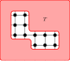
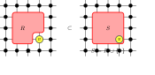
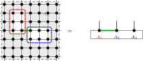

24 PEPS Fundamental Theorem
A projected entangled pair state (PEPS) is built from a finite simple graph \(G=(V,E)\) by placing a local tensor \(A_v\) at every vertex \(v\) and contracting the tensors along the edges. Each vertex carries one physical index \(\sigma (v)\in \{ 0,\ldots ,d-1\} \), and each edge \(e\) carries a virtual index of bond dimension \(D_e\) shared by its two endpoints. On a square lattice this is the picture
in which every black dot is a local tensor, the thin horizontal and vertical bonds are the virtual edges, and the short thick stub at each vertex is its physical leg.
The state generated by \(A\) is the tensor whose coefficient at a physical configuration \(\sigma \colon V\to \{ 0,\ldots ,d-1\} \) is obtained by summing the product of the local tensors over all virtual configurations:
where \(\eta \) ranges over the assignments of a bond index \(\eta (e)\in \{ 0,\ldots , D_e-1\} \) to every edge and \(\eta _v\) is the family of indices that \(\eta \) places on the edges incident to \(v\). Closing every virtual bond while keeping the physical legs open gives the full state tensor; fixing the legs to a configuration \(\sigma \) evaluates the scalar \(c_A(\sigma )\). On the five-vertex example graph this is
A PEPS is injective when at every vertex the physical vectors \(A_v(\eta _v,\cdot )\in \mathbb {C}^d\), indexed by the virtual configurations \(\eta _v\) on the incident edges, are linearly independent; equivalently, the linear map they define from the coefficient space on virtual configurations into \(\mathbb {C}^d\) has trivial kernel:

It is normal when blocking the tensors over suitable regions makes the blocked tensors injective, following [ MGRPG\(^{+}\)18 , Section 4, lines 1316–1318 ] .
Two PEPS that generate the same state need not have equal tensors. The virtual indices are internal, so on any edge \(e\) one may insert an invertible matrix \(X_e\) on one endpoint and its inverse on the other without changing any coefficient. Such a gauge on the bonds is the only freedom, and the two main results of the chapter make this precise.
For injective PEPS on a connected graph with positive bond dimensions, two tensors generate the same state if and only if they are related by a gauge on the edges, with the gauges unique modulo the balanced edge scalars of Section 24.9. A gauge always gives the same state (Theorem 24.15); the converse is the positive-bond case of [ MGRPG\(^{+}\)18 , Theorem 2 ] (Theorem 24.185).
For a normal PEPS on a connected graph the same conclusion holds once the tensors become injective after blocking suitable regions (Theorem 24.315; the general normal-PEPS theorem in [ MGRPG\(^{+}\)18 , Section 4 ] , following its Theorem 3).
In the citations below, [ MGRPG\(^{+}\)18 , Theorem 3 ] denotes only the translationally invariant square-lattice theorem. The connected-graph normal theorem and the normal-MPS corollaries are cited as results of [ MGRPG\(^{+}\)18 , Section 4 ] .
The chapter builds these results in stages. Section 24.1 fixes the tensors, the generated state, the bond gauges, and vertex injectivity, together with the local inverse used throughout. Section 24.2 reduces a single edge to a three-site contraction by blocking its complementary middle region. Section 24.3 turns a virtual insertion on an edge into a physical operation at an endpoint and extracts the per-edge gauge. Section 24.4 transports the edge gauges to all regions and proves the Fundamental Theorem for injective PEPS. Section 24.5 shows that injective regions are closed under unions, the step that lifts local injectivity to the larger regions a normal PEPS requires. Sections 24.6 and 24.7 supply the square-lattice and torus geometries. Section 24.8 proves the Fundamental Theorem for normal PEPS, and Section 24.9 records the scalar freedom that remains in the edge gauges.
24.1 Finite Graph Tensor Networks
This section fixes the objects of the chapter: the local tensors, the state they generate, the gauge freedom on the bonds, and the vertex injectivity condition together with the local inverse it provides.
24.1.1 PEPS tensors and the states they generate
For a finite simple graph \(G\), an edge is an ordered pair \((u,v)\) with \(u {\lt} v\) and \(u\) adjacent to \(v\). The ordering is only used to avoid double counting.
For a vertex \(v\), an incident edge is an edge of \(G\) having \(v\) as one of its endpoints.
A PEPS tensor on \(G\) with physical dimension \(d\) consists of a bond dimension \(D_e\) for every edge \(e\), together with a local tensor at each vertex \(v\) whose virtual indices are indexed by the edges incident to \(v\) and whose physical index lies in \(\{ 0,\ldots ,d-1\} \). The local tensor at \(v\) has one physical leg and one virtual leg for each incident edge:

A virtual configuration assigns to every edge \(e\) one basis index in the corresponding bond space of dimension \(D_e\).
For a physical configuration \(\sigma \) on the vertices, the PEPS state coefficient is obtained by summing over all virtual configurations and, for each such configuration, multiplying the local tensor entries over all vertices.
Two PEPS tensors represent the same state if all their state coefficients agree for every physical configuration.
24.1.2 Gauge transformations on the bonds
An invertible matrix on an edge acts on its two endpoint tensors by opposite oriented insertions. Absorbing such a matrix on every edge gives a gauge transformation that leaves the generated state unchanged.
For an edge \(e = (u,w)\) with \(u {\lt} w\) and gauge \(X_e \in \mathrm{GL}(D_e)\), the gauge matrix applied at vertex \(v\) is \(X_e\) if \(v = u\) and \((X_e^{-1})^\top \) if \(v = w\). Diagrammatically, the ordered edge carries opposite endpoint actions:
The gauged tensor at vertex \(v\) is \(A^X_v\). For each incident edge \(ie\), write \(M_{ie}\) for the matrix specified by Definition 24.7, applied at the vertex \(v\) to the gauge on the underlying edge of \(ie\). Then \(A^X_v(\eta , \sigma ) = \sum _{\eta '} (\prod _{ie} M_{ie}(\eta (ie), \eta '(ie))) A_v(\eta ', \sigma )\). In tensor-network notation, one inserts the appropriate gauge matrix on each incident virtual leg of the local tensor:

The PEPS tensor obtained by applying edge-gauge matrices to \(A\), with vertex tensors \(A^X_v\).
Given a tensor family \(B\) and an oriented gauge matrix \(X_e\) on every edge, the absorbed tensor family is \(\widetilde B=B^X\); at each vertex, its local tensor is obtained by inserting the oriented endpoint matrices on the incident virtual legs.
The absorbed tensor family has \(D_{\widetilde B}(e)=D_B(e)\) for every edge \(e\).
Since \(\widetilde B=B^X\) is defined with the same bond-dimension function as \(B\), one has \(D_{\widetilde B}(e)=D_{B^X}(e)=D_B(e)\) for every edge \(e\).
If \(M_{ie}\) is the oriented endpoint matrix attached to an incident edge \(ie\) at \(v\), then \(\widetilde B_v(\eta ,\sigma )= \sum _{\eta '}(\prod _{ie}M_{ie}(\eta (ie),\eta '(ie)))B_v(\eta ',\sigma )\).
Expanding \(\widetilde B=B^X\) at a vertex gives \(\widetilde B_v(\eta ,\sigma )=(B^X)_v(\eta ,\sigma )= \sum _{\eta '}(\prod _{ie}M_{ie}(\eta (ie),\eta '(ie)))B_v(\eta ',\sigma )\).
Two PEPS tensors \(A, B\) are gauge-equivalent if they have the same bond dimensions and \(B\) is obtained from \(A\) by applying invertible gauge matrices on each edge.
Applying a gauge to a PEPS tensor preserves the state coefficients. Along each internal edge, the two endpoint insertions cancel:
Gauge equivalence implies that the two PEPS tensors represent the same state.
24.1.3 Vertex injectivity and the local inverse
When the linear map from the coefficient space on virtual configurations to \(\mathbb {C}^d\), sending the basis vector at \(\eta _v\) to \(A_v(\eta _v,\cdot )\), is injective, the family is linearly independent and the map has a left inverse. This inverse turns a matrix inserted on an incident bond into an operation on the physical leg, the construction that drives the gauge extraction in later sections.
The local tensor evaluated at vertex \(v\) with virtual-index weighting \(f\), computing \(\sum _\eta (\prod _{ie} f(ie)(\eta (ie))) \cdot A_v(\eta , \sigma )\). This is multilinear in the components of \(f\), not linear in the full tuple.
A PEPS tensor \(A\) is vertex-injective if, at every vertex \(v\), the family of physical vectors
indexed by virtual configurations \(\eta \) on the edges incident to \(v\) is linearly independent in \(\mathbb {C}^d\). Equivalently, extending \(A_v\) by linearity to a map from the free vector space on virtual configurations into the physical space \(\mathbb {C}^d\) gives a linear map with trivial kernel. This matches the injectivity formulation of [ MGRPG\(^{+}\)18 , Section 3 ] , where the local tensor is interpreted as a map from virtual configurations to the physical space.
For a fixed vertex \(v\), the family of local physical vectors \(\eta \mapsto A_v(\eta , \cdot )\) extends by linearity to a map from the coefficient space on local virtual configurations at \(v\) into \(\mathbb {C}^d\).
If \(A\) is vertex-injective and \(R\) is a coefficient function on the local virtual configurations at \(v\) satisfying, for every physical index \(\tau \),
then \(R=0\).
The displayed hypothesis says that the local tensor map sends \(R\) to the zero vector. Vertex injectivity makes this map injective, hence \(R=0\).
If \(A\) is vertex-injective, one may choose a linear map \(\Psi _v\) from \(\mathbb {C}^d\) to the coefficient space on local virtual configurations at \(v\) such that \(\Psi _v \circ \Phi _v = \mathbb {1}\).
For an endomorphism \(T\) of the coefficient space on local virtual configurations at \(v\), define the local physical operator
For every coefficient function \(c\) on the local virtual configurations at \(v\),
This is immediate from \(\Psi _v \circ \Phi _v = \mathbb {1}\).
If two virtual operations have the same canonical physical realization, then they agree.
Evaluate both physical realizations on vectors in the image of the local tensor map and use vertex injectivity.
The local projector is the physical realization of the identity virtual operator:
For a physical operator \(O\) on the local physical space at \(v\), define its virtual pullback by
This is the local injectivity step used in the physical-to-virtual direction of the insertion-algebra argument in [ MGRPG\(^{+}\)18 , Section 3 ] .
For every coefficient function \(c\), applying the local tensor map after the virtual pullback gives the projection of \(O(\Phi _v(c))\) onto the image of \(\Phi _v\).
Expand the definitions. The chosen left inverse gives \(\Psi _v\Phi _v=\mathbb {1}\), and the remaining map is the local projector.
If \(O\) sends every vector in the image of \(\Phi _v\) back into that image, then its virtual pullback realizes exactly the action of \(O\) on \(\Phi _v(c)\).
Use the preceding theorem and the image-preservation hypothesis.
If a physical operator \(O\) realizes a virtual operation \(T\) on every vector in the image of \(\Phi _v\), then pulling back \(O\) recovers \(T\).
After applying the local tensor map, both virtual operations have the same image. Vertex injectivity makes the local tensor map injective, so the virtual operations agree.
Two physical endpoint operations have the same virtual pullback exactly when their projected actions agree on every vector in the image of the local tensor map:
Apply the local tensor map to the two virtual pullbacks and use the pullback specification. The converse follows from vertex injectivity; the forward direction is obtained by rewriting the two virtual pullbacks.
Pulling back the canonical physical realization of a virtual operation recovers the original virtual operation.
The canonical physical realization agrees with the virtual operation on the image of the local tensor map. Apply the preceding recovery theorem.
Let \(P_v=\Phi _v\circ \Psi _v\) be the local projector, and let \(T_O=\Psi _v\circ O\circ \Phi _v\) be the virtual pullback of a physical operator \(O\). Then
Expand the definitions of the physical realization, the virtual pullback, and the local projector.
Suppose that the compressed physical action \(P_v O P_v\) agrees with the canonical physical realization of a virtual operation \(T\). Then the virtual pullback of \(O\) is \(T\).
The physical realization of the virtual pullback of \(O\) is \(P_v O P_v\). By hypothesis this is the physical realization of \(T\). Injectivity of the canonical physical realization gives equality of the virtual operations.
The compressed physical action \(P_v O P_v\) is the canonical physical realization of a virtual operation \(T\) if and only if the virtual pullback of \(O\) is \(T\).
One implication follows by realizing both virtual operations physically and using the formula for the physical realization of a pulled-back operator. The converse is the preceding recovery theorem.
A matrix on one edge incident to \(v\) acts on the coefficient space of local virtual configurations by applying the matrix to that edge coordinate and summing over the input edge index while keeping the residual virtual configuration fixed.
If the coefficient function is the unit basis function at one local virtual configuration, and the matrix acts on the distinguished incident edge, the result is the sum over the new distinguished edge index with the residual local boundary held fixed.
Evaluate both sides on a local virtual configuration and split into the two cases according to whether the residual boundary agrees with the fixed residual boundary.
Applying the local tensor map after a one-edge matrix action on a basis virtual configuration gives the corresponding linear combination of local tensor components.
Use the preceding coefficient identity and linearity of the local tensor map.
If \(A\) is vertex-injective, then a matrix acting on one edge incident to \(v\) is realized by a physical operator on the physical space at \(v\).
Apply the physical realization of local virtual operations to the one-edge matrix action.
Choosing one incident edge at \(v\) identifies the set of local virtual configurations with the product of the bond index on that edge and the residual indices on the remaining incident edges.
24.1.4 Edge-centred decomposition of a contraction
Fixing an edge \(e=(u,v)\) splits the vertex set into the two endpoints and the middle region \(V\setminus \{ u,v\} \). The state coefficient factors accordingly, which is the starting point for the edge-middle reduction of the next section.
For an edge \(e = (u,v)\), the middle region is the complement \(V \setminus \{ u,v\} \).
For an edge \(e = (u,v)\), the three regions \(\{ u\} \), \(V \setminus \{ u,v\} \), and \(\{ v\} \) cover the whole vertex set.
Every vertex is either \(u\), \(v\), or different from both.
If \(2{\lt}|V|\), then for every edge \(e=(u,v)\) the middle region \(V\setminus \{ u,v\} \) is nonempty.
The middle region has cardinality \(|V|-2\). Hence \(2{\lt}|V|\) gives \(|V|-2{\gt}0\).
For any edge \(e = (u,v)\) and any function \(f\) on the vertex set with values in a commutative monoid \(M\),
Isolate the two distinguished endpoints in the product over \(V\) and group the remaining factors into the middle region.
For any edge \(e = (u,v)\), each summand in the PEPS coefficient factors into the tensor contribution at \(u\), the product over the middle region \(V \setminus \{ u,v\} \), and the tensor contribution at \(v\).
Expand the state coefficient and apply the product splitting at the chosen edge to the per-vertex product inside each summand.
For an edge \(e=(u,v)\), the boundary data consist of the virtual index on \(e\), the remaining virtual indices incident to \(u\), and the remaining virtual indices incident to \(v\). These are the indices over which the endpoint tensors couple to the blocked middle region.
A global virtual configuration determines edge-centered boundary data by reading the index on the distinguished edge and the residual endpoint indices.
A global virtual configuration is compatible with fixed edge-centered boundary data if it has the prescribed index on the distinguished edge and the prescribed residual indices at both endpoint stars.
For fixed boundary data \(\beta \), the middle configurations are the subtype of global virtual configurations satisfying the compatibility condition with \(\beta \).
A global virtual configuration is equivalently a choice of edge-centered boundary data together with a middle configuration in the corresponding fibre.
The left endpoint local virtual configuration is reconstructed from the edge index and the residual data on the left endpoint star.
The right endpoint local virtual configuration is reconstructed from the edge index and the residual data on the right endpoint star.
If a global virtual configuration is compatible with boundary data, then its restriction to the left endpoint star is the local configuration reconstructed from those data.
If a global virtual configuration is compatible with boundary data, then its restriction to the right endpoint star is the local configuration reconstructed from those data.
For an edge \(e=(u,v)\), inserted-edge boundary data consist of two independent indices on the bond \(e\), together with the residual virtual indices incident to \(u\) and to \(v\). These are the boundary indices used when a matrix is inserted on the distinguished bond.
Ordinary edge-centered boundary data determine inserted-edge boundary data by using the same bond index at both endpoints. This is the diagonal boundary datum selected by the identity matrix in the edge-insertion coefficient.
Ordinary edge-boundary data together with an independent right endpoint bond index are equivalent to inserted-edge boundary data. The ordinary boundary supplies the left bond index and the two residual endpoint boundaries.
Ordinary edge-boundary data together with an independent left endpoint bond index are equivalent to inserted-edge boundary data. The ordinary boundary supplies the right bond index and the two residual endpoint boundaries.
The diagonal inserted-boundary configurations are those inserted-edge boundary data for which the two distinguished bond indices agree. This is the support of the identity matrix inside the inserted-boundary sum.
Ordinary edge-boundary data are equivalent to diagonal inserted-boundary data. This is the finite reindexing map used after the identity matrix has removed all off-diagonal inserted-boundary summands.
24.2 Edge-Middle Reduction
Fixing an edge \(e=(u,v)\) and blocking the whole complementary middle region \(V\setminus \{ u,v\} \) presents the state coefficient as a three-site contraction: the endpoint tensors at \(u\) and \(v\) joined through one blocked middle tensor. Inserting the identity on the bond \(e\) recovers the original coefficient, so a matrix inserted on \(e\) records the difference between two tensors that generate the same state. This section also identifies when the middle tensor is injective, the hypothesis used by the edge-kernel argument of Section 24.3.
Fixing the residual boundary configurations at the endpoint vertices \(u\) and \(v\) but leaving the bond \(e\) out of the middle region, the open middle tensor is the contraction over all virtual indices away from \(e\) that are compatible with those boundary configurations.
For an edge \(e=(u,v)\), the middle physical configurations are the physical indices on the vertices in \(V\setminus \{ u,v\} \). A global physical configuration restricts to such a middle configuration.
The ordinary and open middle contractions may be written using only the middle physical configuration, rather than a physical configuration on all vertices. This is the middle tensor in the three-site chain obtained after the edge blocking in arXiv:1804.04964, Section 3.
The middle contractions written with a global physical configuration are the corresponding middle-indexed contractions evaluated on the restricted middle physical configuration.
Rewrite the product over \(V\setminus \{ u,v\} \) as the product over the corresponding finite set of middle vertices.
An ordinary middle configuration for the edge-blocked contraction restricts to a virtual configuration on all edges except the distinguished edge. This is the first reindexing map needed to compare the identity insertion with the ordinary edge-blocked middle tensor.
Conversely, a compatible open middle configuration becomes an ordinary middle configuration after the fixed edge-boundary index is restored on the distinguished edge. Together with the restriction map, this gives the finite reindexing underlying the identity-insertion specialization.
For fixed edge-boundary data, ordinary middle configurations are equivalent to compatible open-middle configurations. This is the finite reindexing used when the inserted matrix is the identity.
The ordinary middle tensor and the open middle tensor agree after restoring the fixed distinguished-edge index and reindexing the finite sum, with the physical index already restricted to the middle block.
Reindex the ordinary middle configurations by the equivalence with compatible open-middle configurations, then compare each local tensor entry.
For an edge \(e=(u,v)\) and a matrix \(X\) acting on the bond space of \(e\), the edge insertion coefficient is the contraction obtained by inserting \(X\) between the endpoint tensors and the open middle tensor:
Restoring the fixed distinguished-edge index identifies the ordinary blocked middle tensor with the open middle tensor. This is the finite reindexing used before the identity matrix collapses the two inserted bond indices to the diagonal.
Reindex the ordinary middle configurations by the finite equivalence with open-middle configurations and compare the local tensor factors pointwise.
On the diagonal boundary datum selected by the identity matrix, the inserted-edge summand is the ordinary edge-blocked summand. Thus the remaining identity-insertion step is purely a finite summation statement: the off-diagonal inserted boundary data vanish and the diagonal data reindex the ordinary edge-boundary sum.
Substitute the identity matrix entry \(\mathbf{1}_{a,a}=1\) and apply the reindexing \(C_{A,M_e}(\beta )=C^{\mathrm{open}}_{A,M_e}(\beta )\) from Theorem 24.68.
If the two inserted bond indices are distinct, then the corresponding summand in the identity insertion is zero. This is the pointwise off-diagonal vanishing used before the inserted-boundary sum is restricted to its diagonal part.
For \(a\ne b\), the identity matrix entry \(\mathbf{1}_{a,b}=0\) makes the inserted summand vanish.
If the inserted matrix on the distinguished edge is the identity, then the edge insertion coefficient is the ordinary edge-blocked coefficient.
Split the inserted-boundary sum according to whether the two bond indices \(a,b\) agree:
The off-diagonal sum vanishes because \(\mathbf{1}_{a,b}=0\) for \(a\ne b\), and the diagonal sum reindexes to \(C_A(e;\sigma )\) through the equivalence between diagonal inserted-boundary configurations and ordinary edge-boundary configurations.
Fixing the edge-centered boundary data, the blocked middle tensor is the sum over global virtual configurations compatible with those data of the product of local tensor entries over the middle region \(V\setminus \{ u,v\} \). The graph-local contraction is read as a three-site chain:

The edge-blocked coefficient is the three-block contraction obtained from the left endpoint tensor, the blocked middle tensor, and the right endpoint tensor at the chosen edge.
For every edge \(e\), the edge-blocked three-block coefficient is exactly the original PEPS state coefficient.
Write \(\operatorname {Coeff}_A(\sigma )\) for the PEPS state coefficient and \(C_A(e;\sigma )\) for the edge-blocked coefficient, and put \(e=(u,v)\) and \(M_e=V\setminus \{ u,v\} \). The equivalence \(\omega \leftrightarrow (\beta ,\omega _{M_e})\) between global virtual configurations and an edge boundary configuration with a compatible middle configuration rewrites the PEPS coefficient as
Under the equivalence, \(\omega |_u=\beta _u\) and \(\omega |_v=\beta _v\); the inner sum over \(\omega _{M_e}\) is exactly \(C_{A,M_e}(\beta ,\sigma |_{M_e})\). Thus \(C_A(e;\sigma )=\operatorname {Coeff}_A(\sigma )\).
If the inserted matrix on the distinguished edge is the identity, then the edge insertion coefficient is the original PEPS state coefficient.
Let \(e=(u,v)\) and put \(M_e=V\setminus \{ u,v\} \). With \(\mathbb {1}\) inserted on \(e\), the inserted-boundary sum is
Here \(a,b\) are the two copies of the distinguished bond index, while \(\lambda ,\rho \) are the remaining virtual configurations at \(u\) and \(v\). The factor \(\delta _{a,b}\) leaves only the diagonal \(a=b\), and the open-middle reindexing gives \(C^{\mathrm{open}}_{A,M_e}(\lambda ,\rho ;\sigma |_{M_e}) =C_{A,M_e}(a,\lambda ,\rho ;\sigma |_{M_e})\). Hence \(C_A(e,\mathbb {1};\sigma )=C_A(e;\sigma )=\operatorname {Coeff}_A(\sigma )\).
If two PEPS tensors have the same state, then their edge-blocked coefficients agree at every edge and every physical configuration.
For every physical configuration \(\sigma \),
If two PEPS tensors have the same state, then their edge-centered identity insertions agree at every edge and every physical configuration.
For every physical configuration \(\sigma \),
For the edge-blocked three-site chain at \(e=(u,v)\), the middle tensor is the family obtained by fixing the two residual endpoint boundaries and evaluating the open middle contraction on the middle physical index. Its injectivity is the middle-block part of the assertion following the edge-blocking diagram.
If the virtual configuration space on the complement of the distinguished edge is empty, then for every residual boundary label \(\rho \) the vector \(T_{A,M_e}^{\rho }\) in the edge-middle tensor family is zero.
The finite sum defining the open middle tensor is taken over the empty complement configuration space, and is therefore zero.
If the complement configuration space is empty and the residual boundary-label set is nonempty, then the edge-middle tensor family is not injective.
Choose a residual boundary label. By the preceding lemma its middle-tensor vector is the zero vector. A linearly independent family cannot contain a zero vector.
For a chosen edge \(e=(u,v)\), the edge-blocked three-site chain is injective when the left endpoint tensor map, the middle tensor family, and the right endpoint tensor map are all injective.
For a singleton block \(\{ v\} \), the blocked physical index is the original physical index and the blocked tensor is
Its injectivity is \(\operatorname {inj}(T_{A,\{ v\} })\). The comparison with a region-injectivity predicate \(\kappa \) records the implication
Let \(A\) be vertex-injective with every bond dimension positive. Then the concrete region-injectivity predicate of \(A\) satisfies the singleton comparison: injectivity of a singleton blocked tensor implies injectivity of the corresponding singleton region.
Under vertex injectivity and positive bond dimensions every finite region is injective. In particular the singleton region \(\{ v\} \) is injective, so the comparison holds independently of the singleton-tensor hypothesis.
If \(A\) is vertex-injective, then every singleton blocked tensor is injective. For every vertex \(v\),
For \(R=\{ v\} \), the contraction defining \(T_{A,R}\) has one factor. Hence
Thus \(\operatorname {inj}(A_v)\) is exactly \(\operatorname {inj}(T_{A,\{ v\} })\). Vertex injectivity gives \(\forall v,\operatorname {inj}(A_v)\), and therefore \(\forall v,\operatorname {inj}(T_{A,\{ v\} })\). For a fixed \(v\), this is the displayed assertion.
Assume that a region-injectivity predicate \(\kappa \) satisfies, for every vertex \(v\),
Then, for every vertex \(v\),
For each \(v\), the preceding theorem gives \(A\text{ vertex-injective}\Longrightarrow \operatorname {inj}(T_{A,\{ v\} })\). The comparison hypothesis gives \(\operatorname {inj}(T_{A,\{ v\} })\Longrightarrow \kappa (\{ v\} )\). Their composition is the claimed implication.
Assume that \(\kappa \) satisfies singleton comparison and union closure: \(\operatorname {inj}(T_{A,\{ v\} })\Longrightarrow \kappa (\{ v\} )\) for every vertex \(v\), and \(\kappa (R)\wedge \kappa (S)\Longrightarrow \kappa (R\cup S)\). If \(A\) is vertex-injective, then every nonempty finite region \(R\) satisfies \(\kappa (R)\).
For \(R\ne \varnothing \), write \(R=\bigcup _{v\in R}\{ v\} \). The preceding theorem turns singleton comparison and vertex injectivity into \(\kappa (\{ v\} )\) for every \(v\in R\). Applying the finite-union consequence of union closure to these singleton regions gives \(\kappa (R)\).
A comparison from finite-region injectivity to the edge-middle tensor records the following assertion: if the middle vertex region \(V\setminus \{ u,v\} \) is injective after blocking, then the middle tensor in the edge-blocked three-site chain is injective. This isolates the finite-region contraction claim in [ MGRPG\(^{+}\)18 , Section 3 ] .
If the original PEPS tensor is vertex-injective, then the two endpoint tensor maps in the edge-blocked three-site chain are injective.
If \(e=(u,v)\), vertex injectivity gives \(\operatorname {inj}(T_{A,u})\) and \(\operatorname {inj}(T_{A,v})\), which are the left and right endpoint tensor maps of the edge-blocked chain.
If the original PEPS tensor is vertex-injective, then the two endpoint tensor maps in the edge-blocked three-site chain are injective at every edge.
For each \(e=(u,v)\), Theorem 24.88 gives \(\operatorname {inj}(T_{A,u})\wedge \operatorname {inj}(T_{A,v})\).
For a vertex-injective PEPS tensor, injectivity of the edge-blocked middle tensor gives the full injectivity statement for the edge-blocked three-site chain.
Let \(e=(u,v)\) and put \(M_e=V\setminus \{ u,v\} \). The endpoint theorem supplies \(\operatorname {inj}(T_{A,u})\) and \(\operatorname {inj}(T_{A,v})\), while the hypothesis is \(\operatorname {inj}(T_{A,M_e})\). Hence
If every edge-middle tensor is injective, then a vertex-injective PEPS tensor gives an injective edge-blocked three-site chain at every edge.
For each \(e=(u,v)\), put \(M_e=V\setminus \{ u,v\} \). Vertex injectivity gives \(\operatorname {inj}(T_{A,u})\) and \(\operatorname {inj}(T_{A,v})\), while the hypothesis gives \(\operatorname {inj}(T_{A,M_e})\). Hence
is the injectivity assertion for the edge-blocked three-site chain at \(e\).
Suppose the middle region \(V\setminus \{ u,v\} \) is injective after blocking, and suppose this region-injectivity assertion has been identified with injectivity of the corresponding edge-middle tensor family. Then a vertex-injective PEPS tensor gives an injective edge-blocked three-site chain at the edge \(e=(u,v)\).
Let \(e=(u,v)\) and put \(M_e=V\setminus \{ u,v\} \). The comparison gives \(\kappa (M_e)\Longrightarrow \operatorname {inj}(T_{A,M_e})\). Vertex injectivity supplies \(\operatorname {inj}(T_{A,u})\) and \(\operatorname {inj}(T_{A,v})\). The preceding reduction then gives
Suppose every edge-middle region \(V\setminus \{ u,v\} \) is injective after blocking, and suppose finite-region injectivity has been identified with injectivity of the corresponding edge-middle tensor family. Then every edge-middle tensor family is injective.
For each edge \(e=(u,v)\), put \(M_e=V\setminus \{ u,v\} \). The hypotheses give \(\kappa (M_e)\). The comparison implication \(\kappa (M_e)\Longrightarrow \operatorname {inj}(T_{A,M_e})\) yields \(\operatorname {inj}(T_{A,M_e})\) for every edge.
Suppose every edge-middle region \(V\setminus \{ u,v\} \) is injective after blocking, and suppose finite-region injectivity has been identified with injectivity of the corresponding edge-middle tensor family. Then a vertex-injective PEPS tensor gives an injective edge-blocked three-site chain at every edge.
For every edge \(e=(u,v)\), put \(M_e=V\setminus \{ u,v\} \). The region hypothesis gives \(\kappa (M_e)\), and the comparison gives \(\kappa (M_e)\Longrightarrow \operatorname {inj}(T_{A,M_e})\). Vertex injectivity gives \(\operatorname {inj}(T_{A,u})\) and \(\operatorname {inj}(T_{A,v})\). Thus
Let \(e=(u,v)\) and put \(M_e=V\setminus \{ u,v\} \). Assume \(M_e\ne \varnothing \). Assume also singleton comparison, union closure for \(\kappa \), and the comparison \(\kappa (M_e)\Longrightarrow \operatorname {inj}(T_{A,M_e})\). If \(A\) is vertex-injective, then the edge-middle tensor family \(T_{A,M_e}\) is injective.
The finite-region theorem applied to \(M_e=\bigcup _{w\in M_e}\{ w\} \) gives \(\kappa (M_e)\). The edge-middle comparison sends this to \(\operatorname {inj}(T_{A,M_e})\).
Let \(e=(u,v)\) and put \(M_e=V\setminus \{ u,v\} \). Under the hypotheses of the preceding theorem, vertex injectivity of \(A\) gives injectivity of the edge-blocked three-site chain at \(e\).
The preceding theorem gives \(\operatorname {inj}(T_{A,M_e})\). The endpoint reduction combines this middle-tensor injectivity with vertex injectivity at \(u\) and \(v\).
If \(M_e=V\setminus \{ u,v\} \) is nonempty for every edge \(e=(u,v)\), then the preceding one-edge statement applies at every edge. Thus vertex injectivity of \(A\) gives injectivity of every edge-blocked three-site chain.
Apply the one-edge statement separately to each edge \(e\).
Assume singleton comparison, union closure for \(\kappa \), the comparison \(\kappa (M_e)\Longrightarrow \operatorname {inj}(T_{A,M_e})\), and vertex injectivity of \(A\). If \(2{\lt}|V|\), then \(V\setminus \{ u,v\} \ne \varnothing \) for every edge \(e=(u,v)\), and these hypotheses give \(\operatorname {inj}(T_{A,V\setminus \{ u,v\} })\) and edge-blocked three-site injectivity at every edge.
For each \(e=(u,v)\), Theorem 24.41 gives \(V\setminus \{ u,v\} \ne \varnothing \). Apply the preceding all-edge singleton theorem.
24.3 Edge Kernels and Gauge Transport
When the endpoint tensors are injective, a matrix inserted on the bond \(e\) is realized by a physical operation on a neighbouring physical leg, and conversely. This sets up an isomorphism between the bond-\(e\) matrix algebra of \(A\) and that of \(B\), which by the Skolem–Noether theorem is conjugation by an invertible matrix \(X_e\), the edge gauge: for every physical configuration \(\sigma \) and bond matrix \(M\),
Collecting the \(X_e\) over all edges and reconciling them on the shared bonds produces the global gauge family that relates the two tensors.
Let \(V\) be a vertex type with decidable equality. A finite kernel descent datum is a predicate \(K\) on finite subsets \(S\subseteq V\) together with implications
In the edge-blocking proof, \(K(S)\) is the assertion that the boundary coefficients \(c_{\rho }\), with the virtual indices exposed at that stage, give zero after the tensors in \(S\) have been contracted.
For a finite kernel descent datum and any finite \(R\subseteq V\),
More generally, if \(K(\varnothing )\Longrightarrow Q\), then \(K(R)\Longrightarrow Q\).
Induct on the finite set \(R\). If \(R=\varnothing \), there is nothing to prove. Otherwise write \(R=S\cup \{ j\} \) with \(j\notin S\). The deletion implication gives \(K(R)\Longrightarrow K(S)\), and the induction hypothesis gives \(K(S)\Longrightarrow K(\varnothing )\).
Let \(e=(u,v)\) and \(M_e=V\setminus \{ u,v\} \). An edge-middle kernel descent datum is indexed by boundary labels \(\rho \) consisting of the two residual endpoint configurations. It assigns to every finitely supported coefficient family \(c=(c_{\rho })_{\rho }\) a finite kernel descent datum \(K_c(S)\) such that
and
Let \(e=(u,v)\) and \(M_e=V\setminus \{ u,v\} \). If an edge-middle kernel descent datum is given, then \(T_{A,M_e}\) is injective. Consequently, if \(A\) is vertex-injective, the edge-blocked three-site chain at \(e\) is injective.
Let \(c=(c_{\rho })_{\rho }\) be a finite linear relation among the middle tensor vectors:
The initial part of the descent datum gives \(K_c(M_e)\). The finite descent lemma gives \(K_c(M_e)\Longrightarrow K_c(\varnothing )\), and the terminal part gives \(\forall \rho , c_{\rho }=0\). Thus every finite relation is trivial, which is \(\operatorname {inj}(T_{A,M_e})\). Vertex injectivity at \(u\) and \(v\) gives \(\operatorname {inj}(T_{A,u})\) and \(\operatorname {inj}(T_{A,v})\); the edge-blocked three-site injectivity at \(e\) follows.
For a tensor map or blocked tensor family \(T\), write \(\operatorname {inj}(T)\) for the assertion that \(T\) is injective. If \(A\) is vertex-injective and every bond dimension is positive, then for every edge \(e=(u,v)\),
Here \(T_{A,u}\) and \(T_{A,v}\) are the two endpoint tensor maps, and \(T_{A,V\setminus \{ u,v\} }\) is the blocked middle tensor family. This is the precise assertion after the edge-blocking diagram in [ MGRPG\(^{+}\)18 , Section 3 ] . The positive-bond hypothesis is the source’s standing assumption that injective PEPS have nonzero virtual bond spaces. Without it, an empty complement configuration space can make the middle tensor vanish identically; Lemmas 24.79 and 24.80 record this obstruction.
Fix \(e=(u,v)\) and put \(M_e=V\setminus \{ u,v\} \). From vertex injectivity, construct the edge-middle descent datum required by Theorem 24.102: for each finite relation
the associated conditions \(K_c(S)\) satisfy \(K_c(M_e)\), \(j\in S\Longrightarrow K_c(S)\Longrightarrow K_c(S\setminus \{ j\} )\), and \(K_c(\varnothing )\Longrightarrow \forall \rho , c_{\rho }=0\). The descent implication is the local contraction identity: for \(j\in S\), vertex injectivity at \(j\) gives a left inverse \(L_j\), and applying \(L_j\) to the relation contracts away that tensor,
The contraction at \(j\) uses the factorization
where \(\mathcal C_e\) is the complement virtual-configuration space for the distinguished edge \(e\) and \(\mathcal V_j\) is the local virtual configuration space at \(j\). The terminal step \(K_c(\varnothing )\Longrightarrow \forall \rho , c_{\rho }=0\) isolates each boundary coefficient by surjectivity of the boundary labelling, which is where the positive bond dimensions are used to fill the interior virtual indices of a witness configuration. The kernel descent theorem gives \(\operatorname {inj}(T_{A,M_e})\). The same theorem, together with vertex injectivity at \(u\) and \(v\), gives \(\operatorname {inj}(T_{A,u})\), \(\operatorname {inj}(T_{A,M_e})\), and \(\operatorname {inj}(T_{A,v})\) as the edge-blocked three-site injectivity assertion.
Let \(A\) be vertex-injective and let \(e=(u,v)\) be an edge. For every matrix \(M\) on the bond space of \(e\), the one-leg virtual action induced by \(M\) on the local tensor at \(u\), and likewise at \(v\), is realized by a physical operator on that endpoint’s physical space.

Apply the one-edge realization theorem to the two endpoint incidences of the distinguished edge.
Let \(e=(u,v)\). A physical operator at the left endpoint pulls back to the one-edge virtual action of \(M^{\mathsf T}\) if and only if its compressed physical action is the canonical realization of that one-edge virtual action.
This is the projected local recovery equivalence applied to the left incident edge of \(e\), with the transpose convention used by the left-endpoint coefficient identity.
Let \(e=(u,v)\). A physical operator at the right endpoint pulls back to the one-edge virtual action of \(M\) if and only if its compressed physical action is the canonical realization of that one-edge virtual action.
This is the projected local recovery equivalence applied to the right incident edge of \(e\).
Let \(e=(u,v)\). If \(P_uO_1P_u=\Phi _uT_{u,e}(M^{\mathsf T})\Psi _u\) and \(P_vO_2P_v=\Phi _vT_{v,e}(M)\Psi _v\), then \(\Psi _uO_1\Phi _u=T_{u,e}(M^{\mathsf T})\) and \(\Psi _vO_2\Phi _v=T_{v,e}(M)\). Here \(T_{w,e}(N)\) denotes the virtual operator on the legs incident to \(w\) which acts by \(N\) on the leg belonging to \(e\) and by the identity on the other incident legs.
The endpoint equivalences give \(P_uO_1P_u=\Phi _uT_{u,e}(M^{\mathsf T})\Psi _u \iff \Psi _uO_1\Phi _u=T_{u,e}(M^{\mathsf T})\) and \(P_vO_2P_v=\Phi _vT_{v,e}(M)\Psi _v \iff \Psi _vO_2\Phi _v=T_{v,e}(M)\). The two hypotheses are the left sides of these equivalences.
Let \(e=(u,v)\). Suppose that \(P_uO_1P_u=\Phi _uT_{u,e}(M^{\mathsf T})\Psi _u\) and \(P_vO_2P_v=\Phi _vT_{v,e}(M)\Psi _v\). Suppose also that \(O_1\) maps the image of \(\Phi _u\) into itself and \(O_2\) maps the image of \(\Phi _v\) into itself. Then
The preceding endpoint theorem identifies the two virtual pullbacks with the one-edge actions of \(M^{\mathsf T}\) and \(M\). The pullback specification gives the projected physical actions, and the image-preservation hypotheses remove the endpoint projectors.
Let \(e=(u,v)\) and let \(\sigma \) be a physical configuration. If a physical operator on \(v\) realizes the one-edge virtual matrix action on the distinguished incident edge, then the inserted-edge coefficient at \(\sigma \) is obtained by leaving the left endpoint and open middle contraction explicit and applying that physical operator to the right endpoint tensor.
Expand the physical realization on a basis local configuration at the right endpoint. The resulting sum over the right bond index is then reindexed together with the ordinary edge-boundary data.
Let \(e=(u,v)\) and let \(\sigma \) be a physical configuration. If a physical operator on \(u\) realizes the one-edge virtual action of \(M^{\mathsf T}\) on the distinguished incident edge, then the inserted-edge coefficient for \(M\) at \(\sigma \) is obtained by applying that physical operator to the left endpoint tensor and leaving the open middle contraction and the right endpoint explicit.
Expand the physical realization on a basis local configuration at the left endpoint. The transpose converts the ordinary right bond index and the new left bond index into the coefficient \(M_{ij}\); the resulting finite sum is then reindexed with the ordinary edge-boundary data.
If the PEPS tensor is vertex-injective, then for every physical configuration \(\sigma \), each inserted edge matrix is realized by physical operators at the endpoint tensors: the left endpoint realizes \(M^{\mathsf T}\), the right endpoint realizes \(M\), and both realizations reproduce the same inserted-edge coefficient at \(\sigma \) in the edge-centered three-site decomposition.
Apply the local physical-realization theorem at the two endpoints and then use the two coefficient identities above.
Let \(e=(u,v)\). Assume that the edge-blocked three-site chain at \(e\) is injective and that every virtual bond has positive dimension. Let \(O_1,O_2\) be physical operators at the endpoint tensors, and write \(\Phi _u,\Phi _v\) for the two local tensor maps. Suppose that, for every physical configuration \(\sigma \),
Then
The same implication is represented diagrammatically by the \(O_1,O_2\mapsto W\) step:

This is the converse part of the insertion-algebra lemma in [ MGRPG\(^{+}\)18 , Section 3 ] , where the recovered matrix is denoted \(W\).
Contracting the middle block out of the hypothesis leaves a bond-contracted identity between the two endpoint tensors, holding for every residual boundary configuration. Inverting the right endpoint of this identity writes the action of \(O_1\) on a left tensor vector as a bond-indexed combination of left tensor vectors with the same residual; the combining coefficients are read at a fixed reference right residual and define \(M\). Inverting the left endpoint writes the action of \(O_2\) on a right tensor vector as a bond-indexed combination of right tensor vectors. The left inverse identifies the two coefficient families, which is the source step \(V=W\), so the right-endpoint combination is also governed by \(M\). The reference residuals exist because every virtual bond has positive dimension.
Let the edge-blocked three-site chain of \(B\) at \(e\) be injective, and assume every virtual bond of \(B\) has positive dimension. If two matrices \(M,M'\in M_{D_B(e)}(\mathbb {C})\) give the same inserted coefficient at every physical configuration,
then \(M=M'\).
Realize \(M\) on the right endpoint and \(M'^{\mathsf T}\) on the left endpoint. The endpoint realizations and the equality \(C_B(e,\sigma ,M)=C_B(e,\sigma ,M')\) give, for every physical configuration \(\sigma \),
Theorem 24.112 gives a single virtual matrix realizing both endpoint operators. Endpoint uniqueness then identifies this matrix with \(M\) and with \(M'\).
For two PEPS tensors \(A\) and \(B\) and an edge \(e\), this property is
Suppose the two edge-blocked three-site chains associated to \(A\) and \(B\) at the edge \(e\) are injective, suppose every virtual bond of \(A\) and \(B\) has positive dimension, and suppose the two PEPS tensors define the same state. Then
This is the edge-blocked form of the algebra isomorphism \(X\mapsto Y\) in [ MGRPG\(^{+}\)18 , Section 3 ] :

For a matrix \(X\in M_{D_A(e)}(\mathbb {C})\), realize the insertion of \(X\) at the two endpoints of the first edge-blocked chain by physical operators \(O_1,O_2\). Write \(C_{\mathrm{mid}}^A\) and \(C_{\mathrm{mid}}^B\) for the open middle weights of the two edge-blocked chains. For every physical configuration \(\sigma \), endpoint realization of \(X\) and equality of the PEPS states give
and
Therefore, for every physical configuration \(\sigma \),
The positive-bond physical-to-virtual recovery applied to the second edge-blocked chain gives a matrix \(Y\in M_{D_B(e)}(\mathbb {C})\) such that, for every physical configuration \(\sigma \),
Thus \(X\mapsto Y\) gives the required coefficient correspondence. Denote this correspondence by \(T\). For every physical configuration \(\sigma \),
and similarly \(T(cX)=cT(X)\). The multiplicative identity is read from the inserted two-endpoint realization:
The unit satisfies
Theorem 24.113 identifies the inserted matrices in these coefficient identities. Exchanging \(A\) and \(B\) gives the inverse correspondence, hence a \(\mathbb {C}\)-algebra isomorphism.
If the full matrix algebras \(M_{D}(\mathbb {C})\) and \(M_{E}(\mathbb {C})\) are isomorphic as \(\mathbb {C}\)-algebras, then \(D = E\).
The isomorphism preserves complex vector-space dimension, and \(\dim _{\mathbb {C}} M_{D}(\mathbb {C}) = D^2\), \(\dim _{\mathbb {C}} M_{E}(\mathbb {C}) = E^2\), so \(D = E\).
Let \(\varphi : M_{D}(\mathbb {C}) \to M_{E}(\mathbb {C})\) be a \(\mathbb {C}\)-algebra isomorphism. Then \(D = E\); let \(h\) denote this equality and \(\iota _h : M_{D}(\mathbb {C}) \to M_{E}(\mathbb {C})\) the canonical index-relabelling isomorphism. There is \(X \in \mathrm{GL}_{E}(\mathbb {C})\) with \(\varphi (M) = X\, \iota _h(M)\, X^{-1}\) for all \(M \in M_{D}(\mathbb {C})\).
By Theorem 24.116, \(D = E\), so \(\iota _h\) is defined. Then \(\varphi \circ \iota _h^{-1}\) is a \(\mathbb {C}\)-algebra automorphism of \(M_{E}(\mathbb {C})\), and Skolem–Noether (Theorem 3.11) gives \(X \in \mathrm{GL}_{E}(\mathbb {C})\) with \((\varphi \circ \iota _h^{-1})(N) = X N X^{-1}\); evaluating at \(N = \iota _h(M)\) gives \(\varphi (M) = X\, \iota _h(M)\, X^{-1}\).
Suppose the edge insertion correspondence is a \(\mathbb {C}\)-algebra isomorphism between the two full matrix algebras on the chosen bond. Then the two bond dimensions on that edge are equal. If \(h_e:D_A(e)=D_B(e)\) is this equality, and if \(\phi _{h_e}:M_{D_A(e)}(\mathbb {C})\to M_{D_B(e)}(\mathbb {C})\) is the induced algebra isomorphism, then the insertion correspondence is \(Y=Z_e\, \phi _{h_e}(X)\, Z_e^{-1}\) for an invertible edge matrix \(Z_e\).

This is the finite-dimensional matrix-algebra step in [ MGRPG\(^{+}\)18 , Section 3 ] .
Apply Theorem 24.117 to the full matrix algebras determined by the two edge bond spaces.
Let \(A\) and \(B\) be vertex-injective PEPS tensors with the same PEPS state. Suppose the corresponding virtual bond dimensions are equal and every virtual bond of \(A\) has positive dimension. Then there is a family \(X_e\in \mathrm{GL}(D_A(e))\) such that, for every edge \(e\), there is a \(\mathbb {C}\)-algebra isomorphism
satisfying, for every physical configuration \(\sigma \) and matrix \(M\),
and, writing \(\phi _{h_e}:M_{D_A(e)}(\mathbb {C})\to M_{D_B(e)}(\mathbb {C})\) for the algebra isomorphism induced by the dimension equality on \(e\),
Vertex injectivity and positivity give edge-blocked three-site injectivity for \(A\) and \(B\) at each edge. Theorem 24.115 gives the algebra isomorphism \(\Phi _e\) preserving inserted coefficients. Theorem 24.118 realizes \(\Phi _e\) by conjugation, and the bond-dimension equality transports the conjugating matrix to the \(A\)-side bond.
Fix \(A\), \(B\), a bond-dimension equality, and a vertex \(v\). Let \(\mathcal T^A_v\) be the local tensor map of \(A\), let \(L^A_v\) be the chosen left inverse of \(\mathcal T^A_v\), and let \(\Pi ^A_v=\mathcal T^A_vL^A_v\). The factorized local gauge datum consists of the following two identities for local virtual configurations \(\eta ,\eta '\):
with \(X_e\in \mathrm{GL}(D_A(e))\) on each incident edge. This is the local output required from the blocked-middle reduction in [ MGRPG\(^{+}\)18 , Section 3 ] .
The blocked-middle local gauge formula at \(v\) is the assertion that there are matrices \(X_e\in \mathrm{GL}(D_A(e))\), one on each incident edge, such that for all local virtual configurations \(\eta \) and physical indices \(\sigma \),
If the blocked-middle local gauge formula holds at \(v\) with matrices \(X_e\), then the factorized local gauge datum holds at \(v\) with the same matrices.
For fixed \(\eta \), set \(c_\eta (\eta ')=\prod _{e\ni v}X_e(\eta _e,\eta '_e)\). The displayed blocked-middle formula is precisely \(B_v(\eta ,-)=\mathcal T^A_vc_\eta \). Hence
and
Suppose that the edge-centred three-site reduction supplies invertible matrices \(X_e\) on the incident edges of \(v\) such that, for all local virtual configurations \(\eta \) and physical indices \(\sigma \),
Then the same family \(X_e\) is a local gauge at \(v\):
By the preceding theorem, \(L^A_vB_v(\eta ,-)(\eta ')=\prod _{e\ni v}X_e(\eta _e,\eta '_e)\). Since \(\Pi ^A_vB_v(\eta ,-)=B_v(\eta ,-)\) and \(\Pi ^A_v=\mathcal T^A_vL^A_v\),
Given edge gauges \(X_e\), set \(\widetilde B=B^X\). Then \(D_{\widetilde B}=D_B\) and, for every vertex \(v\), \(\widetilde B_v(\eta ,\sigma )= \sum _{\eta '}(\prod _{ie}M_{ie}(\eta (ie),\eta '(ie)))B_v(\eta ',\sigma )\), where \(M_{ie}=X_e\) or \(M_{ie}=(X_e^{-1})^t\) according to the orientation of the endpoint \(ie\).

After this absorption, arbitrary insertions of the same matrix on the same edge are compared in the first PEPS and the modified second PEPS.
For tensor families \(A,\widetilde B\), the post-absorption comparison holds when \(h:D_A=D_{\widetilde B}\) and the following equality holds. For each edge \(e\), write \(\phi _{h_e}:M_{D_A(e)}(\mathbb {C}) \to M_{D_{\widetilde B}(e)}(\mathbb {C})\) for the matrix-algebra transport induced by \(h_e:D_A(e)=D_{\widetilde B}(e)\). Then, for every matrix \(X\in M_{D_A(e)}(\mathbb {C})\) and every physical configuration \(\sigma \),
Let \(A\) and \(B\) be vertex-injective PEPS with the same state, assume every bond dimension is positive, and assume the bond-dimension equality \(h:D_A=D_B\). After the edge gauges have been absorbed into the second tensor family, there are gauges \(Z_e\) and \(\widetilde B=B^Z\) such that \(D_{\widetilde B}=D_A\) and, for every edge \(e\), write \(\phi _{h_e}:M_{D_A(e)}(\mathbb {C})\to M_{D_{\widetilde B}(e)}(\mathbb {C})\) for the matrix-algebra transport induced by the corresponding equality \(h_e:D_A(e)=D_{\widetilde B}(e)\). Then, for every matrix \(X\in M_{D_A(e)}(\mathbb {C})\) and every physical configuration \(\sigma \),
Diagrammatically, this is the equality

from [ MGRPG\(^{+}\)18 , Section 3, lines 1037–1065 ] . The positive-bond hypothesis is the source’s standing assumption that injective PEPS have nonzero virtual bond spaces; it is needed because the edge gauges come from blocking the PEPS around each edge into a three-site injective chain.
Block the PEPS around each edge into a three-site injective chain and compare the matched matrix insertions: this assigns to every edge an invertible bond matrix \(X_e\) realizing the insertion-algebra transport as conjugation. Absorb the transpose of \(X_e\) into the second tensor family on that edge. The open-edge gauge action then conjugates each inserted matrix by the transpose of the absorbed gauge, while the insertion-algebra transport conjugates by \(X_e\); the two conjugations agree because the absorbed gauge is the transpose of \(X_e\), giving the post-absorption insertion equality.
Under the factorized local gauge hypothesis, the local gauge formula follows. What remains open is to upgrade equality of the edge-blocked coefficients to the blocked-middle formula using the corresponding three-site injective-chain argument. The physical-realization and physical-to-virtual steps in that argument are recorded separately as Theorems 24.104 and 24.112. After Theorem 24.126 supplies the factorized local gauge hypothesis, injectivity on the star neighborhood provides a left inverse that isolates the local edge gauges:

The factorized local gauge datum already supplies the incident-edge invertible matrices and the factorized local coefficient identity.
Suppose \(A\) and \(B\) are vertex-injective PEPS tensors with the same PEPS state, that the corresponding virtual bond dimensions are equal, that every virtual bond of \(A\) has positive dimension, and that the graph is connected. The connectivity assumption is necessary: on a disconnected graph the per-vertex scalars produced by the reduction below cannot be absorbed into edge gauges, since on the empty graph on two vertices the products of the vertex scalars can agree while no edge gauge relates the two tensors. Choose an edge \(e=(u,v)\) and block all other vertices into one middle tensor. The three resulting tensors form an injective chain, so the one-dimensional injective comparison assigns an invertible matrix to the edge \(e\). Repeating this for every edge and absorbing these matrices into the second tensor family gives the post-absorption insertion equality of [ MGRPG\(^{+}\)18 , Section 3 ] : for every edge and every matrix, inserting that matrix on the edge in the first PEPS gives the same state as inserting it on the same edge in the modified second PEPS. Applying the local extraction at each vertex then gives one edge gauge family whose endpoint actions transform the first tensor family into the second:
Absorbing the edge gauges into the second tensor family gives the post-absorption insertion equality. On each vertex with an incident edge, the one-vertex-versus-complement comparison supplies a nonzero scalar relating the first tensor to the absorbed second tensor. Because the state is nonzero, these per-vertex scalars multiply to one, so on the connected graph a spanning-tree construction realizes their reciprocals as the oriented incidence product of one edge-scalar family. Folding those scalars into the inverse of the absorbed edge gauges produces the global gauge. On a one-vertex graph there are no edges and the gauge is trivial.
The PEPS diagrams in this section record the gauge steps used in [ MGRPG\(^{+}\)18 , Section 3 ] . The edge-orientation and vertex-action diagrams fix the endpoint convention for the edge gauges obtained by blocking the PEPS to a three-site injective MPS. The cancellation diagram is the converse contracted identity: inserting opposite endpoint actions on an internal edge leaves the PEPS coefficient unchanged. The edge-gauge absorption diagram records the formation of \(\widetilde B\) before the post-absorption insertion equality. The local-extraction diagram summarizes the comparison of one-site-enlarged injective regions with injective complements, after the edge gauges have been absorbed into \(\tilde{B}\). The global-consistency diagram summarizes repeating the edge blocking over all edges, so the two endpoint actions on a shared edge are one edge gauge. The two-injective-tensor diagram records the two-block comparison from [ MGRPG\(^{+}\)18 , Section 3 ] , and the final one-vertex-complement diagram records its application to one vertex and its complement. These pictures use the blueprint tensor-dot convention, but each one is attached to the same contraction, insertion, or blocking step as the corresponding argument in the paper.
For three virtual leg spaces \(\alpha ,\beta ,\gamma \) and an endomorphism \(Z\) of \(\beta \otimes \gamma \), define the induced endomorphism of \(\alpha \otimes \beta \otimes \gamma \) by acting as the identity on the \(\alpha \) leg and as \(Z\) on the remaining two legs. This is the \(I_\alpha \otimes Z\) form appearing after the first tensor is inverted in [ MGRPG\(^{+}\)18 , Section 3 ] .
For an endomorphism \(U\) of \(\alpha \otimes \beta \), define the induced endomorphism of \(\alpha \otimes \beta \otimes \gamma \) by acting as \(U\) on the first two legs and as the identity on the \(\gamma \) leg. This is the \(U\otimes I_\gamma \) form in [ MGRPG\(^{+}\)18 , Section 3 ] .
For an endomorphism \(W\) of \(\alpha \otimes \gamma \), define the induced endomorphism of \(\alpha \otimes \beta \otimes \gamma \) by acting as \(W\) on the outer two legs and as the identity on the middle \(\beta \) leg. This is the third residual form in [ MGRPG\(^{+}\)18 , Section 3 ] .
In the proof of the generalized two-injective-tensor comparison, applying the inverse of the second injective tensor leaves three possible virtual operators on the exposed legs of the first tensor:

Inverting the first injective tensor then shows that the corresponding residual operator on the three exposed virtual legs has the three decompositions
Equivalently, for nonzero virtual leg spaces \(\alpha ,\beta ,\gamma \), if one endomorphism of \(\alpha \otimes \beta \otimes \gamma \) lies simultaneously in the three subspaces \(I_\alpha \otimes \operatorname {End}(\beta \otimes \gamma )\), \(\operatorname {End}(\alpha \otimes \beta )\otimes I_\gamma \), and the analogous subspace with \(I_\beta \) in the middle leg, then it is a scalar multiple of the identity. Thus the residual virtual operators are scalar multiples of the identity. This is the scalar step in the proof of [ MGRPG\(^{+}\)18 , Section 3 ] .
Write the common operator as \(T\). The equality \(T=I_\alpha \otimes Z=U\otimes I_\gamma \) gives, for all indices,
If \(c\neq c'\), the right hand side is zero; choosing \(a=a'\) gives \(Z_{bc,b'c'}=0\). Hence \(Z\) is diagonal in the \(\gamma \)-index. Similarly, the equality \(T=I_\alpha \otimes Z=W_{\alpha \gamma }\otimes I_\beta \) gives
so \(Z_{bc,b'c'}=0\) whenever \(b\neq b'\). Thus \(Z_{bc,b'c'}=0\) unless \(b=b'\) and \(c=c'\).
It remains to compare the surviving diagonal entries. From \(\delta _{aa'}Z_{bc,bc}=U_{ab,a'b}\), the value \(Z_{bc,bc}\) is independent of \(c\). From the middle-identity equality it is also independent of \(b\). Therefore \(Z=\lambda I_{\beta \otimes \gamma }\). Substitution into
gives \(U=\lambda I_{\alpha \otimes \beta }\) and \(W_{\alpha \gamma }=\lambda I_{\alpha \otimes \gamma }\).
Let a finite family of legs be given, each a nonzero finite index set, with invertible matrices \(M_i\) and \(N_i\) on each leg. If
for every configuration pair \((p,q)\), then there are nonzero scalars \(c_i\) with \(M_i = c_i N_i\) for each leg and \(\prod _i c_i = 1\).
Each \(N_i\) is invertible, so each of its rows has a nonzero entry; pick a reference configuration \((p^0,q^0)\) on which every \((N_i)_{p^0_i q^0_i}\) is nonzero. The product identity at \((p^0,q^0)\) then makes every \((M_i)_{p^0_i q^0_i}\) nonzero as well. Fix a leg \(i\) and a pair \((a,b)\), and apply the identity to the configuration that agrees with the reference except at leg \(i\), where it takes \((a,b)\). Splitting off leg \(i\) gives
where \(K_i,L_i\) are the products of the other legs at the reference, both nonzero. The reference identity at leg \(i\) relates \(K_i\) and \(L_i\), and eliminating them yields \((M_i)_{ab} = c_i (N_i)_{ab}\) with \(c_i = (M_i)_{p^0_i q^0_i}/(N_i)_{p^0_i q^0_i}\), independent of \((a,b)\). Taking the product of the scalars over all legs and using the reference identity gives \(\prod _i c_i = 1\).
Let \(A_1,A_2,B_1,B_2\) be tensors with matching external, shared-boundary, and physical index sets. Assume that the two external boundary spaces and the shared-boundary configuration space are nonempty, and that \(A_1\) and \(A_2\) are injective. Suppose that, for every pair of external indices, every pair of shared-boundary configurations, and every pair of physical indices,
Then there exists \(\lambda \in \mathbb {C}^\times \) such that
Choose external and shared-boundary indices, and use injectivity of \(A_1\) and \(A_2\) to choose physical indices for which the two chosen coefficients are nonzero. The product equality then shows that the corresponding coefficients of \(B_1\) and \(B_2\) are also nonzero. Define
For every \((\eta _1,\mu ,\sigma _1)\), the product identity with \((\eta _2^0,\nu ^0,\sigma _2^0)\) fixed gives
Dividing by \(A_2(\eta _2^0,\nu ^0,\sigma _2^0)\ne 0\) gives \(A_1=\lambda B_1\). Fixing \((\eta _1^0,\mu ^0,\sigma _1^0)\) and substituting \(A_1=\lambda B_1\) into the product identity gives
Dividing by \(B_1(\eta _1^0,\mu ^0,\sigma _1^0)\ne 0\) gives \(A_2=\lambda ^{-1}B_2\).
For indices \(i\) and \(j\), let \(E_{ij}\) denote the matrix whose only nonzero entry is the \((i,j)\) entry, where it is equal to \(1\).
Suppose that the two blocks share a single virtual bond. Then inserting the matrix unit \(E_{\mu ,\nu }\) in that bond extracts the corresponding product of tensor coefficients:
Since there is only one shared bond, the condition that the two shared configurations agree away from the distinguished bond is vacuous, and
The entries of the matrix unit satisfy
Thus the only nonzero summand is the one with \((\mu ',\nu ')=(\mu ,\nu )\).
Suppose that the two injective blocks have exactly one shared virtual bond and nonempty external boundary spaces. If all matrix insertions on that bond give equal two-block coefficients for the pairs \((A_1,A_2)\) and \((B_1,B_2)\), then there exists \(\lambda \in \mathbb {C}^\times \) such that
Insert the matrix unit \(E_{\mu ,\nu }\) and use the coefficient-extraction theorem to obtain the pointwise product equality
for all indices. The pointwise product cancellation theorem gives the reciprocal scalar proportionality.
Let \(A_1,A_2,B_1,B_2\) be injective tensors with the same shared virtual bonds and nonempty external boundary spaces, and assume that there is at least one shared virtual bond. For the set \(\mathcal B\) of shared bonds, a bond \(b\in \mathcal B\), and \(X\in M_{D_b}(\mathbb {C})\), set
Assume \(C_{A_1,A_2}(b,X;\eta _1,\eta _2,\sigma _1,\sigma _2) =C_{B_1,B_2}(b,X;\eta _1,\eta _2,\sigma _1,\sigma _2)\) for every \(b,X,\eta _1,\eta _2,\sigma _1,\sigma _2\):
Then
This is the blueprint form of the two-injective tensor comparison in [ MGRPG\(^{+}\)18 , Section 3 ] .
Putting \(X=I_{D_b}\) on every shared bond contracts all bonds diagonally and, by the insertion equality, equates the two fully contracted states. Writing each contracted state as a bipartite operator with the linearly independent Schmidt families supplied by injectivity, the operator-Schmidt uniqueness of [ MGRPG\(^{+}\)18 , Section 3 ] produces an invertible gauge \(g\) on the shared-bond configurations with
Substitute both gauge equations into the insertion equality for the matrix unit \(X=E_{p,q}\) on a single bond \(b\), which frees that bond and contracts the others. Separating the linearly independent families \(B_1\) and \(A_2\) gives, for every bond \(b\), every pair of endpoints \(p,q\), and all configurations \(\nu ,\rho \),
where \(\rho ^{b\to p}\) replaces the value of \(\rho \) at \(b\) by \(p\). This is the bond-wise form of the residual identity of [ MGRPG\(^{+}\)18 , Section 3 ] , where it is packaged as the equality \(I_\alpha \otimes Z=U\otimes I_\gamma =W_{\alpha \gamma }\otimes I_\beta \) of the three residual gauges \(Z\), \(U\), \(W\) (Theorem 24.133). Reading ?? at the two endpoint choices shows that \(g\) vanishes whenever two configurations differ at a bond and that its diagonal value is invariant under changing any single bond. Hence \(g=\lambda I\) for a scalar \(\lambda \), and invertibility forces \(\lambda \neq 0\).
Reinserting \(g=\lambda I\) into the two gauge equations gives \(A_1=\lambda B_1\) and \(B_2=\lambda A_2\), that is \(A_2=\lambda ^{-1}B_2\).
24.4 Fundamental Theorem for Injective PEPS
The edge construction is transported from single edges to arbitrary regions. Reading a region \(R\) and its complement \(V\setminus R\) as two-block tensors, when the blocked tensors of \(B\) on \(R\) and \(V\setminus R\) are injective and the bonds are positive, the region-insertion identities determine the boundary conjugation uniquely: two invertible matrices \(Z_1,Z_2\) realizing the same insertion identity satisfy, for every boundary matrix \(M\),
Comparing one vertex \(v\) against its complement then upgrades this to \(A_v=\lambda _v\widetilde B_v\) at each vertex, once the edge gauges have been absorbed into \(\widetilde B\), and the per-edge gauges combine into one gauge relating the two tensors. This proves the Fundamental Theorem for injective PEPS, Theorem 24.185, the formalization of [ MGRPG\(^{+}\)18 , Theorem 2 ] .
For a finite region \(R\subseteq V\), the blocked tensor of \(R\) may be read as a two-block tensor with a one-point external boundary and shared bonds the edges crossing the boundary of \(R\):
This is the region block used in the one-block-against-complement step of [ MGRPG\(^{+}\)18 , Section 3 ] .
The edges crossing the boundary of \(R\) are the same edges crossing the boundary of \(V\setminus R\). Thus a boundary configuration \(\eta \) for \(R\) determines the boundary configuration \(\eta ^c\) for the complement by reading the same edge labels through this identification.
For a finite region \(R\subseteq V\), the complement block \(V\setminus R\) is a two-block tensor over the same crossing bonds:
This is the complementary block in the region/complement comparison of [ MGRPG\(^{+}\)18 , Section 3 ] .
If the blocked tensor family of \(V\setminus R\) is injective, then the complement-region two-block tensor is injective:
The one-point external boundary does not change the coefficient family, and the complement-boundary identification only reindexes the crossing bonds. More explicitly, if \(\eta _1,\eta _2\) are boundary configurations on \(\partial R\), then
Thus the coefficients of \(T_{A,V\setminus R}\) and \(B_{A,R^c}\) differ only by an injective relabelling of boundary configurations.
Let \(f\) be an edge crossing the boundary of \(R\), and let \(M\in M_{D_f}(\mathbb {C})\). The region insertion coefficient is
It is the coefficient obtained by inserting \(M\) on the boundary bond \(f\) between the region \(R\) and its complement.
Suppose that the blocked tensor maps of \(A\) on \(R\) and on \(V\setminus R\) are injective, and that every bond dimension of \(A\) is positive. If \(f\in \partial R\) and \(M,M'\in M_{D_A(f)}(\mathbb {C})\) satisfy
for every physical configuration \(\sigma \) on \(R\) and \(\tau \) on \(V\setminus R\), then \(M=M'\).
Subtracting the two coefficients gives
for every \(\sigma ,\tau \). Injectivity of the region and complement blocked tensor maps reads off every entry of \(M-M'\) from configurations agreeing away from \(f\), so \(M-M'=0\) and hence \(M=M'\).
Let \(f\) be an edge crossing the boundary of \(R\), and let \(M\in M_{D_f}(\mathbb {C})\). The bond-inserted region insert \(I_{A,R,f,M}\) is the insert on \(R\) defined by
Thus the complement boundary value \(\nu \) is fixed away from \(f\), while the matrix \(M\) couples the two \(f\)-labels. This is the one-bond insertion in the region/complement coefficient of [ MGRPG\(^{+}\)18 , Section 3 ] .
For every physical configuration \(\sigma \) on \(R\) and \(\tau \) on \(V\setminus R\), the deformed state of the bond-inserted region insert is the region insertion coefficient:
Expanding the deformed state gives
Substituting the definition of \(I_{A,R,f,M}\) and exchanging the two finite sums gives
Let \(f\) be a boundary edge of \(R\), let \(N\in M_{D_B(f)}(\mathbb {C})\), let \(\sigma \) be a physical configuration on \(R\), and let \(\tau \) be a physical configuration on \(V\setminus R\). Put
Then the region insertion coefficient factors through the edge-inserted coefficient:
Here \(\mathcal O_{R,f}\) is the boundary-edge orientation, equal to the identity if the left endpoint of \(f\) lies in \(R\) and to transpose otherwise.
Let \(\mathcal C_{R,f}(\sigma ,\tau )\) denote the open-edge configurations compatible with the two physical configurations and with the two boundary readings agreeing away from \(f\). For \(\xi \in \mathcal C_{R,f}(\sigma ,\tau )\), let \(\operatorname {Fib}_{R,f}(\xi )\) be the corresponding fibre of agreeing boundary readings. Grouping the expansion of \(C_B(R,f,N;\sigma ,\tau )\) by such an open-edge configuration \(\xi \) gives
Substituting this fibre cardinality gives
The second equality is the definition of the edge-inserted coefficient, with the inserted matrix read in the boundary-edge orientation.
Let \(R\subseteq S\), and suppose that all bond dimensions are positive. For every global physical configuration \(\sigma \),
In particular, the one-bond insertion on \(R\) may be read after extending the corresponding insert to any larger region \(S\).
The preceding theorem and state preservation for corner extension give
The abstract two-block insertion coefficient of the pair \((B_{A,R},B_{A,R^c})\) is the region insertion coefficient:
Expanding the abstract two-block coefficient gives exactly the two boundary sums in the displayed formula for \(C_A(R,f,M;\sigma ,\tau )\).
If a tensor \(B\) is transported along an equality of bond dimensions, then the region insertion coefficient is transported by the induced matrix-algebra identification on the inserted bond:
Reindex both boundary-configuration sums by the bond-dimension equivalences. The constraint away from \(f\) and the two blocked-region weights are preserved, while the inserted matrix entry becomes the transported entry \(\phi _f(N)\).
Suppose \(A\) and \(B\) have identified bond dimensions. Write \(B^h\) for the transported tensor, and write \(\phi _f\) for the induced transport on the boundary bond \(f\). If
for every boundary edge \(f\), matrix \(N\), and physical configurations \(\sigma ,\tau \), then the two pairs
have the same one-bond insertion coefficients after the same bond-dimension transport.
Rewrite the two abstract insertion coefficients as region insertion coefficients and use the bond-dimension transport formula:
Let \(B_1,B_2\) be two blocks joined along a shared bond \(f\). Then inserting a matrix \(X\) while contracting \(B_1\) against \(B_2\) is the same as contracting \(B_2\) against \(B_1\) with the transposed insertion:
Exchange the two boundary-configuration sums. The condition that the two configurations agree away from \(f\) is symmetric, and \(X^T_{\nu _f,\mu _f}=X_{\mu _f,\nu _f}\).
For a boundary edge \(f\in \partial R\), the region-inserted coefficient can be read by contracting the complement block first:
Here \(C_{A,R^c;R}\) denotes the same one-bond insertion coefficient with the two blocks \(R^c\) and \(R\) interchanged.
Identify \(C_A(R,f,X;\sigma ,\tau )\) with the two-block insertion of \((B_{A,R},B_{A,R^c})\), then apply Theorem 24.153.
Assume that \(A\)’s and \(B\)’s components at the in-region endpoint of \(f\) are linearly independent, and that \(D_B(e){\gt}0\) for every edge \(e\). Let \(W\) be the virtual pullback, at the in-region endpoint of \(f\), of the physical operator obtained by inserting \(X^T\) on \(f\). If
is in incident-matrix form on the boundary leg \(f\), then the transfer matrix read off from \(W\) reinserts to \(W\).
The transfer matrix is defined by reading the incident matrix out of \(W\). Reading \(\mathcal I_f(P)\) gives \(P\), and reinserting \(P\) returns \(W\).
Assume that \(A\) and \(B\) have the same PEPS state, are vertex-injective, and have positive bond dimensions. Let \(v\) be the in-region endpoint of \(f\), and let \(W\) be the virtual pullback, for \(B\) at \(v\), of the physical operator obtained by inserting \(X^T\) on \(f\). Then for every local virtual coefficient \(c\),
The physical endpoint operator preserves the image of \(\mathcal T_{B,v}\). The chosen left inverse defining the virtual pullback therefore realizes the same action after applying \(\mathcal T_{B,v}\).
The out-of-region endpoint of \(f\in \partial R\) is the endpoint outside \(R\). It is the in-region endpoint of the same edge viewed as an edge of \(\partial (V\setminus R)\). The blocked-region map is
and injectivity of the blocked tensor gives a left inverse. In particular,
With \(f'\) the boundary edge \(f\) read on \(V\setminus R\), one has
where \(\sigma ^{cc}\) is \(\sigma \) transported across \(V\setminus (V\setminus R)=R\). Consequently the same coefficient is realized through the endpoint of \(f\) lying outside \(R\).
Reindex the two boundary-configuration sums by the boundary-edge equivalence between \(R\) and its complement. The double complement carries the blocked weight of \(V\setminus (V\setminus R)\) back to the blocked weight of \(R\). Applying the usual endpoint realization to \(V\setminus R\) gives the displayed out-of-region endpoint realization.
Assume that \(A\)’s components at the in-region endpoint of \(f\) and at the in-complement-region endpoint of the complementary boundary edge are linearly independent, and that \(A\) and \(B\) define the same PEPS state. Let \(P_R\) and \(P_{R^c}\) be the interior bond products of \(R\) and \(R^c\). Let \(O^{\mathrm{in}}_f(X)\) and \(O^{\mathrm{out}}_f(X)\) be the physical endpoint operators obtained from the two virtual insertions, and let \(\Psi _B(R;\sigma ,\tau )\) and \(\Psi _B(R^c;\tau ,\sigma ^{cc})\) be the corresponding closed \(B\)-state vectors. Then the two endpoint readings of the same inserted coefficient give
With \(\rho ^{R^c}_{X,\sigma }\) and \(\rho ^{R}_{X,\tau }\) denoting the two row functions, one has
Hence the blocked left inverses read off the rows:
The in-region and out-of-region endpoint pins both evaluate to \(C_A(R,f,X;\sigma ,\tau )\), hence they agree. Expanding \(C_A(R,f,X;\sigma ,\tau )\) as a sum over boundary configurations isolates, respectively, the \(R^c\)-blocked and \(R\)-blocked tensor maps; the left inverses then read off the row functions.
The incident-form condition associated with the region resonance asserts that, for every matrix \(X\) inserted on \(f\), the virtual pullback \(W_X\) of the in-region endpoint operator is in incident-matrix form:
A region insertion transfer along a boundary edge \(f\in \partial R\) consists of maps
such that, for every inserted matrix and every pair of physical configurations,
The forward map is required to satisfy
Let \(v\) be the endpoint of \(f\) lying in \(R\). A matrix transfer \(T_f\) is realized on the region if, for every matrix \(X\) inserted on \(A\)’s boundary bond and every local virtual coefficient \(c\) for \(B\) at \(v\),
This is the region version of the physical-to-virtual insertion relation in [ MGRPG\(^{+}\)18 , Section 3, lines 254–582 ] .
If a region matrix transfer is realized in the sense of Definition 24.162, then its forward map is multiplicative:
If in addition the two PEPS tensors have the same state and the same bond dimensions, all bond dimensions of \(B\) are positive, and the blocked tensors of \(B\) on \(R\) and its complement are injective, then the identity insertion gives
For multiplicativity, the physical insertion for \((XY)^T\) is the composite of the physical insertions for \(Y^T\) and \(X^T\). Realizing these insertions on the \(B\)-side gives two incident-matrix actions on the same local tensor image:
Reading the incident matrix on the boundary leg gives \(T_f(XY)=T_f(X)T_f(Y)\). For the identity, the coefficient \(C_A(R,f,I;\sigma ,\tau )\) is the interior bond product times the state coefficient of \(A\), hence equals \(C_B(R,f,I;\sigma ,\tau )\) by equality of states and bond dimensions. The two blocked-injectivity hypotheses and positivity give injectivity of the \(B\)-side region-inserted coefficient, whence \(T_f(I)=I\).
Suppose the forward and reverse boundary matrix transfers are realized on the two tensors, the two tensors have the same state and the same bond dimensions, and the region and complement-region blocked maps of \(B\) are injective. Then the maps \(T_f\) and \(S_f\) form a region insertion transfer:
together with \(T_f(XY)=T_f(X)T_f(Y)\) and \(T_f(I)=I\).
Assume that \(A\) and \(B\) have the same PEPS state, are vertex-injective, have positive bond dimensions, and have injective blocked maps for \(R\) and \(R^c\). If the incident-form condition holds in both directions, then the matrix reading gives maps
realizing all region insertion coefficients. If, in addition, \(D_A(e)=D_B(e)\) for every edge \(e\), then there is an invertible gauge \(Z_f\in \mathrm{GL}(D_B(f))\) such that
where \(\iota _f:M_{D_A(f)}(\mathbb {C})\simeq M_{D_B(f)}(\mathbb {C})\) is the identification induced by the equality of bond dimensions.
The incident-form condition supplies incident-matrix form for every inserted matrix. Theorem 24.155 gives the realization identities. The forward and reverse realization identities assemble the transfer datum, and the one-bond algebra theorem reads it as conjugation by an invertible matrix.
Assume that \(A\) and \(B\) define the same PEPS state, that \(B\) is vertex-injective, that \(D_B(e){\gt}0\) for every edge \(e\), and that \(D_A(e)=D_B(e)\) for every edge \(e\). Assume also that \(A\)’s and \(B\)’s components at the in-region endpoint of \(f\) are linearly independent. Suppose that for every matrix \(X\) on \(A\)’s boundary bond there is a matrix \(Y\) on \(B\)’s boundary bond such that
for all \(\sigma ,\tau \). Then the virtual pullback of \(X\) is in incident-matrix form on \(f\).
Equality of the coefficients gives equality on the closed state vectors, one physical leg at a time. These state-vector coefficients span the local virtual coefficient space, so the equality extends to all coefficients. The virtual pullback is therefore the incident insertion determined by \(Y\).
Assume that \(B\)’s complement blocked tensor map is injective, that \(A\) and \(B\) define the same PEPS state, that \(D_A(e)=D_B(e)\) for every edge \(e\), and that \(A\)’s component at the in-region endpoint of \(f\) is linearly independent. The coefficient \(C_A(R,f,X;\sigma ,\tau )\), as a function of the complement physical configuration \(\tau \), lies in the image of \(B\)’s complement blocked map. Applying the complement blocked left inverse of \(B\) recovers the row obtained by applying \(A\)’s endpoint operator to \(B\)’s region weight vectors.
The identity insertion expresses the closed state vector as a contraction of the region and complement blocked weights. Substituting the endpoint operator into this expression gives the complement-blocked factorization, and the left inverse reads off the corresponding row.
Assume that \(B\)’s region and complement blocked tensor maps are injective, that \(A\)’s components at the in-region endpoint of \(f\) and at the in-complement-region endpoint of the complementary boundary edge are linearly independent, that \(A\) and \(B\) define the same PEPS state, and that \(D_A(e)=D_B(e)\) for every edge \(e\). For fixed \(X\) and \(\sigma \), define the row
where \(\tilde\nu \) is the \(R\)-boundary configuration corresponding to the \(R^c\)-boundary configuration \(\nu \), and \(v_f\) is the endpoint of \(f\) in \(R\). The first tensor’s inserted coefficient can be written as a double contraction of the second tensor’s region and complement blocked weights:
If \(K_X\) has the incident form
then \(C_A(R,f,X;\sigma ,\tau )=C_B(R,f,Y;\sigma ,\tau )\).
First factor \(C_A\) through \(B\)’s complement block, then through \(B\)’s region block. The two left inverses define the coefficient \(K_X\). Substituting the displayed incident form of \(K_X\) turns the double contraction into the defining double sum for \(C_B(R,f,Y;\sigma ,\tau )\).
Under the hypotheses of Theorem 24.168, assume in addition that \(A\) and \(B\) are vertex-injective, that \(D_A(e){\gt}0\) and \(D_B(e){\gt}0\) for every edge \(e\), and that \(B\)’s component at the in-region endpoint of \(f\) is linearly independent. If the virtual pullback \(W_X\) is in incident-matrix form \(W_X=\mathcal I_f(Y^T)\), then the transfer coefficient \(K_X\) has the incident form determined by \(Y\):
The column of \(K_X\) at fixed \(\nu \) is the region blocked left inverse of the row \(v_X^\sigma \). If \(W_X=\mathcal I_f(Y^T)\), this row is precisely the incident-matrix sum of \(Y\) against the region blocked weights. The left inverse sends each blocked weight to the corresponding standard boundary configuration, giving the displayed formula.
Suppose that every matrix \(X\in M_{D_A(f)}(\mathbb {C})\) has a matrix \(Y\in M_{D_B(f)}(\mathbb {C})\) with matching region-inserted coefficients:
Choosing one such \(Y\) for each \(X\) defines a forward coefficient transfer \(T_f:M_{D_A(f)}(\mathbb {C})\to M_{D_B(f)}(\mathbb {C})\).
The chosen coefficient transfer satisfies, for every inserted matrix \(X\) and every pair of physical configurations,
If the tensors have the same state and the same bond dimensions, all \(B\)-bond dimensions are positive, and the region and complement-region blocked maps of \(B\) are injective, then
The coefficient equality is the defining property of the chosen transfer. For \(X=I\), both region-inserted coefficients are the corresponding interior bond products times the common PEPS state coefficient:
The two blocked-map injectivity hypotheses and positivity of the \(B\)-bond dimensions make the \(B\)-side region-inserted coefficient injective. Hence the chosen matrix \(T_f(I)\) is equal to \(I\).
Suppose coefficient transfers exist in both directions:
Assume also that the two tensors have the same state and the same bond dimensions, all \(B\)-bond dimensions are positive, and the region and complement-region blocked maps of \(B\) are injective. If the forward choice is multiplicative,
then \(T_f\) and \(S_f\) form a region insertion transfer.
Assume coefficient transfers exist in both directions, the forward transfer is multiplicative, the two tensors have the same state and the same bond dimensions, all bond dimensions are positive, and the region and complement-region blocked maps for both tensors are injective. Then there is an invertible boundary gauge \(Z_f\) such that, for every \(X\in M_{D_A(f)}(\mathbb {C})\),
where \(\iota _f:M_{D_A(f)}(\mathbb {C})\simeq M_{D_B(f)}(\mathbb {C})\) is the identification induced by the equality of bond dimensions.
The coefficient transfers form a region insertion transfer by Definition 24.172. The insertion-transfer algebra isomorphism gives an algebra equivalence between the two boundary matrix algebras, and the Skolem–Noether theorem for matrix algebras writes this equivalence as conjugation by an invertible matrix.
Assume that the blocked tensors of \(B\) on \(R\) and \(R^c\) are injective and that all virtual bonds of \(B\) have positive dimension. Let \(T_1,T_2:M_{D_A(f)}(\mathbb {C})\to M_{D_B(f)}(\mathbb {C})\) be two maps. For \(i=1,2\), suppose \(T_i\) satisfies, for every inserted matrix and every pair of physical configurations,
Then \(T_1(M)=T_2(M)\) for every \(M\).
For every pair of physical configurations, the two displayed identities give
Injectivity of the region and complement blocked tensors, together with positivity of all virtual bonds of \(B\), gives
Assume \(D=E\), let \(\iota :M_{D}(\mathbb {C})\simeq M_{E}(\mathbb {C})\) be the canonical identification of matrix algebras, and let \(Z\in \mathrm{GL}(D)\). Then for every \(N\in M_{D}(\mathbb {C})\),
The map \(\iota \) is an algebra equivalence, so it preserves products and inverses. Applying this to the three factors \(Z\), \(N\), and \(Z^{-1}\) gives the displayed identity.
Assume that the blocked tensors of \(B\) on \(R\) and \(R^c\) are injective and that all virtual bonds of \(B\) have positive dimension. Suppose that the equality \(D_A(f)=D_B(f)\) fixes the canonical identification
For \(i=1,2\), suppose that the invertible matrix \(Z_i\in \mathrm{GL}(D_B(f))\) realizes the region-insertion identity
Then the two conjugations agree on every boundary matrix:
For \(i=1,2\), define the transfer map
Its coefficient identity is
The preceding determinacy theorem gives
Substituting the definitions of \(T_1\) and \(T_2\) yields
Fix a vertex \(v\). The single-vertex tensor \(A_v\) is regarded as a two-block tensor whose shared bonds are the edges incident to \(v\), whose external boundary is a one-point space, and whose physical index is the physical index at \(v\):
If \(A\) is vertex-injective, then the single-vertex two-block tensor at every vertex is injective.
Vertex injectivity is linear independence of the coefficient family \(\eta \mapsto A_v(\eta ,-)\). The auxiliary one-point boundary only reindexes this same family, so the two-block injectivity condition is the same linear independence statement.
For a vertex \(v\), the complementary block \(V\setminus \{ v\} \) defines a two-block tensor on the same incident shared bonds. Its coefficient is the contraction of all tensors away from \(v\), with the incident bond indices left open at the complement endpoints:
If \(A\) is vertex-injective and every virtual bond space has positive dimension, then the coefficient family
of the vertex-complement contraction is linearly independent.
Let \(c=(c_\eta )_\eta \) be a finite coefficient family on the open star of \(v\). For a set \(S\subseteq V\setminus \{ v\} \), let \(K_S(c)\) be the assertion that for every virtual configuration \(\zeta _0\) and physical configuration \(\tau \),
The initial vanishing of the complement contraction is exactly \(K_{V\setminus \{ v\} }(c)\). If \(j\in S\) and \(j\neq v\), the one-sided inverse at the vertex \(j\) separates the local tensor \(A_j\) and gives \(K_S(c)\Rightarrow K_{S\setminus \{ j\} }(c)\). Iterating this implication over the complement vertices gives \(K_\varnothing (c)\). At \(S=\varnothing \) the exposed virtual indices are all fixed by \(\zeta _0\); positive bond dimensions allow \(\zeta _0\) to realize any prescribed star configuration at \(v\). Hence every coefficient \(c_\eta \) is zero.
If \(A\) is vertex-injective and every virtual bond space has positive dimension, then the complement two-block tensor at every vertex is injective.
The previous theorem gives linear independence of the coefficient family \(\eta \mapsto A_{v^c}(\eta ,-)\). The two-block tensor only adds a one-point external boundary, so this is the same injectivity condition after the harmless reindexing \((*,\eta )\leftrightarrow \eta \).
Let the shared bond type and the two external boundary spaces be nonempty. After the edge gauges have been absorbed into the second tensor family \(\widetilde B\), block one vertex \(v\) against its complement. Assume that \(A_v,A_{v^c},\widetilde B_v,\widetilde B_{v^c}\) are injective as two-block tensors. The post-absorption insertion equality gives, for every shared bond \(b\), every matrix \(X\in M_{D_b}(\mathbb {C})\), and all external and physical indices,
Then
This is the final local comparison following the post-absorption insertion equality in [ MGRPG\(^{+}\)18 , Section 3 ] .
With \(A_1=A_v\), \(A_2=A_{v^c}\), \(B_1=\widetilde B_v\), and \(B_2=\widetilde B_{v^c}\), the post-absorption equality is precisely
Theorem 24.139 gives
The desired local proportionality is the first equality.
The normal-region application in [ MGRPG\(^{+}\)18 , Section 4 ] uses the same scalar comparison after comparing two injective regions \(R\subset S=R\cup \{ v\} \). If the region comparisons give \(A_R=\lambda _R\widetilde B_R\) and \(A_S=\lambda _S\widetilde B_S\), then the source-paper diagram reads
Applying the left inverse supplied by injectivity of the block \(A_R=\lambda _R\widetilde B_R\) gives \(A_v=(\lambda _S/\lambda _R)\widetilde B_v\).
Suppose that the corresponding virtual edge spaces of \(A\) and \(B\) are already identified, every virtual bond of \(A\) has positive dimension, and the graph is connected. If \(A\) and \(B\) are vertex-injective and give the same PEPS state, then there are invertible matrices \(X_e\), one for each edge, such that at every vertex the tensor \(B_v\) is obtained from \(A_v\) by the oriented endpoint action of the incident matrices.
Gauge consistency supplies the edge gauges directly, and the gauge equivalence packages them with the identified bond dimensions.
Let \(A\) and \(B\) be vertex-injective PEPS tensors on a finite simple graph, and suppose every virtual bond of \(A\) and \(B\) has positive dimension and that the graph is connected. If they give the same PEPS state, then their corresponding virtual edge spaces have the same dimensions and, after identifying these spaces, there are invertible matrices \(X_e\), one for each edge, such that \(B_v\) is obtained from \(A_v\) by the oriented endpoint action of the matrices incident to \(v\).
The bond dimensions agree edgewise, because blocking around an edge gives two injective three-site chains whose matched matrix insertions on that bond form an algebra equivalence between the two bond matrix algebras, forcing equal sizes. With the bond dimensions identified, the conditional form of the theorem applies.
24.5 Union Closure for Normal PEPS
A normal PEPS is injective only after blocking certain regions, so the injective theorem applies once those regions are available. The closure property that makes them available is that, for positive bond dimensions, the union of two injective regions is again injective,
Writing \(P_0=A\setminus B\), \(P_1=A\cap B\), \(P_2=B\setminus A\), and \(P_3=(A\cup B)^c\), a boundary operator \(X\) attached to \(P_3\) that is annihilated by the contraction over \(A\cup B\) descends through the contraction chain
so the union contraction has trivial kernel. Iterating gives injectivity of every finite union of injective regions.
Let \(V\) be a finite vertex set. For two regions \(A,B\subseteq V\), define the four regions \(A\setminus B\), \(A\cap B\), \(B\setminus A\), and \(V\setminus (A\cup B)\). These are the four regions used in the proof of Lemma 24.192. They also form an indexed family over \(\{ 0,1,2,3\} \) in the order \(A\setminus B\), \(A\cap B\), \(B\setminus A\), \(V\setminus (A\cup B)\).
Let \(V\) be a finite vertex set and let \(A,B\subseteq V\). The left-only and overlap regions reconstruct \(A\), the overlap and right-only regions reconstruct \(B\), the three inside regions reconstruct \(A\cup B\), and all four regions reconstruct \(V\). The same identities also hold in the indexed four-region family: pieces \(0\) and \(1\) reconstruct \(A\), pieces \(1\) and \(2\) reconstruct \(B\), and pieces \(0,1,2\) reconstruct \(A\cup B\). These same reconstructions are available as finite unions over the corresponding subfamilies of the indexed four-region family. Piece \(3\) is the complement of \(A\cup B\), equivalently the complement of the three inside indexed pieces, and also \(A^c\cap B^c\). The singleton subfamily \(\{ 3\} \) gives the outside block. Pieces \(2,3\) reconstruct \(A^c\), equivalently the complement of pieces \(0,1\), and pieces \(0,3\) reconstruct \(B^c\), equivalently the complement of pieces \(1,2\), again both as explicit unions and as finite unions over the indexed subfamilies. Conversely, pieces \(0,1\) are the complement of pieces \(2,3\), pieces \(1,2\) are the complement of pieces \(0,3\), and adding all four pieces reconstructs \(V\). Equivalently, each vertex lies in one of the four regions, and the indexed four-region family has union \(V\). In fact, every vertex belongs to exactly one indexed piece.
Check membership of an arbitrary vertex in \(A\) and in \(B\).
In the four-region decomposition, the left-only and right-only parts are disjoint from the overlap and from each other. Each inside part, and hence the union of the three inside regions, is disjoint from the outside region. In indexed form, the pieces forming \(A\) are disjoint from the pieces forming \(A^c\), and the pieces forming \(B\) are disjoint from the pieces forming \(B^c\), both as explicit binary unions and as finite unions over the corresponding selected indexed subfamilies. The indexed four-region family is pairwise disjoint.
Use the standard disjointness identities for set difference and intersection, together with the reconstruction of \(A\cup B\).
Let \(K\), \(E_{012}\), \(E_2\), and \(E_{12}\) be complex vector spaces. A contraction-map family for the union-injectivity lemma in [ MGRPG\(^{+}\)18 , Section 4 ] consists of three linear maps \(\mathcal C_{\{ 0,1,2\} }:K\to E_{012}\), \(\mathcal C_{\{ 2\} }:K\to E_2\), and \(\mathcal C_{\{ 1,2\} }:K\to E_{12}\).
Let \(P_0=A\setminus B\), \(P_1=A\cap B\), \(P_2=B\setminus A\), and \(P_3=(A\cup B)^c\). Let \(K\) be the boundary vector space attached to \(P_3\), and let \(\mathcal C_{\{ 0,1,2\} }:K\to E_{012}\), \(\mathcal C_{\{ 2\} }:K\to E_2\), and \(\mathcal C_{\{ 1,2\} }:K\to E_{12}\) be the three contraction maps in the proof of the union-injectivity lemma in [ MGRPG\(^{+}\)18 , Section 4 ] . If
and \(\mathcal C_{\{ 1,2\} }(X)=0\Longrightarrow X=0\), then \(\ker \mathcal C_{\{ 0,1,2\} }=\{ 0\} \).
For \(X\in K\) with \(\mathcal C_{\{ 0,1,2\} }(X)=0\), apply the three implications in sequence:
Let \(V\) be a finite vertex set. Write \(\operatorname {inj}(R)\) for the assertion that the PEPS tensor blocked to the region \(R\subseteq V\) is injective. For two possibly overlapping regions \(A,B\subseteq V\),
The union-injectivity proof in [ MGRPG\(^{+}\)18 , Section 4 ] blocks the network into four parts \(A\setminus B\), \(A\cap B\), \(B\setminus A\), and \((A\cup B)^c\), and applies the two available left inverses in sequence:

Taking a boundary tensor \(X\) on \((A\cup B)^c\) with \(\mathcal C_{\{ 0,1,2\} }(X)=0\), injectivity of \(A\) gives \(\mathcal C_{\{ 2\} }(X)=0\); reinserting \(A\cap B\) and applying injectivity of \(B\) then gives \(X=0\):

Put \(P_0=A\setminus B\), \(P_1=A\cap B\), \(P_2=B\setminus A\), and \(P_3=(A\cup B)^c\). Then \(P_0\cup P_1=A\), \(P_1\cup P_2=B\), and \(P_0\cup P_1\cup P_2=A\cup B\). Let \(\mathcal C_I\) denote contraction of the blocked tensor over the region \(\bigcup _{i\in I}P_i\). To prove injectivity of \(A\cup B\), take a boundary tensor \(X\) on \(P_3\) such that \(\mathcal C_{\{ 0,1,2\} }(X)=0\). Since \(P_0\cup P_1=A\) is injective, its left inverse gives
The remaining two steps are
The first implication is obtained by contracting with the tensor on \(P_1\), and the second is the left inverse for the injective region \(P_1\cup P_2=B\). Thus \(\ker \mathcal C_{\{ 0,1,2\} }=\{ 0\} \), and therefore \(P_0\cup P_1\cup P_2=A\cup B\) is injective.
Fix an edge \(e\) and a partition of the vertex set into the three edge-centred blocks \(R\), \(B\), \(C\) (red, blue, complementary) of the normal PEPS proof, with the red block carrying one endpoint of \(e\) and the blue block the other. If the blue block \(B\) and the complementary block \(C\) are each injective and every virtual bond dimension is positive, then their union \(B\cup C=V\setminus R\) is injective.
This is Lemma 24.192 for the edge-centred triple, where the two regions are the blue and complementary blocks and their union is the set complement of the red block. A coefficient family annihilating the blocked weights of \(V\setminus R\) is stripped of the blue block by its left inverse, leaving a complement-coupling combination that vanishes for every blue boundary configuration. The complementary block then carries each coupling coefficient, read as a function of the complementary physical leg, into a combination of its blocked weights whose coefficient at a boundary configuration is the host residual coefficient reconstructed from the blue and complementary boundary data; injectivity of the complementary block forces that coefficient to vanish wherever a global configuration realizes the two boundary labels. Since every host residual is realized once the bond dimensions are positive, the coefficient family is zero.
Let \(S,T\subseteq V\) be two disjoint regions. If the blocked tensors of \(S\) and of \(T\) are each injective and every virtual bond dimension is positive, then the blocked tensor of their union \(S\cup T\) is injective.
This is Lemma 24.192 in the case where the two regions are disjoint, so that the overlap \(S\cap T\) is empty and the four-region picture collapses to the three blocks \(S\), \(T\), and the set complement \((S\cup T)^c\). The argument places \(S\) and \(T\) as the blue and complementary blocks of a three-block decomposition whose third block is the set complement of their union, and applies the two-step inverse argument of the edge-centred Lemma 24.193 to that decomposition. No injectivity hypothesis on the set complement and no distinguished edge are needed.
Let \(A,B\subseteq V\) be two possibly overlapping regions. If the blocked tensors of \(A\) and of \(B\) are each injective and every virtual bond dimension is positive, then the blocked tensor of their union \(A\cup B\) is injective. This is Lemma 24.192 with the explicit positive-bond hypothesis carried by the formalization; the overlap is no longer required to be empty.
Write the four parts \(P_0=A\setminus B\), \(P_1=A\cap B\), \(P_2=B\setminus A\). A coefficient family annihilating the blocked weights of \(A\cup B\) is stripped of \(A\) by its left inverse, leaving the coupling through \(P_2\) vanishing for every \(A\)-boundary configuration. The source then reinserts the overlap \(P_1\) and inverts \(B\). The legs running from \(P_0\) to the outside are the open legs of the final tensor; they stay uncontracted through the reinsertion. Carrying those legs as a separate label, fix it to a reference value and restrict the coefficient family to the matching fiber. The fiber-restricted first strip still vanishes, so reinserting \(P_1\) and inverting \(B\) forces the fiber row to vanish. The union boundary edges partition into the \(B\)-boundary edges and the \(P_0\)-outer edges, so fixing both the reference label and the \(B\)-boundary label of a configuration realizing a host label selects that single host term, forcing the coefficient to vanish at every realizable host label. Surjectivity of the union host boundary, available once the bond dimensions are positive, realizes every label, so the coefficient family is zero.
Let \((R_i)_{i\in s}\) be a nonempty finite family of pairwise-disjoint regions. If the blocked tensor of each \(R_i\) is injective and every virtual bond dimension is positive, then the blocked tensor of their union \(\bigcup _{i\in s} R_i\) is injective.
Induct on the nonempty family. The singleton case is the injectivity of the one block. For the inductive step, the next block is disjoint from the union of the remaining blocks, so Lemma 24.194 combines the two injective pieces.
Let \((R_i)_{i\in s}\) be a nonempty finite family of possibly overlapping regions. If the blocked tensor of each \(R_i\) is injective and every virtual bond dimension is positive, then the blocked tensor of their union \(\bigcup _{i\in s} R_i\) is injective. This is the finite iteration of the overlapping union lemma, with no disjointness assumption.
Induct on the nonempty family. The singleton case is the injectivity of the one block. For the inductive step, combine the next block with the union of the remaining blocks by Lemma 24.195; no disjointness is needed.
A region-injectivity hypothesis assigns to each finite vertex region the assertion that the tensor obtained by blocking that region is injective. This predicate is used for regions such as \(R\), \(S\), \(T\), and their complements in the normal PEPS proof. The union-closure hypothesis records the conclusion supplied by the source union-of-injective-regions lemma: the union of two injective regions is injective.
The region-injectivity predicate of a fixed PEPS tensor \(A\) sends a finite region \(R\) to the assertion that the blocked-region tensor of \(R\) is injective.
Let \(\widetilde B=\operatorname {Gauge}_X(B)\) be obtained from \(B\) by a gauge family \(X\). For a region \(R\), a boundary configuration \(\mu \), and a physical configuration \(\tau \) on \(R\), the blocked weight of \(\widetilde B\) is
where the sum ranges over global virtual configurations \(\zeta \), and \(G_f^X\) is the surviving gauge on the boundary edge \(f\).
In the contraction defining \(T_{\widetilde B,R}^{\mu }(\tau )\), the two half-edge gauge factors on every edge internal to \(R\) combine as
Thus every interior edge contributes the identity and its gauge cancels. The only remaining factors are the boundary gauges \(G_f^X(\mu _f,\zeta _f)\), giving the displayed sum.
With the same notation, set
Then the gauged blocked weight is the original blocked weight multiplied by the boundary-coupling matrix:
This is the gauge absorption of the blocked tensor in [ MGRPG\(^{+}\)18 , Section 4, proof of Theorem 3 ] .
Start from Theorem 24.200 and group the global virtual configurations by their boundary label \(\nu \):
Let
Then, for boundary configurations \(\mu \) and \(\rho \),
Exchange the finite sum over \(\nu \) with the product over boundary edges:
Since
each factor reduces to the Kronecker symbol at \((\mu _f,\rho _f)\). The product of these one-edge Kronecker symbols is \(\delta _{\mu ,\rho }\).
Let \(\widetilde B=\operatorname {Gauge}_X(B)\). If the blocked tensor family \(\{ T_{B,R}^{\nu }\} _{\nu }\) is linearly independent, then the blocked tensor family \(\{ T_{\widetilde B,R}^{\mu }\} _{\mu }\) is linearly independent. Equivalently,
Write
Suppose \(\sum _\mu c_\mu T_{\widetilde B,R}^{\mu }=0\). Substituting the preceding identity and using the linear independence of \(\{ T_{B,R}^{\nu }\} _{\nu }\) gives, for every \(\nu \),
Contracting this equality with the right inverse of \(K_R^X\) yields, for every \(\rho \),
Thus all coefficients \(c_\rho \) vanish, proving the linear independence of \(\{ T_{\widetilde B,R}^{\mu }\} _{\mu }\).
Let \(A\) be vertex-injective, and assume that every virtual bond dimension is positive. Then every finite region \(R\) has an injective blocked tensor:
The positive-bond restriction is recorded in docs/paper-gaps/peps_injective_ft_section3_route.tex.
Let \((c_\rho )_\rho \) be a finitely supported coefficient family on the boundary configurations of \(R\), and assume
The kernel descent removes the vertices of \(R\) one at a time and preserves the vanishing contraction. After all vertices have been removed, the terminal contraction gives
Hence the family \(\{ T_{A,R}^{\rho }\} _\rho \) is linearly independent, which is \(\operatorname {inj}(R)\).
Let \(A\) be vertex-injective with every bond dimension positive. Then the concrete region-injectivity predicate of \(A\) satisfies union closure: for any two finite regions \(R\) and \(S\),
The positive-bond restriction is recorded in docs/paper-gaps/peps_injective_ft_section3_route.tex.
The kernel descent theorem gives
for every finite region \(Q\). Taking \(Q=R\cup S\) gives \(\operatorname {inj}(R\cup S)\), so the union-closure implication holds independently of the injectivity of \(R\) and \(S\).
Let \(A\) be a PEPS tensor with every bond dimension positive. Then the concrete region-injectivity predicate of \(A\) satisfies union closure: for any two finite regions \(R\) and \(S\),
Unlike the vertex-injective version, this provider derives injectivity of the union from injectivity of the two regions, faithful to the source union-of-injective-regions lemma; it needs no single-vertex injectivity.
The union-closure implication is the overlapping union lemma (Lemma 24.195): injectivity of \(R\) and of \(S\), together with the positive bond dimensions, gives injectivity of \(R\cup S\).
Under the union-closure hypothesis for region injectivity, any nonempty finite union of injective finite regions is injective.
Induct on the nonempty finite indexing set. The singleton case is the given injectivity hypothesis, and the induction step is one application of binary union closure.
Under the union-closure hypothesis for region injectivity, if the indexed subfamilies \(\{ 0,1\} \) and \(\{ 1,2\} \) in the four-region decomposition are injective, then the inside subfamily \(\{ 0,1,2\} \) is injective. Equivalently, injectivity of the two source-paper regions \((A\setminus B)\cup (A\cap B)\) and \((A\cap B)\cup (B\setminus A)\) gives injectivity of \((A\setminus B)\cup (A\cap B)\cup (B\setminus A)=A\cup B\).
Rewrite the three selected indexed unions as \(A\), \(B\), and \(A\cup B\), then apply binary union closure.
24.6 Square-Lattice Normal PEPS
On the square lattice the injective regions are built from \(2\times 3\) and \(3\times 2\) coordinate rectangles. This section fixes the geometry: the nested regions \(R\subseteq S\) with \(S\setminus R\) a single site, which realize the one-site-different injective regions the normal theorem requires at each vertex, together with the local window \(T\) used around an edge. The union closure of Section 24.5 builds these regions from injective rectangles, so a rectangular injectivity hypothesis yields their injectivity.
For a finite vertex region \(R\subseteq V\), its complement is \(V\setminus R\). Equivalently, a vertex lies in the complement exactly when it does not lie in \(R\).
The finite \(n\times m\) square lattice is represented by pairs of coordinates. The corresponding square-lattice graph has horizontal and vertical nearest-neighbor edges; the two elementary adjacency lemmas record the right-neighbor and upper-neighbor cases used for translated edge blockings, and the corresponding coordinate edges name those two nearest-neighbor edges as elements of the edge set. These named right and upward edges have the expected horizontal and vertical orientations. Every edge of this graph is horizontal or vertical, but not both. Since edges are represented by ordered endpoint pairs, a horizontal edge is oriented from left to right and is exactly the coordinate right edge from its left endpoint; similarly, a vertical edge is oriented from bottom to top and is exactly the coordinate upward edge from its lower endpoint. A coordinate rectangle is a product of a horizontal coordinate set and a vertical coordinate set. The \(2\times 3\) and \(3\times 2\) coordinate-product predicates assert only that these two coordinate sets have cardinalities \(2,3\) and \(3,2\), respectively. Contiguous coordinate rectangles are products of contiguous coordinate intervals, and the contiguous \(2\times 3\) and \(3\times 2\) predicates name the rectangular blocks used in the normal square-lattice theorem. The displayed region \(R\) is the union of a \(2\times 3\) contiguous rectangle with the \(3\times 2\) contiguous rectangle occupying its upper two rows and extending one column to the right. The displayed region \(S\) is the union of two \(2\times 3\) contiguous rectangles shifted by one horizontal coordinate, hence the full \(3\times 3\) square spanned by them. The displayed local-window model for \(T\) is the complement, inside a local \(5\times 6\) coordinate window, of the vertical \(2\times 3\) edge block and the horizontal \(3\times 2\) edge block shown in the source picture. The finite-lattice complementary block is the whole finite square lattice with those two edge blocks removed; this is the block denoted \(A_3\) in the proof of [ MGRPG\(^{+}\)18 , Theorem 3 ] . The source shapes are:


Membership in a coordinate rectangle is coordinatewise membership, the contiguous coordinate interval has the expected coordinate inequalities, membership in a contiguous coordinate rectangle is the conjunction of the four bounding inequalities, and membership in \(R\) is the disjunction of membership in the \(2\times 3\) lower-left piece or in the shifted \(3\times 2\) upper piece. Membership in \(S\) is the disjunction of membership in the left \(2\times 3\) piece or in the horizontally shifted \(2\times 3\) piece. Membership in the local-window \(T\) region is membership in the local \(5\times 6\) window together with nonmembership in the union of the two displayed edge blocks. Bounded contiguous coordinate rectangles of sizes \(2\times 3\) and \(3\times 2\) satisfy, respectively, the predicates for contiguous \(2\times 3\) and contiguous \(3\times 2\) square-lattice rectangles. The cardinality of a coordinate rectangle is the product of the two coordinate cardinalities, and the full coordinate rectangle is the whole finite vertex set.
The coordinate-rectangle statements follow from membership and cardinality identities for Cartesian products of finite coordinate sets. The contiguous-rectangle statement then unfolds the two coordinate intervals. The membership statements for \(R\), \(S\), and the two edge blocks removed from \(T\) additionally unfold membership in a union of two such rectangles, while membership in \(T\) also unfolds the set difference from the local \(5\times 6\) window. The shape predicates follow by using the displayed lower-left corners as witnesses.
If the displayed \(3\times 3\) window containing \(R\) and \(S\) lies in the finite square lattice, then \(R\) is the union of a contiguous \(2\times 3\) rectangle and a contiguous \(3\times 2\) rectangle, while \(S\) is the union of two contiguous \(2\times 3\) rectangles.
This is the defining description of \(R\) and \(S\), together with the coordinate bounds which make the displayed rectangles contiguous \(2\times 3\) and \(3\times 2\) rectangles.
If the two edge blocks cut out of the displayed \(T\)-region lie in the finite square lattice, then they are respectively a contiguous \(2\times 3\) rectangle and a contiguous \(3\times 2\) rectangle.
This is the defining description of the two removed edge blocks, together with the coordinate bounds which make them valid contiguous rectangles.
The two edge blocks removed from the displayed local \(T\)-region lie inside the local \(5\times 6\) coordinate window. They are disjoint from each other and from this local \(T\) region, and their union with it is exactly that local window.
This follows by unfolding the definition of \(T\) as the set-theoretic complement of the two displayed edge blocks inside the local window.
The finite-lattice complementary block around the edge is disjoint from the two displayed edge blocks, and its union with them is the full finite square lattice. The local-window \(T\) region is contained in this finite-lattice complementary block.
This is the set-theoretic complement of the two displayed edge blocks in the full finite square lattice. The containment of the local-window \(T\) region follows because its points also avoid the two removed edge blocks.
A rectangular cover of a square-lattice region is a nonempty finite family of regions whose union is exactly the given region, and each member is a contiguous \(2\times 3\) or \(3\times 2\) rectangle. The two cases used in the proof are the cover of the local displayed \(T\)-region and the cover of the finite-lattice complementary block \(A_3\).

The present origin-based local-window model for the displayed \(T\)-region admits no nonempty finite cover by contained contiguous \(2\times 3\) and \(3\times 2\) rectangles whenever the ambient lattice contains the \(5\times 6\) window. The origin-based rotated local-window model used for vertical edges has the analogous obstruction whenever the ambient lattice contains the \(6\times 5\) window. The normalized \(5\times 6\) and \(6\times 5\) cases are recorded as corollaries. The present origin-based horizontal edge-complement model has the analogous obstruction whenever the ambient lattice contains the \(5\times 7\) frame; the normalized \(5\times 7\) case is again recorded as a corollary. The present origin-based vertical edge-complement model has the corresponding obstruction whenever the ambient lattice contains the \(7\times 5\) frame; the normalized \(7\times 5\) case is recorded as a corollary.
The lower-left point of the local window belongs to the present \(T\) model. Any contiguous \(2\times 3\) rectangle containing it also contains a point of the removed vertical edge block, while any contiguous \(3\times 2\) rectangle containing it also contains a point of the removed horizontal edge block. The rotated statement is the same coordinate argument with the two shapes interchanged. The horizontal edge-complement statement uses the same lower-left point, and so does the normalized vertical edge-complement statement. These cases are all instances of the same point-forcing obstruction to an exact rectangular cover.
If a square-lattice region has a nonempty finite cover by contiguous \(2\times 3\) and \(3\times 2\) rectangles, then rectangular injectivity and finite union closure imply that the region is injective.
Apply rectangular injectivity to every rectangle in the cover, then apply finite union closure to the nonempty family.
For the displayed regions \(R\) and \(S\) with the same lower-left corner, \(R\) is contained in \(S\). The difference \(S\setminus R\) is exactly the lower-right site of the \(3\times 3\) square: in coordinates, the site one obtains by shifting two steps horizontally and zero steps vertically from the lower-left corner.
Expand the two displayed unions. The only point of the second \(2\times 3\) piece of \(S\) which is not already in the union defining \(R\) is its lower-right point.
In the square-lattice normal theorem, every \(2\times 3\) and \(3\times 2\) rectangular region is assumed injective. The corresponding abstract hypotheses specify which finite regions have these two shapes and assert injectivity for all of them. In the coordinate square-lattice specialization, these two families are the contiguous coordinate \(2\times 3\) and \(3\times 2\) rectangles.
The coordinate square-lattice rectangular injectivity hypotheses determine abstract rectangular injectivity hypotheses, with the two abstract rectangular families taken to be the contiguous coordinate \(2\times 3\) and \(3\times 2\) rectangles.
This is the direct specialization of the abstract rectangular families to the two contiguous coordinate-rectangle predicates.
Under the coordinate square-lattice rectangular injectivity hypotheses, every bounded contiguous \(2\times 3\) rectangle and every bounded contiguous \(3\times 2\) rectangle is injective.
This is the defining rectangular injectivity hypothesis applied to the coordinate witnesses for the two rectangle shapes.
For the displayed local \(T\)-region inside its \(5\times 6\) coordinate window, if the smaller edge-block bounds \(x_0 + 5 \leq n\) and \(y_0 + 5 \leq m\) hold in the finite \(n\times m\) square lattice, then the coordinate square-lattice rectangular injectivity hypotheses imply that the vertical \(2\times 3\) block and horizontal \(3\times 2\) block removed from the window are injective. If, in addition, region injectivity is closed under unions, then the union of these two removed edge blocks is injective.
Apply the rectangular injectivity hypotheses to the already identified contiguous rectangle shapes of the two edge blocks. The final assertion is one application of union closure to these two injective blocks.
If the displayed local \(T\)-region has a nonempty finite cover by contiguous \(2\times 3\) and \(3\times 2\) rectangles, then rectangular injectivity and finite union closure imply that \(T\) is injective. The rotated vertical local \(T\)-region has the same conditional injectivity criterion.
Apply rectangular injectivity to every rectangle in the cover, then apply finite union closure to the nonempty family.
If the finite-lattice complementary block \(A_3\) has a nonempty finite cover by contiguous \(2\times 3\) and \(3\times 2\) rectangles, then rectangular injectivity and finite union closure imply that \(A_3\) is injective. The same criterion applies to every vertical edge-complementary block: a nonempty finite cover of that block by contiguous \(2\times 3\) and \(3\times 2\) rectangles implies injectivity of the vertical edge-complementary block. In the normalized horizontal-edge \(5\times 7\) frame, it is enough to give such a cover of the local \(T\)-region, since adjoining the two top-collar \(3\times 2\) rectangles gives a cover of \(A_3\).
Apply rectangular injectivity to every rectangle in the cover, then apply finite union closure to the nonempty family. For the normalized \(5\times 7\) edge complement, first extend the local \(T\)-cover by the two top-collar rectangles.
In the normalized horizontal-edge \(5\times 7\) frame with lower-left corner \((0,0)\), any rectangular cover of the local \(T\)-region extends to a rectangular cover of the edge-complementary block \(A_3\) by adjoining the two top-collar contiguous \(3\times 2\) rectangles. In the normalized vertical-edge \(7\times 5\) frame with lower-left corner \((0,0)\), any rectangular cover of the rotated local \(T\)-region extends to a rectangular cover of the vertical edge-complementary block by adjoining the two right-collar contiguous \(2\times 3\) rectangles.
Index the new cover by the old cover indices together with two extra indices for the collar rectangles. For the horizontal block, the decomposition is
For the vertical block, the decomposition is
In the normalized horizontal-edge \(5\times 7\) frame, the finite-lattice complementary block \(A_3\) is the local-window \(T\)-region together with two top-collar contiguous \(3\times 2\) rectangles. Consequently, if the local \(T\)-region is injective, then rectangular injectivity and union closure imply that \(A_3\) is injective. There is also a transposed \(7\times 5\) horizontal-frame collar identity with two contiguous \(2\times 3\) right-collar rectangles. For the rotated vertical edge-blocking regions, the corresponding complement is the rotated local \(T\)-region together with the same two right-collar rectangles; hence rotated \(T\)-injectivity, and hence a rectangular cover of rotated \(T\), implies injectivity of the vertical complementary block.

The two set identities follow by expanding the coordinate inequalities. The injectivity statements apply union closure first to the local \(T\)-region and the first collar rectangle, and then to the second collar rectangle.
A contiguous rectangle whose width is at least two and whose height is at least three is the union of the source \(2\times 3\) rectangles sliding over it, so rectangular injectivity and union closure prove it injective. The transposed statement holds for a contiguous rectangle of width at least three and height at least two.
Each cell of the rectangle lies in one of the contained source windows, so the rectangle equals the finite union of those windows; union closure then gives injectivity.
Let the two edge blocks be removed at an interior position of a sufficiently large lattice, with one row and column of room below and to the left and further room above and to the right. Then the complementary block \(A_3\) is the union of four full-length bands around the removed blocks — below, above, left, and right — together with two filler rectangles inside the bounding box of the removed blocks. Each band is a large contiguous rectangle and each filler is a source rectangle, all avoiding the removed blocks, so rectangular injectivity and union closure prove \(A_3\) injective with no rectangular-cover hypothesis. The transposed statement holds for the rotated vertical complementary block.
Scope restriction (interior edge). The removed blocks must sit in the interior. The fixed origin window has its corner forced and so has no rectangular cover; the source object is the full-lattice complement \(A_3\), which has room only at an interior edge. The source comparison is recorded in docs/paper-gaps/peps_normal_ft_section3_route.tex.
The six pieces cover the complement of the removed blocks, by expanding the coordinate inequalities. Each band is injective by the large-rectangle lemma and each filler by rectangular injectivity, so union closure gives injectivity of the union.
For an interior horizontal or vertical edge with the corresponding interior margins, the translated edge-blocking datum is built with no rectangular cover: its complementary-block injectivity is the interior \(A_3\) injectivity. A family of these cover-free interior data over all edges assembles the normal edge-blocking hypotheses, with the injective chain, endpoint membership, pairwise disjointness, and coverage at every edge.
Scope restriction (interior edge). The construction supplies data only at edges with interior margins. Edges near the lattice boundary of the open rectangular model lack such margins; on a translation-invariant lattice every edge is interior. The source comparison is recorded in docs/paper-gaps/peps_normal_ft_section3_route.tex.
Each interior edge is horizontal or vertical; the corresponding interior blocking datum discharges its complementary-block injectivity through the interior \(A_3\) injectivity. Assembling these per-edge data over all edges gives the edge-blocking hypotheses.
In the normalized \(5\times 7\) horizontal-edge frame, the red block is the vertical \(2\times 3\) block, the blue block is the horizontal \(3\times 2\) block, and the complementary block is the finite-lattice edge complement \(A_3\). The distinguished edge is a horizontal edge of the square-lattice graph. The left endpoint of the distinguished edge lies in the red block, the right endpoint lies in the blue block, the three regions are pairwise disjoint, and their union is the whole finite square lattice. If the local \(T\)-region is injective, rectangular injectivity and union closure give injectivity of all three blocks; in particular a rectangular cover of \(T\) suffices. The normalized \(7\times 5\) vertical-edge frame has the analogous red and blue rectangular blocks, a distinguished vertical edge, and the same set-theoretic blocking data; at this stage its complementary-block injectivity is either kept as an explicit hypothesis or obtained from rotated \(T\)-injectivity, and therefore from a rectangular cover of rotated \(T\), by the vertical collar lemma. In both cases the named blocking datum supplies the corresponding three injective regions for the edge-blocked chain.
The endpoint memberships are coordinate checks. Rectangular injectivity gives the rectangular red and blue blocks. For the horizontal edge, the collar lemma gives the complement, and the rectangular cover criterion removes the direct \(T\)-injectivity input when such a cover is supplied. For the vertical edge, complement injectivity is an explicit input or is obtained from the rotated \(T\)-cover. The disjointness and cover statements are finite-set complement identities.
For any coordinate origin whose horizontal blocking window lies in the finite square lattice, there is a distinguished horizontal edge with the same relative position as in the normalized picture. The translated red region is the \(2\times 3\) block, the translated blue region is the \(3\times 2\) block, and the complementary region is the finite-lattice complement of their union. If this complementary region is injective, these three regions form the one-edge blocking datum; if it has a rectangular cover, rectangular injectivity and union closure supply that complementary injectivity. In both forms the datum supplies the three injective regions used in the edge-blocked chain. The distinguished edge is the corresponding coordinate right edge. At coordinate origin \(0,0\), the translated edge and the three translated regions specialize to the normalized horizontal picture.
The endpoint memberships and horizontal orientation are coordinate checks. Rectangular injectivity gives the red and blue blocks. The complementary block is supplied either as an input or from a rectangular cover, and the disjointness and covering identities follow from the finite-set complement formulas.
For any coordinate origin whose vertical blocking window lies in the finite square lattice, there is a distinguished vertical edge with the same relative position as in the normalized vertical picture. The translated red region is the \(3\times 2\) block, the translated blue region is the \(2\times 3\) block, and the complementary region is the finite-lattice complement of their union. If this complementary region is injective, these three regions form the one-edge blocking datum; if it has a rectangular cover, rectangular injectivity and union closure supply that complementary injectivity. In both forms the datum supplies the three injective regions used in the edge-blocked chain. The distinguished edge is the corresponding coordinate upward edge. At coordinate origin \(0,0\), the translated edge and the three translated regions specialize to the normalized vertical picture.
The endpoint memberships and vertical orientation are coordinate checks. Rectangular injectivity gives the red and blue blocks. The complementary block is supplied either as an input or from a rectangular cover, and the disjointness and covering identities follow from the finite-set complement formulas.
A translated edge window records that a chosen edge is one of the translated horizontal or vertical edge pictures, together with a rectangular cover of the complementary block. Such a window gives the one-edge blocking datum for that edge, hence the three injective regions used in the edge-blocked chain. The coordinate right and upward edges obtain such windows directly from the corresponding translated picture. Equivalently, an actual coordinate right or upward edge obtains such a window when it has the necessary room around it for the translated \(5\times 7\) or \(7\times 5\) frame and the complementary cover is supplied. The same criterion applies to an arbitrary horizontal or vertical square-lattice edge after identifying it with its coordinate right or upward representative. The oriented margin-and-cover datum is the same criterion written as per-edge data in the rectangular coordinate model; it directly supplies the one-edge blocking datum, its three injective regions, and the identities \(u_e\in R_e\), \(v_e\in B_e\), \(R_e\cap B_e=R_e\cap C_e=B_e\cap C_e=\varnothing \), and \(R_e\cup B_e\cup C_e=V\). The boundary obstruction lemmas show that these translated-window and margin-cover criteria are interior criteria, not the final every-edge construction in the open square-lattice model.
Given rectangular injectivity hypotheses, finite union closure, and a translated edge window at every edge of the finite square lattice, the corresponding one-edge blockings determine the normal edge-blocking hypotheses. This is the conditional construction; constructing such windows for all edges of the \(7\times 7\) lattice remains separate; the current open rectangular translated-window criterion does not by itself supply such a family. The one-edge datum recovered from the resulting hypotheses is the datum supplied by the corresponding translated window, and the resulting hypotheses give the three injective regions at every edge, together with \(u_e\in R_e\), \(v_e\in B_e\), \(R_e\cap B_e=R_e\cap C_e=B_e\cap C_e=\varnothing \), and \(R_e\cup B_e\cup C_e=V\). Equivalently, it is enough to supply the oriented margin-and-cover data at every edge; the resulting hypotheses recover the corresponding datum, give the same three injectivity conclusions, and give the same endpoint, disjointness, and covering conclusions. The obstruction theorem records that this interior margin-cover criterion does not by itself supply data at every edge of the open \(7\times 7\) lattice.
Apply the general construction for one-edge blocking data to the datum supplied by the chosen translated window at each edge.
If region injectivity is closed under unions, then the coordinate square-lattice rectangular injectivity hypotheses imply that the displayed regions \(R\) and \(S\) are injective.
Region \(R\) is the union of one injective \(2\times 3\) rectangle and one injective \(3\times 2\) rectangle. Region \(S\) is the union of two injective \(2\times 3\) rectangles. Apply union closure in each case.
Fix a square-lattice PEPS tensor with every bond dimension positive whose blocked tensor is injective on every contiguous \(2\times 3\) and \(3\times 2\) rectangle. Then the displayed regions \(R\) and \(S\) are injective. If moreover the displayed region \(T\) has a cover by such rectangles, then \(T\) is injective too. The union closure used here is supplied by the overlapping union lemma, so no single-vertex injectivity is assumed.
Around one edge, the normal proof uses a blocking into three injective regions: a red region containing one endpoint, a blue region containing the other endpoint, and an injective complementary region. The three regions are pairwise disjoint and cover the whole vertex set. The edge-blocking hypotheses are precisely this one-edge datum at every edge; the red, blue, and complementary regions are read off from it. The local blocking picture used in the proof of [ MGRPG\(^{+}\)18 , Theorem 3 ] :

A family of one-edge blocking data is precisely the normal edge-blocking hypotheses. If \(H\) is assembled from the family \(d_e\), then the one-edge datum that \(H\) associates with \(e\) is \(d_e\). Write the endpoints of \(e\) as \(u_e{\lt}v_e\) in the canonical vertex ordering. If the three regions are \(R_e\), \(B_e\), and \(C_e\), then
and the underlying PEPS tensor is injective on \(R_e\), \(B_e\), and \(C_e\).
By construction, the one-edge datum at each edge \(e\) is \(d_e\). The displayed endpoint, disjointness, coverage, and injectivity statements are exactly the corresponding assumptions of that one-edge datum.
For each site, the normal theorem assumes two injective regions with injective complements that differ exactly at that site. This is the one-site comparison used after the edge gauges have been obtained. Diagrammatically, in the square-lattice proof this is the comparison between the source regions \(R\) and \(S=R\cup \{ v\} \):

For the two regions associated to a site \(v\), a vertex \(w\) belongs to the region containing \(v\) if and only if either \(w=v\), or \(w\) belongs to the comparison region omitting \(v\).
If \(w=v\), use the distinguished-site membership and nonmembership assumptions. If \(w\neq v\), use the equality of the two regions away from the distinguished site.
In the translationally invariant square-lattice proof, the source paper assumes that every \(2\times 3\) and \(3\times 2\) region is injective. The formal statement here is the corresponding abstract, scope-restricted hypothesis bundle: it records the rectangular injectivity assumptions, the size bound \(n,m\geq 7\) with \(|V|=nm\), and three finite regions \(R\), \(S\), and \(T\) whose injectivity is assumed directly. It does not by itself assert that these regions are the displayed square-lattice unions, nor that their translated variants give the edge-centred blocking around every edge. Conversely, for the coordinate square lattice with \(n,m\geq 7\), the rectangular hypotheses, union closure, and a rectangular cover of the displayed \(T\)-region yield this abstract \(R,S,T\) structure, with \(R\) and \(S\) obtained from their rectangular decompositions and \(T\) obtained from the supplied cover. The source regions are:
Under the square-lattice normality hypotheses of [ MGRPG\(^{+}\)18 , Theorem 3 ] , the regions \(R\), \(S\), and \(T\), together with their translated variants, give an edge-centred blocking into red, blue, and complementary injective regions. These are the regions on which the three-site injective-chain insertion argument is applied:

In the translationally invariant normal square-lattice case, the edge gauges obtained after blocking are represented by one horizontal matrix \(X\) and one vertical matrix \(Y\), unique up to scalar. Absorbing these matrices into \(B\) gives a tensor \(\widetilde B\), equivalently the final local gauge formula of [ MGRPG\(^{+}\)18 , Theorem 3 ] :
The torus form of this absorption, with the gauge family carried onto every edge by the translations from one matrix per orientation class, is part of Theorem 24.268. The present open-lattice entry awaits a translation-invariance predicate on the open lattice, which would make the per-edge gauges of the edge blocking one horizontal and one vertical matrix.
Let \(A\) and \(B\) be translationally invariant normal square-lattice PEPS tensors such that every \(2\times 3\) and \(3\times 2\) region is injective. If they generate the same state on an \(n\times m\) region with \(n,m\geq 7\), then they are related by horizontal and vertical gauges \(X,Y\), up to a scalar \(\lambda \) satisfying \(\lambda ^{nm}=1\). This is [ MGRPG\(^{+}\)18 , Theorem 3 ] . Theorem 24.246 proves an interior-window form of this statement from the source hypotheses alone, without translation invariance and with per-vertex scalars in place of the single \(\lambda \); the gauge-equivalence conclusion on a general connected graph, from region injectivity alone, is Theorem 24.315. The present source-exact entry awaits a translation-invariance predicate on the open lattice, which would make the per-edge gauges one horizontal and one vertical matrix and the per-vertex scalars a single \(\lambda \) with \(\lambda ^{nm}=1\).
Let \(A\) and \(B\) be PEPS tensors on the open \(n\times m\) square lattice with the same positive physical dimension, equal and positive bond dimensions, generating the same state, and such that every contiguous \(2\times 3\) and \(3\times 2\) coordinate rectangle of either tensor is injective. Then there is a family of invertible matrices, one on each edge, such that:
at every edge with interior margins (for a horizontal edge with left endpoint \((x,y)\): \(3\le x\), \(x+7\le n\), \(4\le y\), \(y+6\le m\); for a vertical edge the mirrored margins), inserting any matrix on the edge of \(A\) gives the same coefficient as inserting it on the corresponding edge of the gauge-absorbed \(B\), for every physical configuration; and
every vertex \(v=(x,y)\) of the interior comparison window \(4\le x\le n-9\), \(4\le y\le m-9\) carries a nonzero scalar \(\lambda _v\) such that \(A_v\) equals \(\lambda _v\) times the gauge action of the family on \(B\) at \(v\), on every virtual configuration of the incident edges and every physical index.
This is the open-lattice form of [ MGRPG\(^{+}\)18 , Theorem 3 ] , restricted in two ways. First, the conclusion reaches only the interior: the absorbed equality holds at the edges with interior margins and the per-vertex relation at the window vertices, while vertices near the lattice boundary are not reached, the blocking frames of the open lattice requiring interior margins. Second, the scalars of distinct vertices are not asserted equal, and no condition \(\lambda ^{nm}=1\) is asserted: the single \(\lambda \) of the source comes from translation invariance, which is not assumed here, and without it a single scalar is false — rescaling the components of \(A\) at two interior vertices by \(\mu \) and \(\mu ^{-1}\) preserves the state and the rectangular injectivity but separates the two scalars. No lower bound on \(n\) or \(m\) is assumed; both conclusions are empty when the lattice is too small to contain interior edges or window vertices.
The union closure of injective regions follows from the positive bond dimensions and Lemma 24.195. The translated blocking frames at the edges with interior margins produce per-edge gauges, whose absorption into \(B\) gives the absorbed inserted-coefficient equality at every such edge. A gauge preserves blocked-region linear independence, so at every window vertex the region comparison applies to the gauge-absorbed tensor: comparing the \(3\times 3\) square at the vertex minus its corner with its one-site completion yields two proportionality scalars \(c_R\) and \(c_S\), every boundary edge of either region carrying interior margins, and the inserted-site extraction gives the per-vertex relation with the ratio \(\lambda _v = c_S/c_R\).
24.7 Torus Normal PEPS
A translationally invariant PEPS lives on a torus: a finite square lattice whose opposite boundaries are identified, so that the two coordinates are read modulo the periods \(n\) and \(m\).
Translations act on the vertices and edges. Transporting a tensor along a graph isomorphism \(\phi \) relabels its coefficients by \(\operatorname {Coeff}_{A^\phi }(\sigma )=\operatorname {Coeff}_A(\sigma \circ \phi )\), so two tensors generating the same state still do after transport. This is the setting in which the normal Fundamental Theorem specializes to a single site-independent tensor and produces the global phase of [ MGRPG\(^{+}\)18 , Theorem 3 ] .
The discrete \(n\times m\) torus has vertex set \(\mathbb {Z}/n\mathbb {Z}\times \mathbb {Z}/m\mathbb {Z}\). Its graph joins \((x,y)\) to \((x+1,y)\) and to \((x,y+1)\), with the coordinates read cyclically. Translation by \((a,b)\) is the graph automorphism
The induced action on edges sends an edge with unordered endpoint pair \(\{ u,v\} \) to the edge with unordered endpoint pair \(\{ \tau _{a,b}(u),\tau _{a,b}(v)\} \); in particular it preserves the horizontal and vertical orientation classes. For a general graph isomorphism \(\phi :G\simeq G'\), the same endpoint action gives a bijection on edges and a bijection from the edges incident to \(v\) to the edges incident to \(\phi (v)\).
Let \(\phi :G\simeq G'\) be a graph isomorphism. The transported tensor \(A^\phi \) on \(G'\) has bond dimension
at every edge \(e'\) of \(G'\). Its local tensor at \(w\in G'\) is the local tensor of \(A\) at \(\phi ^{-1}(w)\), with virtual indices moved through the incident-edge bijection induced by \(\phi \).
For every graph isomorphism \(\phi :G\simeq G'\) and every physical configuration \(\sigma \) on the vertices of \(G'\),
The edge bijection induced by \(\phi \) identifies virtual configurations of \(A^\phi \) with virtual configurations of \(A\). After this change of summation variables, the local factor at \(w\in G'\) becomes the local factor of \(A\) at \(\phi ^{-1}(w)\). Reindexing the finite product over vertices by \(\phi \) gives the displayed coefficient equality.
If two PEPS tensors on \(G\) have equal state coefficients for every physical configuration, then their transports along any graph isomorphism \(\phi :G\simeq G'\) have equal state coefficients for every physical configuration on \(G'\).
By Theorem 24.249,
where the middle equality is the assumed equality of state coefficients.
A PEPS tensor \(A\) on the discrete torus is translation invariant if
for every translation \(\tau _{a,b}\). This formalizes the setting of [ MGRPG\(^{+}\)18 , Theorem 3 ] , where one tensor is repeated at every site of a periodic lattice.
If \(A\) is translation invariant on the discrete torus, then for every translation \(\tau _{a,b}\) and every physical configuration \(\sigma \),
Theorem 24.249 gives
where the second equality substitutes \(A^{\tau _{a,b}}=A\) from translation invariance.
A bond-dimension function on the torus is orientation-uniform with horizontal dimension \(D_h\) and vertical dimension \(D_v\) if, for every horizontal edge \(e_h\) and every vertical edge \(e_v\),
The reference horizontal edge is the right edge at the origin, and the reference vertical edge is the up edge at the origin.
If \(A\) is translation invariant on the discrete torus, then its bond dimensions are orientation-uniform. Explicitly, with \(D_h=D_{e_h}\) at the reference right edge \(e_h\) and \(D_v=D_{e_v}\) at the reference up edge \(e_v\), for every horizontal edge \(f_h\) and every vertical edge \(f_v\),
Translation invariance gives \(A^{\tau _{a,b}}=A\), hence \(D_A(\tau _{a,b}(e))=D_A(e)\) for every edge \(e\). Every horizontal edge \(f_h\) has the form \(f_h=\tau _{a,b}(e_h)\) for a translate of the reference right edge, so
The same argument with the reference up edge gives \(D_{f_v}=D_v\).
Failure of the row-and-column reduction.
A matrix \(M\in M_{4}(\mathbb {C})\) is a per-edge product on two collected vertical bonds if, under the identification
there are matrices \(Y_0,Y_1\in M_{2}(\mathbb {C})\) such that, for all \(r,s,r',s'\in \{ 0,1\} \),
The row-cut factorization assertion is the following statement. Let \(A\) and \(B\) be MPS tensors with physical alphabet \(\{ 0,\ldots ,15\} \) and bond space \(\mathbb {C}^4\). If \(A\) and \(B\) are \(1\)-block injective and generate the same MPV family, then there exist \(Z\in \mathrm{GL}_4(\mathbb {C})\) and \(\lambda \in \mathbb {C}\) such that \(Z\) is a per-edge product matrix and, for all physical indices \(i\in \{ 0,\ldots ,15\} \),
This is the additional product conclusion needed by a row-wise one-dimensional reduction before it could imply the per-edge conclusion of [ MGRPG\(^{+}\)18 , Theorem 3 ] .
The row-cut factorization assertion is false. Explicitly, let \(E_{ab}\in M_{4}(\mathbb {C})\) be the matrix units and set
Then \(A\) and \(B\) are \(1\)-block injective and generate the same MPV family, but there are no \(Z\in \mathrm{GL}_4(\mathbb {C})\) and \(\lambda \in \mathbb {C}\) with \(Z\) a per-edge product matrix and
for all \(a,b\in \{ 0,\ldots ,3\} \).
The matrix units span \(M_{4}(\mathbb {C})\), hence \(A\) is \(1\)-block injective; conjugation by \(G\) preserves this property for \(B\). For every word \(w=((a_1,b_1),\ldots ,(a_N,b_N))\),
so the two MPV families are equal.
Suppose that \(Z\) and \(\lambda \) satisfied the displayed conjugation relation. With \(W=ZG^{-1}\), multiplication by \(Z\) on the left and by \(G^{-1}\) on the right gives, for every matrix unit \(E_{ab}\),
Taking the \((x,y)\) entry gives, for all \(x,y,a,b\in \{ 0,\ldots ,3\} \),
With \(y=b\) this gives
Since \(Z\) and \(G\) are invertible, so is \(W\). Thus the diagonal entries cannot all vanish; the case \(a=b\) gives \(\lambda =1\), and then \(W_{a,a}=W_{b,b}\) for all \(a,b\). Hence
with \(c\ne 0\). Thus \(Z=cG\).
For a matrix \(M\in M_{4}(\mathbb {C})\) write \(M_{rr'}\in M_{2}(\mathbb {C})\) for the block whose \((s,s')\) entry is \(M_{(r,s),(r',s')}\). If \(Z\) were a per-edge product, then
for some \(Y_0,Y_1\in M_{2}(\mathbb {C})\). In particular,
Since \(Z=cG\) and \(c\ne 0\), the same identity holds for the corresponding blocks of \(G\):
Their proportionality identity gives
which reads \(0=1\). Hence no per-edge product conjugator can exist.
Staircase-window geometry for a reference edge.
Let \(L,K{\gt}0\), let \(s=(a,b)\) be a staircase corner on the torus, and assume \(a+2L\le n\) and \(2K\le m\). Let \(e\) be the horizontal reference edge from \((a+L-1,b+K-1)\) to \((a+L,b+K-1)\), and let \(W_j\) be the \(j\)th staircase window based at \(s\). Then the left endpoint
lies in \(W_j\) if and only if \(1\le j\).
The endpoint formula gives the two coordinate distances from the corner: the column distance is \(L-1\) and the row distance is \(K-1\). Substituting these distances into the staircase-window membership criterion gives exactly \(1\le j\).
In the same notation, the right endpoint
lies in \(W_j\) if and only if \(j{\lt}L\).
The right endpoint has column distance \(L\) and row distance \(K-1\) from \(s\). The row condition is automatic, while the column band contains this distance precisely for \(j{\lt}L\).
If \(j=0\) or \(L\le j\), then the reference edge \(e\) is a boundary edge of \(W_j\): exactly one of its two endpoints lies in the window.
If \(1\le j{\lt}L\), then both endpoints of \(e\) lie in \(W_j\).
The left-endpoint criterion gives \(u\in W_j\) from \(1\le j\), and the right-endpoint criterion gives \(w\in W_j\) from \(j{\lt}L\).
If \(1\le j{\lt}L\), then \(e\) is not a boundary edge of \(W_j\).
By Lemma 24.261, both endpoints of \(e\) lie in \(W_j\). The definition of a boundary edge requires exactly one endpoint in the region, so \(e\) is not a boundary edge of \(W_j\).
24.7.1 Staircase patch geometry
Fix a horizontal reference edge and write the staircase corner as \(s=(a,b)\). For coordinate intervals write
The two end windows of the overlapping-window chain are
Their end pair is \(S=W_{\mathrm{left}}\cup W_{\mathrm{right}}\). The staircase patch is the union
and the corner cut out by the two end windows is
Completing \(C\) by one row gives the \(L\times K\) rectangle
These cyclic rectangles are the regions used in the staircase chaining and corner-stripping step of [ MGRPG\(^{+}\)18 , proof sketch, lines 2320–2445 ] .
If \(2L\le W\), then the two end windows of the horizontal staircase are disjoint:
Their horizontal coordinate intervals are \(I(a,a+L)\) and \(I(a+L,a+2L)\). The bound \(2L\le W\) prevents wraparound overlap.
Under the one-orientation \(L\times K\) torus-window injectivity hypotheses, the two end windows and the completed corner are injective regions:
Each of the three regions is an \(L\times K\) cyclic rectangle, so the window-injectivity hypothesis applies directly.
If \(L,K{\gt}0\), \(2L\le W\), and \(2K\le H\), then the corner is disjoint from the end pair and the patch decomposes as
In the no-wraparound rectangle, the rows and columns of the two end windows and the corner are the displayed intervals above. The interval calculation gives the disjointness and identifies every point of \(P\) with either an end-window point or a corner point.
Let \(A\) and \(B\) be translationally invariant normal PEPS on the discrete torus such that every \(2\times 3\) and \(3\times 2\) region is injective. If they generate the same state on an \(n\times m\) region with \(n,m\geq 7\), then they are related by horizontal and vertical gauges \(X,Y\), up to a scalar \(\lambda \) satisfying \(\lambda ^{nm}=1\), and \(X\) and \(Y\) are unique up to a multiplicative constant. This is [ MGRPG\(^{+}\)18 , Theorem 3 ] on the torus geometry, where every edge is interior and translation acts freely. Theorem 24.268 proves this at the source’s sizes \(n,m\geq 7\) with the gauge family described by its translation covariance, and the uniqueness of \(X\) and \(Y\) up to a multiplicative constant is proved at the same sizes in Theorem 24.269 and Theorem 24.271; the present source-exact entry awaits only the reading of the gauge family as the two class matrices \(X\) and \(Y\).
Let \(A\) and \(B\) be translationally invariant PEPS tensors on the discrete \(n\times m\) torus with \(n,m\geq 7\), with positive physical dimension, equal and positive bond dimensions, generating the same state, and such that every contiguous \(2\times 3\) and \(3\times 2\) coordinate rectangle of either tensor is injective. Then there are a family of invertible matrices, one on each edge, carried onto each edge by the torus translations from a single matrix on a reference horizontal edge and a single matrix on a reference vertical edge, and a single scalar \(\lambda \) with \(\lambda ^{nm}=1\), such that at every site the tensor \(A\) equals \(\lambda \) times the gauge action of the family on \(B\). The family also realizes the absorbed inserted-coefficient equality at every edge: inserting any matrix on an edge of \(A\) gives the same coefficient as inserting it on the corresponding edge of the gauge-absorbed \(B\). This is [ MGRPG\(^{+}\)18 , Theorem 3 ] on the torus at the source’s sizes \(n,m\geq 7\), with the horizontal and vertical gauges \(X\), \(Y\) described by translation covariance: the stored orientation of a wraparound edge is reversed, so on the seam the family carries the transposed inverse of the class matrix, and a family that is literally one matrix per orientation class cannot realize the absorbed equality there. The translation covariance of the family, with the scalar \(\lambda \) kept separate rather than absorbed, realizes the remark of [ MGRPG\(^{+}\)18 ] following the general normal theorem: for a translationally invariant system the gauges are also translationally invariant, provided the proportionality constants are not absorbed into the gauges. The uniqueness of \(X\) and \(Y\) up to a multiplicative constant is not part of this statement; the uniqueness clause is Theorem 24.269 (per edge, against the absorbed equality), Theorem 24.270 (one constant per orientation class), and Theorem 24.271 (against the per-vertex relation itself).
The union closure of injective regions follows from the positive bond dimensions and Lemma 24.195. The reference blockings are anchored against the far seam: the removed blocks keep a margin of at least two rows and columns below and to the left and end exactly at the seam above and to the right, so the complementary region decomposes into wraparound-free rectangular bands on every torus with \(n,m\geq 7\). The coherent blocking frames at every edge produce per-edge gauges, whose absorption into \(B\) gives the absorbed inserted-coefficient equality at every edge; the absorbing family is built by transporting one reference gauge per orientation class, so it commutes with the torus translations. A gauge preserves blocked-region linear independence, so the region comparison applies to the gauge-absorbed tensor: comparing the corner region with its one-site completion yields proportionality scalars \(c_R\) and \(c_S\) such that, with \(\lambda =c_S/c_R\),
Translation covariance carries the same scalars to every site. Taking the product over all vertices and using the invariance of the closed state coefficient gives
Let \(A\) and \(B\) be translationally invariant PEPS tensors on the discrete \(n\times m\) torus with \(n,m\geq 7\), with positive physical dimension, equal and positive bond dimensions, generating the same state, and such that every contiguous \(2\times 3\) and \(3\times 2\) coordinate rectangle of either tensor is injective. Let \(X\) and \(X'\) be two families of invertible matrices, one on each edge of the torus, and let \(e\) be an edge at which both families realize the absorbed inserted-coefficient equality: inserting any matrix on the edge \(e\) of \(A\) gives the same coefficient as inserting it on the edge \(e\) of the gauge-absorbed \(B\), for every physical configuration. Then the two families are proportional at \(e\): \(X'_e = c\cdot X_e\) for a nonzero scalar \(c\). This is the uniqueness clause of [ MGRPG\(^{+}\)18 , Theorem 3 ] read at one edge, at the source’s sizes \(n,m\geq 7\) as in Theorem 24.268; the source proves it through the determinacy of the conjugator in the isomorphism lemma, whose realizing matrix is unique up to a multiplicative constant.
The rectangle hypotheses produce, along the orientation class of \(e\), a comparison region having \(e\) as its single boundary edge on which the second tensor and its complement are injective; the union closure of injective regions follows from the positive bond dimensions and Lemma 24.195. The bare-edge absorbed equality of each family lifts to the region inserted-coefficient identity over this region, with the inserted matrix conjugated by the orientation-adapted absorption of the family’s matrix at \(e\). The region-insertion transfer map is determined by this identity, so both orientation-adapted absorbing matrices induce the same conjugation on every bond matrix:
A matrix commuting with the full bond matrix algebra is a scalar multiple of the identity, so \(X'_{\mathrm{abs}}=c\, X_{\mathrm{abs}}\) for some \(c\ne 0\). Unwinding the orientation adaptation gives \(X'_e=c\cdot X_e\).
Let \(A\), \(B\), \(X\), \(X'\) be as in Theorem 24.269, with both families realizing the absorbed inserted-coefficient equality at every edge, and suppose moreover that both families are translation covariant: the matrix at any translate of an edge is the matrix at the edge, transposed-inverted exactly when the translation swaps the stored endpoint order. Then there are nonzero scalars \(c_h\) and \(c_v\) such that on every horizontal edge stored in the natural cyclic order (the stored second endpoint is the cyclic right neighbour of the first) \(X'_e = c_h\cdot X_e\), on every horizontal edge wrapping the seam (stored with swapped endpoints) \(X'_e = c_h^{-1}\cdot X_e\), and likewise on the vertical class with \(c_v\). The inversion on the seam is forced by the ordered-edge convention: the covariance carries the transposed inverse of the class matrix onto a seam edge, and the transposed inverse of a proportionality inverts its constant. A single constant on the whole class is therefore not the true statement in this convention; this is the class form of the uniqueness clause of [ MGRPG\(^{+}\)18 , Theorem 3 ] .
The constants are the per-edge scalars of Theorem 24.269 at the two reference edges. Every edge of a class is the translate of its reference edge by a unique translation \(\tau \). At an interior edge, covariance gives \(X_e=\tau \cdot X_{\mathrm{ref}}\), hence
At a seam edge, covariance gives \(X_e=(X_{\mathrm{ref}})^{-\top }\), hence
The marker \(e_{1,x}+1=e_{2,x}\) distinguishes the two branches, and the vertical class is identical with \(c_v\) in place of \(c_h\).
Let \(A\) and \(B\) be translationally invariant PEPS tensors on the discrete \(n\times m\) torus with \(n,m\geq 7\), with positive physical dimension, equal and positive bond dimensions, generating the same state, and such that every contiguous \(2\times 3\) and \(3\times 2\) coordinate rectangle of either tensor is injective. Suppose the families \(X\) and \(X'\) of invertible matrices, one on each edge, each realize the per-vertex relation of Theorem 24.268: at every site the tensor \(A\) equals \(\lambda \) (respectively \(\lambda '\)) times the gauge action of the family on \(B\), with \(\lambda ^{nm} = 1\) (respectively \(\lambda '^{nm} = 1\)). Then the two families are proportional at every edge: \(X'_e = c\cdot X_e\) for a nonzero scalar \(c\) depending on the edge. This is the uniqueness clause of [ MGRPG\(^{+}\)18 , Theorem 3 ] read against the displayed relation \(B = \lambda \cdot (X,Y)A\) itself, at the source’s sizes \(n,m\geq 7\).
The inserted-edge coefficient is multilinear in the site tensors, one factor per site, so the per-vertex relation scales every inserted coefficient by \(\lambda ^{nm} = 1\): each family realizes the absorbed inserted-coefficient equality at every edge. Theorem 24.269 then gives the proportionality at each edge.
24.7.2 Overlapping-window corner cancellation
Let \(R\subseteq S\) be regions in a finite graph, and let \(C\) be a region insert on \(R\). Write \(\Phi _{R,S}\) for the coefficient obtained by contracting the added block \(S\setminus R\) between the boundary of \(R\) and the boundary of \(S\). The bare corner extension is
The normalized corner extension of \(C\) from \(R\) to \(S\) is the region insert
where \(P_{V\setminus S}\) is the product of bond dimensions over the edges not crossing the boundary of \(V\setminus S\). This is the open-boundary form of the extension used in the overlapping-window proof sketch of [ MGRPG\(^{+}\)18 , Section 4, proof of Theorem 3 ] .
If all bond dimensions are positive, then corner extension from \(R\subseteq S\) preserves the deformed region state:
Expanding the deformed state on \(S\) separates the added block \(S\setminus R\) from the complement \(V\setminus S\). The corner-extension sum contracts the added block first, giving the pointwise identity
Assume the one-orientation \(L\times K\) window-injectivity hypotheses, union closure for injective regions, positive bond dimensions, and the bounds
Suppose two horizontally consecutive \(L\times K\) windows carry inserts \(C_1\) and \(C_2\) whose deformed states agree. Let \(U\) be their \((L+1)\times K\) union. Then their extensions to \(U\) agree:
Theorem 24.273 rewrites each single-window deformed state as the deformed state on \(U\) with the corresponding extended insert:
Since \(U\) is injective, equality of the two \(U\)-states implies equality of the two inserts:
Uniform interior-bond products for staircase windows.
For a PEPS tensor \(A\) and a region \(R\), write
for the product of bond dimensions over the non-boundary edges of \(R\).
Let \(\phi :G\simeq G'\) be an isomorphism of finite graphs, and let \(R\) be a region of \(G\). If \(A'\) is a PEPS tensor on \(G'\), then
An edge of \(\phi (R)\) is non-boundary exactly when its preimage is non-boundary for \(R\):
Reindexing the product over non-boundary edges by the edge bijection \(e\mapsto \phi (e)\) gives the displayed equality.
Let \(A\) be translation invariant on a torus whose periods \(W,H\) satisfy \(1{\lt}W\) and \(1{\lt}H\). For every translation \(\tau _{a,b}\) and every region \(R\),
Theorem 24.275 gives
Translation invariance gives \(D_A(\tau _{a,b}(e))=D_A(e)\) for every edge \(e\), so the product is \(P_A(R)\).
Let \(A\) be translation invariant on a torus whose periods \(W,H\) satisfy \(1{\lt}W\) and \(1{\lt}H\). If \(Q(s;x,y)\) denotes the cyclic \(x\times y\) rectangle starting at \(s\), then for any starts \(s,s'\),
If \(s=(s_x,s_y)\) and \(s'=(s'_x,s'_y)\), then the translation by \((s_x-s'_x,s_y-s'_y)\) carries one rectangle to the other:
Apply Theorem 24.276.
Let \(A\) be translation invariant on a torus whose periods \(W,H\) satisfy \(1{\lt}W\) and \(1{\lt}H\). If \(W_j\) and \(W_{j'}\) are two windows of the staircase based at the same corner \(s\) with window dimensions \(L\times K\), then
Each staircase window is an \(L\times K\) cyclic rectangle:
Theorem 24.277 gives \(P_A(Q(s_j;L,K))=P_A(Q(s_{j'};L,K))\).
Let \(B\) be translation invariant on a torus whose periods \(W,H\) satisfy \(1{\lt}W\) and \(1{\lt}H\). Assume the one-orientation \(L\times K\) window-injectivity hypotheses, union closure for injective regions, positive bond dimensions, and the bounds
Let \(j{\lt}L\), let \(U_j=W_j\cup W_{j+1}\) be the horizontal consecutive-window union, and let \(g\) be a boundary edge of both \(W_j\) and \(W_{j+1}\). If the matrices obtained from \(M_1\) and \(M_2\) by the orientation convention at \(g\) agree, then, with \(P_j=P_B(W_j)\),
The consecutive-window transport gives the cross-rescaled equality
By Theorem 24.278,
Substituting this equality gives the displayed common-scalar form.
Let \(B\) be translation invariant on a torus whose periods \(W,H\) satisfy \(1{\lt}W\) and \(1{\lt}H\). Assume the one-orientation \(L\times K\) window-injectivity hypotheses, union closure for injective regions, positive bond dimensions, and the bounds
Let \(L\le j\) and \(j+1{\lt}L+K\), let \(U_j=W_j\cup W_{j+1}\) be the vertical consecutive-window union, and let \(g\) be a boundary edge of both \(W_j\) and \(W_{j+1}\). If the matrices obtained from \(M_1\) and \(M_2\) by the orientation convention at \(g\) agree, then, with \(P_j=P_B(W_j)\),
The descending-arm transport gives the same cross-rescaled equality as in the horizontal case, with \(U_j\) now the \(L\times (K+1)\) union:
The uniformity theorem gives \(P_B(W_{j+1})=P_B(W_j)=P_j\). Substituting into the displayed cross-rescaled form gives
Assume positive bond dimensions and the bounds
If the deformed states of the two end-window inserts agree, then their extensions to the staircase patch \(P\) have equal deformed states:
Applying Theorem 24.273 to each end window gives
where the middle equality is the hypothesis.
Suppose \(1{\lt}W\), \(1{\lt}H\), all bond dimensions are positive, and the torus complement \(V\setminus S\) of the staircase end pair is blocked-tensor injective. If the two end-window inserts have equal deformed states, then their extensions to \(S\) are equal:
The state-preservation theorem moves the two end-window states to the end pair:
Complement injectivity then gives
Let \(B_1,K_1\subseteq V\setminus T\) and \(B_2,H_2\subseteq T\). Fix boundary data \(c_1\) on \(V\setminus K_1\) and \(c_2\) on \(H_2\), and physical labels \(\sigma _1\) on \(B_1\) and \(\sigma _2\) on \(B_2\). Set
Then the boundary-compatible double sum collapses to the multiplicity of the interior bonds of \(T\) times the single merged sum:
Each merged configuration has exactly \(P_T\) preimages, indexed by the virtual bonds strictly inside \(T\). Since \(B_1\) and \(K_1\) lie outside \(T\), while \(B_2\) and \(H_2\) lie inside \(T\), the two products and the two boundary conditions are unchanged under the merge.
For nested regions \(R\subseteq S\subseteq P\), the coefficient kernels satisfy
This is the two-block merge collapse in the proof of [ MGRPG\(^{+}\)18 , Section 4, proof of Theorem 3 ] .
The corner extension is linear in the inserted boundary coefficients. For nested regions \(R\subseteq S\subseteq P\), the bare extension satisfies
without a positivity assumption. If all bond dimensions are positive, the normalized corner extension is transitive:
The scalar and additive laws follow from the defining sum. For transitivity, substitute Theorem 24.284 into the defining sum. This gives the bare formula, and the factors \(P_{V\setminus S}\) cancel in the normalized extension.
If \(R\subseteq S\), a physical configuration on \(R\) and a physical configuration on \(S\setminus R\) assemble to a physical configuration on \(S\):
The two restrictions recover the original configurations:
Let \(R\subseteq S\) be finite regions. Suppose that all bond dimensions are positive and that the added block \(Q=S\setminus R\) is blocked-tensor injective. If a region insert \(C\) on \(R\) has zero corner extension,
then \(C=0\).
Since all bond dimensions are positive, \(P_{V\setminus S}\ne 0\). Thus \(\operatorname {Ext}_{R\subseteq S}(C)=0\) is equivalent to \(\overline{\operatorname {Ext}}_{R\subseteq S}(C)=0\). Fix the physical configuration \(\sigma _R\) on \(R\). Let
be the complement-boundary bijections, and define
Evaluating the bare zero extension at \(\operatorname {As}_{R,S}(\sigma _R,\sigma _Q)\) gives, for every added-block configuration \(\sigma _Q\) and every boundary value \(\omega \in \partial (V\setminus S)\),
For each outer boundary value \(\omega \) and each boundary value \(\beta \) of \(Q\), define
Let \(\Gamma \) be the product of bond dimensions on the crossing edges separated when the \(Q\)-block is read first. Unfolding \(\Phi _{R,S}\) as a sum over the blocked weights of \(Q\) gives, for every \(\sigma _Q\),
Hence \(T_Q(f_\omega )=0\). Injectivity of the blocked tensor of \(Q\) gives
Now fix \(\mu \in \partial R\). Positivity of bond dimensions gives a global virtual configuration \(q\) whose residual boundary on \(V\setminus R\) is \(\rho (\mu )\). Set
Evaluating \(f_\omega =0\) at \(\beta \), the residual-boundary uniqueness identity leaves only the term \(\eta =\rho (\mu )\):
Since \(\sigma _R\) and \(\mu \) were arbitrary, \(C=0\).
Let \(R\subseteq S\), and suppose that all bond dimensions are positive and that \(S\setminus R\) is blocked-tensor injective. If two inserts on \(R\) have the same corner extension to \(S\),
then \(C_1=C_2\).
By linearity,
Theorem 24.288 applied to the added block \(S\setminus R\) gives \(C_1-C_2=0\), hence \(C_1=C_2\).
Let the torus have width \(W\) and height \(H\), with \(1{\lt}W\) and \(1{\lt}H\). Let \(S\) be the staircase end pair around a horizontal edge, with seam dimensions \(L\) and \(K\), and let \(Q\) be the completed corner rectangle. Assume the size bounds
that \(Q\) is blocked-tensor injective, and that all bond dimensions are positive. If two inserts \(X\) and \(Y\) on \(S\) have equal extensions to \(S\cup Q\),
then \(X=Y\). Thus the injective completed corner can be cancelled from an open-boundary equality, without assuming injectivity of the torus complement of \(S\).
The size bounds imply that the staircase end pair is disjoint from the completed corner, and therefore
The claimed equality is exactly Theorem 24.289 applied to the inclusion \(S\subseteq S\cup Q\).
24.7.3 Single-bond peeling and the window witness
In the staircase coordinates \(s=(a,b)\), the reference edge is the horizontal edge joining
It is the edge between the left and right end windows.
Assume
Then an edge crosses from the left end window to the right end window if and only if it is the reference edge \(e\):
Thus \(e\) is a boundary edge of each end window, but both endpoints of \(e\) lie in the end pair \(S\), so \(e\notin \partial S\).
The endpoint calculation identifies \(e\) with the unique horizontal edge joining the two displayed rectangles. Since one endpoint lies in \(W_{\mathrm{left}}\) and the other lies in \(W_{\mathrm{right}}\), the same edge is internal to their union \(S\).
Under the bounds
a boundary edge of the end pair is a boundary edge of one of the two end windows, and it is not the reference edge. Conversely, any boundary edge of one end window other than \(e\) is a boundary edge of \(S\).
A boundary edge of \(S\) has one endpoint in \(S\); that endpoint lies in one of the two end windows. The other endpoint is outside \(S\), hence outside that window. Conversely, a boundary edge of one window which is not \(e\) cannot enter the other window, because \(e\) is the unique crossing edge.
Under the bounds
an edge is a boundary edge of the staircase end pair \(S\) if and only if it is a boundary edge of one of the two end windows and is not the reference edge:
Moreover each edge in \(\partial S\) lies on exactly one of the two window boundaries.
Lemma 24.293 gives both implications. If an edge lay on both end-window boundaries, the unique-crossing theorem would identify it with \(e\), which is not a boundary edge of \(S\).
If \(2L\le W\), the complement of either end window splits as the opposite end window and the complement of the end pair:
Since the two end windows are disjoint and \(S=W_{\mathrm{left}}\cup W_{\mathrm{right}}\), removing one window from \(S\) leaves the other. Splitting \(V\setminus W\) through the inclusion \(W\subseteq S\) gives the displayed decompositions.
Let the torus have width \(W\) and height \(H\), with \(1{\lt}H\). Let \(e\) be the horizontal reference edge of a staircase window family with dimensions \(L,K\) and lower-left coordinate \((a,b)\). Suppose
Then \(e\) is a boundary edge of the first staircase window \(W_0\) and of the last staircase window \(W_{L+K-1}\):
The first staircase window is the right end window, and the last staircase window is the left end window:
The reference edge is a boundary edge of these two end windows by their defining geometry.
Let \(S=W_0\cup W_{L+K-1}\) be the staircase end pair. Suppose that the one-orientation \(L\times K\) window injectivity hypotheses hold for a tensor \(B\), unions of injective regions are injective, all bond dimensions of \(B\) are positive, and
If \(C_j\) are inserts on the staircase windows whose deformed states all equal one common state, then the two end-window inserts have equal corner extensions to \(S\):
The consecutive-window equalities are composed across the staircase patch. Both sides are then extended through the completed corner, and transitivity of corner extension rewrites the two extension chains. The completed corner is an injective \(L\times K\) window, so Theorem 24.290 cancels it and leaves the equality on the end pair \(S\).
Let the torus have width \(W\) and height \(H\). Suppose that the one-orientation \(L\times K\) window injectivity hypotheses hold for a tensor \(B\), unions of injective regions are injective, and all bond dimensions of \(B\) are positive. Assume
and
Let \(C_j\) be inserts on the staircase windows \(W_j\) whose deformed states all equal one common state. Suppose that
Then for every global physical configuration \(\sigma \),
Theorem 24.149 rewrites the two displayed coefficients as the deformed states on the staircase end pair of the two corner-extended inserts:
and
The open-boundary equality on the staircase end pair gives
and hence the two coefficients are equal.
Window-independence of the bond insertion.
Let \(\omega \) be a physical configuration on the full vertex set. If \(\omega _R\) and \(\omega _{V\setminus R}\) are its restrictions to \(R\) and to the complement, then
At a vertex in \(R\) the assembled configuration reads \(\omega _R\), and at a vertex outside \(R\) it reads \(\omega _{V\setminus R}\). These restrictions are both inherited from \(\omega \), so the two configurations agree at every vertex.
Let \(R\) be a region, let \(f\) be a boundary edge of \(R\), let \(M\in M_{D_B(f)}(\mathbb {C})\), and let \(\omega \) be a physical configuration on the full vertex set. Then the assembled deformed state of the bond-inserted region insert is the non-boundary bond product times the corresponding edge-inserted coefficient:
Here \(p_B(R)=\prod _{g\notin \partial R}D_B(g)\), and \(\mathcal O_{R,f}\) is the boundary-edge orientation.
Theorem 24.147 rewrites the assembled deformed state as
Theorem 24.148 turns this coefficient into
Lemma 24.299 identifies the assembled configuration with \(\omega \).
Let \(R_1\) and \(R_2\) be two regions for which the same edge \(e\) is a boundary edge. Let \(M_1,M_2\in M_{D_B(e)}(\mathbb {C})\), and suppose that the two oriented insertions agree,
Then for every physical configuration \(\omega \) on the full vertex set,
Applying Theorem 24.300 to each of the two regions gives, for \(i=1,2\),
The oriented insertions are equal by hypothesis, so both sides of the claimed identity are
Let \(W\) be the left end window of a horizontal staircase with parameters \((L,K)\) and lower-left coordinate \((a,b)\), and let \(e\) be its reference edge. Suppose that
Then \(e\in \partial W\). Suppose also that the blocked tensors of \(B\) on \(W\) and \(V\setminus W\) are injective, that all bond dimensions of \(B\) are positive, and that the bond dimensions of \(A\) and \(B\) at \(e\) are identified by \(\iota _e:M_{D_A(e)}(\mathbb {C})\simeq M_{D_B(e)}(\mathbb {C})\). If \(Z\in \mathrm{GL}(D_B(e))\) satisfies, for every matrix \(M\) and physical configurations \(\sigma ,\tau \),
then these objects form the coefficient-identity witness at \(e\) with witness region \(W\) and with both gauge entries equal to \(Z\).
Let \(W\) be the left end window around the reference edge \(e\), placed with lower-left coordinate \((a,b)\). Suppose that every cyclic \(L\times K\) window of \(B\) is blocked-tensor injective, unions of injective regions are injective, all bond dimensions of \(B\) are positive, and
with
Suppose also that the bond dimensions of \(A\) and \(B\) at \(e\) are identified by \(\iota _e:M_{D_A(e)}(\mathbb {C})\simeq M_{D_B(e)}(\mathbb {C})\), and let \(Z\in \mathrm{GL}(D_B(e))\). If the conjugation identity
holds for every \(M,\sigma ,\tau \), then the coefficient-identity witness of Definition 24.302 is obtained for the region \(W\). The hypotheses supply the injectivity of both \(W\) and its complement at the minimal torus size.
Window realization and witness read-off.
Let \(B\) be a PEPS tensor on a torus whose periods \(W,H\) satisfy \(1{\lt}W\) and \(1{\lt}H\). Assume the one-orientation \(L\times K\) window-injectivity hypotheses for \(B\), union closure for injective regions, positive bond dimensions, and
together with
Let \(W_{\mathrm L}\) be the left end window and let \(e\) be the reference edge. If \(M,M'\in M_{D_B(e)}(\mathbb {C})\) satisfy
for every physical configuration \(\sigma \) on \(W_{\mathrm L}\) and \(\tau \) on \(V\setminus W_{\mathrm L}\), then \(M=M'\).
The window-injectivity hypotheses give injectivity of the blocked tensor map on \(W_{\mathrm L}\). The single-window complement is also injective at the displayed size. Since \(e\in \partial W_{\mathrm L}\), Theorem 24.145 applied to the region \(W_{\mathrm L}\) gives \(M=M'\).
Let \(A\) and \(B\) be PEPS tensors on a torus whose periods \(W,H\) satisfy \(1{\lt}W\) and \(1{\lt}H\). Assume the one-orientation \(L\times K\) window-injectivity hypotheses for both tensors, union closure for injective regions for both tensors, positive bond dimensions, and
together with
Let \(W_{\mathrm L}\) be the left end window and let \(e\) be the reference edge. If \(T_e:M_{D_A(e)}(\mathbb {C})\to M_{D_B(e)}(\mathbb {C})\) is a region insertion transfer on \(W_{\mathrm L}\) at \(e\), then there exist \(Z,Z_{\mathrm{ref}}\in \mathrm{GL}(D_B(e))\) and a bond-dimension identification \(\iota _e:M_{D_A(e)}(\mathbb {C})\simeq M_{D_B(e)}(\mathbb {C})\) such that the coefficient-identity witness at \(e\) is nonempty. The coefficient identity has the form
The transfer determines a gauge \(Z\) by the region insertion algebra:
Its coefficient-matching property gives the displayed identity. The window and complement injectivity hypotheses are those required by Definition 24.303, which yields the witness with \(Z_{\mathrm{ref}}=Z\).
Let \(A\) and \(B\) be PEPS tensors on a torus whose periods \(W,H\) satisfy \(1{\lt}W\) and \(1{\lt}H\). Assume the one-orientation \(L\times K\) window-injectivity hypotheses for both tensors, union closure for injective regions for both tensors, matched bond dimensions, equality of the PEPS state, positive bond dimensions, and
together with
Let \(W_{\mathrm L}\) be the left end window and let \(e\) be the reference edge. Suppose the endpoint tensor of each family at the in-region endpoint of \(e\) has linearly independent columns, and suppose the boundary matrix transfer is realized on \(W_{\mathrm L}\) in both directions. Then there exist \(Z,Z_{\mathrm{ref}}\in \mathrm{GL}(D_B(e))\) and a bond-dimension identification \(\iota _e:M_{D_A(e)}(\mathbb {C})\simeq M_{D_B(e)}(\mathbb {C})\) such that the coefficient-identity witness at \(e\) is nonempty.
The two realized boundary transfers determine a region insertion transfer:
Theorem 24.305 then gives the two gauges and the nonempty coefficient-identity witness.
Window witness from bond locality.
Let \(A\) and \(B\) be PEPS tensors on a torus whose periods \(W_{\mathrm{torus}},H_{\mathrm{torus}}\) satisfy \(1{\lt}W_{\mathrm{torus}}\) and \(1{\lt}H_{\mathrm{torus}}\). Assume the one-orientation \(L\times K\) window-injectivity hypotheses and union closure for both tensors, equality of the PEPS state, matched bond dimensions, positive bond dimensions, and
together with
Let \(W_{\mathrm L}\) be the left end window and let \(e\) be the reference edge. Suppose the \(A\)-to-\(B\) transfer kernel on \(W_{\mathrm L}\) at \(e\) is incident along the boundary leg \(e\). Then for every \(M\in M_{D_A(e)}(\mathbb {C})\) there is a matrix \(N\in M_{D_B(e)}(\mathbb {C})\) such that
for every physical configuration \(\sigma \) on \(W_{\mathrm L}\) and \(\tau \) on \(V\setminus W_{\mathrm L}\).
The window hypotheses give injectivity of the blocked tensor maps on \(W_{\mathrm L}\) for \(A\) and \(B\), while union closure gives injectivity on the complements. For fixed \(M\), let \(K_M\) be the transfer kernel read from the \(B\)-blocked left inverses. The double-factorization theorem gives
The bond-local incident form supplies a matrix \(N\) such that
Substituting this form and summing over the matching residual boundary labels gives
Under the hypotheses of Theorem 24.307, suppose instead that the \(B\)-to-\(A\) transfer kernel on \(W_{\mathrm L}\) at \(e\) is incident along the boundary leg \(e\). Then for every \(N\in M_{D_B(e)}(\mathbb {C})\) there is a matrix \(M\in M_{D_A(e)}(\mathbb {C})\) such that
for every physical configuration \(\sigma \) on \(W_{\mathrm L}\) and \(\tau \) on \(V\setminus W_{\mathrm L}\).
Apply the same coefficient-transfer lemma for bond-local kernels to the ordered pair \((B,A)\). Equivalently, the double-factorization theorem gives
while the \(B\)-to-\(A\) incident form gives a matrix \(M\) with
Substitution gives \(C_B(W_{\mathrm L},e,N;\sigma ,\tau ) =C_A(W_{\mathrm L},e,M;\sigma ,\tau )\).
Assume the hypotheses of Theorem 24.307 and its backward analogue Theorem 24.308. Let \(T_e:M_{D_A(e)}(\mathbb {C})\to M_{D_B(e)}(\mathbb {C})\) be the coefficient transfer chosen from the forward theorem. If
for all \(M,M'\in M_{D_A(e)}(\mathbb {C})\), then there exist \(Z,Z_{\mathrm{ref}}\in \mathrm{GL}(D_B(e))\) and a bond-dimension identification \(\iota _e:M_{D_A(e)}(\mathbb {C})\simeq M_{D_B(e)}(\mathbb {C})\) such that a coefficient-identity witness at \(e\) is nonempty. Thus the witness contains a region \(R\) with \(e\in \partial R\), and for every \(M\in M_{D_A(e)}(\mathbb {C})\) and every physical configuration \(\sigma \) on \(R\) and \(\tau \) on \(V\setminus R\), the coefficient identity has the form
The two bond-locality hypotheses give the forward and backward coefficient transfers by Theorems 24.307 and 24.308. With the displayed multiplicativity, Theorem 24.173 gives a conjugating gauge \(Z\) for the forward transfer. The window and complement injectivity hypotheses then yield a nonempty coefficient-identity witness with \(Z_{\mathrm{ref}}=Z\).
24.8 Normal PEPS Fundamental Theorem
The pieces now combine. The blocking hypotheses of a normal PEPS, that the tensors are injective after blocking around every edge and that each site separates two injective regions whose complements are also injective, are what the injective theorem needs once union closure is in hand. The Fundamental Theorem for normal PEPS, Theorem 24.315, follows on a connected graph; this is the general normal-PEPS theorem in [ MGRPG\(^{+}\)18 , Section 4 ] , following its Theorem 3, and its gauges are unique modulo balanced edge scalars. The corollaries specialize it to closed chains, translation-invariant matrix product states, and the square lattice.
The general normal theorem assumes both the edge-centred blockings into three injective regions and the one-site comparison regions with injective complements. These two assumptions are collected as the normal PEPS blocking hypotheses; the same hypotheses give the corresponding edge and one-site consequences without restating the separate edge and one-site assumptions.

Given rectangular injectivity hypotheses, finite union closure, oriented margin-and-cover hypotheses at every edge, and one-site separation, the finite square lattice satisfies the general normal blocking hypotheses. The edge-blocking hypotheses are exactly the margin-cover construction, the one-edge datum at an edge is the datum supplied there, and the one-site separation is exactly the supplied one-site separation. Hence these hypotheses give the three injective regions, the endpoint-disjoint-cover facts at each edge, and the one-site membership formula as consequences of the same normal blocking hypotheses.
Combine the edge-blocking hypotheses constructed from the margin-cover hypotheses with the given one-site separation hypotheses.
Suppose two normal PEPS generate the same state, can be blocked into three-site injective chains around every edge, and for every site admit two injective regions with injective complements that differ exactly at that site. Then their defining tensors are related by a local gauge, and the gauges are unique up to the scalar freedom allowed by the graph. This is the general normal-PEPS theorem in [ MGRPG\(^{+}\)18 , Section 4 ] , following its Theorem 3. A connected-graph form, with the blocking hypothesis stated as the source’s proof uses it (one blocking shared by the two states, each distinguished edge the entire bond of its chain), is Theorem 24.315; its per-edge uniqueness clause is Theorem 24.316. The source’s remark following the theorem, that for a translationally invariant system the gauges are also translationally invariant when the proportionality constants are not absorbed into them, is realized on the torus by Theorem 24.268: its gauge family is carried onto every edge by the translations from one reference matrix per orientation class, and its scalar \(\lambda \) is kept separate rather than absorbed.
For two region-injectivity assignments on the same vertex set, a region is doubly injective when it is injective for each of the two. The general normal theorem blocks two states by one shared geometry, and its final comparison contracts both tensors over the same regions, so its blocking hypotheses are instantiated at the doubly injective assignment of the two tensors.
Let \(A\) and \(B\) be PEPS tensors on a finite simple graph with the same positive physical dimension and positive bond dimensions, generating the same state and satisfying the normal blocking hypotheses at the doubly injective assignment of the two tensors, with each distinguished edge the only edge of the graph joining its two adjacent blocks. Then the bond dimensions of \(A\) and \(B\) agree on every edge. In the source the equality is part of the isomorphism lemma of [ MGRPG\(^{+}\)18 , Section 3 ] : the insertion correspondence \(X\mapsto Y\) on the chosen bond is an algebra isomorphism between the two full bond matrix algebras, so the bond dimensions on the two sides agree; the normal case inherits the argument through the blocked three-site chains. The single-crossing condition is the source’s blocking around an edge made explicit: the chosen edge is the entire bond between the first two parties of the blocked chain.
Fix an edge. Blocking both networks into the shared three regions around it produces two three-site chains on the three-vertex complete graph whose super-sites carry the blocked-region weight families, injective by hypothesis. Each coarse state coefficient is a positive merge-collapse constant, a product of bond dimensions over the edges not incident to each region, times the corresponding original state coefficient, so the two coarse states are proportional with ratio the two constants. Multiplying one super-site of each chain by the other chain’s constant yields chains with equal states, unchanged bond dimensions, and the super-site injectivities preserved. The matched matrix insertions on the distinguished coarse bond of the two scaled chains form an algebra isomorphism between the two full bond matrix algebras (Theorem 24.115), and an isomorphism of full matrix algebras forces equal matrix sizes. Under the single-crossing hypothesis the coarse bond carries the original bond dimension of the distinguished edge for each tensor, so the two original bond dimensions agree.
Let \(A\) and \(B\) be PEPS tensors on a connected finite simple graph with the same positive physical dimension and positive bond dimensions, generating the same state. Suppose the normal blocking hypotheses hold at the doubly injective assignment of the two tensors: around every edge the network blocks into three doubly injective regions with the edge endpoints in the first two, and every site admits two doubly injective regions, with doubly injective complements, differing exactly at that site. Suppose moreover that at every edge the distinguished edge is the only edge of the graph joining its two adjacent blocks. Then the defining tensors are related by a local gauge: there are invertible matrices, one on each edge, whose endpoint actions transform \(A_v\) into \(B_v\) at every vertex, with no leftover scalar. This is the general normal-PEPS theorem in [ MGRPG\(^{+}\)18 , Section 4 ] , following its Theorem 3 (Theorem 24.312), with the source’s blocking hypothesis stated explicitly as its proof uses it, in two ways, neither of which restricts the source statement. First, the blockings are shared between the two states, each region injective for both tensors: the source blocks both states by one blocking (“they can be blocked”), its isomorphism lemma takes the two blocked chains over the same tripartition with all six blocks injective, and its final comparison contracts both tensors over the same one-site-different regions, whose injectivity for both tensors its comparison lemma requires. Second, the single-crossing hypothesis is the explicit statement of the source’s blocking around an edge: the chosen edge is the entire bond between the first two parties of the three-site chain. In the source, blocking around an edge groups all vertices except the two endpoints of the edge, so the edge is the bond between the first two parties; the regions in the proof of [ MGRPG\(^{+}\)18 , Section 4, proof of Theorem 3 ] enlarge those parties to injective blocks meeting only along the distinguished edge, and the gauge of the isomorphism lemma lives on that edge of the original network. The equality of the bond dimensions is not assumed; it is derived from the blocking hypotheses (Theorem 24.314), as in the source’s isomorphism lemma. The positive bond dimensions and the connectivity of the graph are the counterexample-backed corrections carried over from the injective Fundamental Theorem (Theorem 24.185); the absorption of the per-vertex constants into the gauges is exactly the step that requires connectivity.
The bond dimensions of the two tensors agree on every edge by Theorem 24.314. The union closure of injective regions for either tensor follows from the positive bond dimensions and Lemma 24.195. At every edge the shared blocking datum restricts to a datum for each tensor over the same three regions, so the per-edge gauge of the region insertion transfer (Theorem 24.173) and its orientation-adapted absorption give a family of invertible matrices realizing the absorbed inserted-coefficient equality at every edge. A gauge preserves blocked-region linear independence, so at every site the one-site comparison applies to the gauge-absorbed tensor: comparing the smaller region with its one-site completion yields two proportionality scalars whose ratio is a nonzero scalar \(\lambda _v\) with \(A_v\) equal to \(\lambda _v\) times the gauge action on \(B\) at \(v\). When the smaller region is empty its block is the count of global virtual configurations, and when the completion is the full vertex set its block is the closed state coefficient; in these degenerate cases the proportionality holds with scalar one, and every other comparison region has a boundary edge by connectivity. The per-vertex relations against the nonzero closed state force \(\prod _v \lambda _v = 1\), so on the connected graph a spanning-tree construction realizes the reciprocals of the scalars as oriented incidence products of edge scalars, which fold into the gauges as in the absorption step of the injective Fundamental Theorem (Theorem 24.128).
Let \(A\) and \(B\) be PEPS tensors on a finite simple graph with equal bond dimensions, the bond dimensions of the first tensor positive, satisfying the normal blocking hypotheses at the doubly injective assignment of the two tensors. Suppose two families of invertible matrices, one on each edge, each realize the scalar-free gauge relation of Theorem 24.315: at every vertex the endpoint actions of the family transform \(A_v\) into \(B_v\). Then the two families are proportional at every edge: \(X'_e = c\cdot X_e\) for a nonzero scalar \(c\) depending on the edge. This is the uniqueness clause of the general normal-PEPS theorem in [ MGRPG\(^{+}\)18 , Section 4 ] , following its Theorem 3, read against the scalar-free relation; neither equality of the two states nor connectivity is needed.
The inserted-edge coefficient is multilinear in the site tensors, one factor per site, so each scalar-free per-vertex relation makes every inserted coefficient of \(B\) equal the corresponding inserted coefficient of the gauge-absorbed \(A\): each family realizes the absorbed inserted-coefficient equality at every edge, with the roles of the two tensors exchanged. On the first block of the edge’s frame, whose blocked map and complement blocked map are injective for \(A\) by the blocking hypotheses and union closure (Lemma 24.195), the region insertion transfer is determined by the absorbed equality (Theorem 24.176), so the two orientation-adapted absorbing gauges induce the same conjugation and differ by a nonzero scalar; unwinding the orientation adaptation gives the proportionality of the gauges themselves.
A closed chain of \(n\) sites is the cycle graph on \(n\) vertices, and a block of consecutive sites is an arc: the vertices reached clockwise from a starting site. Suppose \(0 {\lt} L\), \(3L \le n\), every arc of \(L\) consecutive sites is injective for a region-injectivity assignment, and injectivity is closed under unions. Then the chain satisfies the normal blocking hypotheses: around every edge it blocks into the \(L\) sites on one side, the \(L\) sites on the other, and the remaining \(n - 2L \ge L\) sites, all injective and covering the chain; and at every site the \(L + 1\) sites starting there and the \(L\) sites starting at its successor are injective regions with injective complements differing exactly at that site. Moreover the only nearest-neighbour pair joining the two blocks around an edge is the edge itself, since the far ends of the two blocks are separated by the remaining \(n - 2L \ge L\) sites.
Membership in an arc is a cyclic-distance inequality, so the disjointness, covering, and unique-crossing claims are modular arithmetic on the distances. Arcs of length between \(L\) and \(n\) are unions of arcs of length \(L\), hence injective by union closure; this covers the two complements at a site and the third block around an edge.
Let \(A\) and \(B\) be tensors on the closed chain of \(n\) sites (the cycle graph on \(n\) vertices, one tensor per site with two virtual legs), with the same positive physical dimension and positive bond dimensions, and let \(0 {\lt} L\) with \(n \ge 3L\). Suppose blocking any \(L\) consecutive sites gives an injective tensor, for \(A\) and for \(B\), and the two MPS generate the same state. Then the defining tensors are related by a local gauge: there are invertible matrices, one on each bond, whose endpoint actions transform \(A_i\) into \(B_i\) at every site with no leftover scalar. This is the source’s family \(Z_i\) (\(i = 1, \dots , n\), \(n + 1 \equiv 1\)) with \(B_i = Z_i^{-1} A_i Z_{i+1}\), the first corollary following the general normal-PEPS theorem in [ MGRPG\(^{+}\)18 , Section 4 ] , the statement for MPS without translation invariance at a fixed system size. The positive physical and bond dimensions are the counterexample-backed corrections carried over from the injective Fundamental Theorem (Theorem 24.185), and \(0 {\lt} L\) is implicit in the source’s blocking of \(L\) consecutive sites; the equality of the bond dimensions is not assumed but derived, and the connectivity of the cycle is proved, not assumed.
Positive bond dimensions give union closure of injective regions for each tensor (Lemma 24.195), hence for the doubly injective assignment. The arc-injectivity hypothesis then yields the normal blocking hypotheses on the cycle with the unique crossing property (Theorem 24.317), the cycle is connected, and the Fundamental Theorem for normal PEPS on a connected graph (Theorem 24.315) supplies the scalar-free local gauge.
In the setting of Corollary 24.318, with the bond dimensions of the two tensors equal and positive and the arcs of \(L\) consecutive sites injective for each tensor, any two families of invertible bond matrices realizing the scalar-free gauge relation are proportional at every bond: \(Z'_i = c \cdot Z_i\) for a nonzero scalar \(c\) depending on the bond. This is the uniqueness clause of the first corollary following the general normal-PEPS theorem of [ MGRPG\(^{+}\)18 , Section 4 ] : the gauges \(Z_i\) are unique up to a multiplicative constant. Neither equality of the two states nor connectivity is needed, as in the general uniqueness clause.
Every edge of the cycle graph on \(n \ge 3\) vertices joins a site to its cyclic successor, so sites and bonds are in bijection, and every site has exactly two incident bonds: the bond shared with its cyclic predecessor and the bond shared with its cyclic successor. The cycle tensor of a tensor \(A = (A^i)_{i=0}^{d-1}\) of \(D \times D\) matrices places one copy of \(A\) at every site of the closed chain of \(n\) sites, every bond of dimension \(D\), with the row index of \(A^i\) read from the bond shared with the predecessor and the column index from the bond shared with the successor.
For \(n \ge 3\) and every configuration \(\sigma = (i_1, \ldots , i_n)\), the state coefficient of the cycle tensor of \(A\) at \(\sigma \) is the matrix product vector component \(V^{(n)}(A)_\sigma = \operatorname{tr}\! (A^{i_1} \cdots A^{i_n})\).
An entry of a word product is a sum over paths of bond indices pinned at the two ends of products of matrix entries read along the path, by induction on the word; closing the two pinned ends into a loop, the trace of a closed word product is the sum over all cyclic bond configurations of the products of entries around the loop. Contracting the cycle tensor sums the per-site entries over all assignments of bond indices, which is that cyclic sum after matching each bond with the site on its predecessor side.
Let \(0 {\lt} L {\lt} n\) with \(n \ge 3\), let the bond dimension be positive, and suppose \(A\) is \(L\)-block injective. Then for every arc of \(L\) consecutive sites of the closed chain, the blocked tensor of the arc of the cycle tensor of \(A\) is injective.
An arc of \(L {\lt} n\) consecutive sites has exactly two boundary-crossing bonds, the bond entering its first site and the bond leaving its last site, by cyclic-distance arithmetic. The blocked weight of the arc at a boundary assignment \((a, b)\) and a physical word \(x\) is \(D^{\, n - (L+1)}\, (A^{x_1} \cdots A^{x_L})_{a b}\): the bonds inside the arc contract to the matrix product, the two boundary bonds stay pinned, and each bond away from the arc contributes a free factor \(D\). A linear relation among the blocked components over the boundary pairs is a matrix \(C\) with \(\operatorname{tr}\! (C^{\mathsf T} A^{x_1} \cdots A^{x_L}) = 0\) for every word \(x\); the word products span the full matrix algebra by \(L\)-block injectivity, and the trace pairing is nondegenerate, so \(C = 0\).
Let \(n\) be positive, let \(0 {\lt} L\) with \(3L \le n\), and let \(A\) and \(B\) be tensors of \(D \times D\) matrices over physical dimension \(d\), each \(L\)-block injective, whose matrix product vectors agree at system size \(n\): \(V^{(n)}(A)_\sigma = V^{(n)}(B)_\sigma \) for every configuration \(\sigma \). Then there are invertible matrices \(Z_v\), one per bond of the closed chain (\(v = 1, \ldots , n\), \(n + 1 \equiv 1\)), with
This is the first corollary following the general normal-PEPS theorem of [ MGRPG\(^{+}\)18 , Section 4 ] specialized to one site-independent tensor: the source states the corollary for site-dependent families, and its conclusion is the per-bond gauge family delivered here. The source’s translation-invariant corollary (a single gauge \(Z\) and a constant \(\lambda \) with \(\lambda ^n = 1\)) refines this conclusion and is not part of this statement. Positivity of the physical and bond dimensions is not assumed: a vanishing bond dimension makes the conclusion trivial, and a vanishing physical dimension contradicts block injectivity.
The cycle tensors of \(A\) and \(B\) generate the same state by Lemma 24.321, and every arc of \(L\) consecutive sites is injective for each by Lemma 24.322, so the closed-chain corollary (Corollary 24.318) produces one invertible matrix per edge relating the two cycle tensors. At each site the gauge action contracts the two incident matrices against the site matrix, with the matrix of the entering bond acting by its transposed inverse when the site is the stored second endpoint; reading the per-site identity through the two incident bonds turns the per-edge family into per-bond gauges, the transpose of the edge matrix away from the seam and the inverse on the seam edge, whose conjugation relation is exactly \(B^i = Z_v^{-1} A^i Z_{v+1}\).
Let \(n\) be positive, let \(0 {\lt} L\) with \(3L \le n\), and let \(A\) and \(B\) be tensors of \(D \times D\) matrices, each \(L\)-block injective. If two families \(Z\) and \(Z'\) of invertible matrices on the bonds of the closed chain both satisfy \(B^i = Z_v^{-1} A^i Z_{v+1}\) at every site, then they are proportional by a single constant: there is a nonzero scalar \(c\) with \(Z'_v = c\, Z_v\) at every bond. This is the uniqueness clause of the first corollary following the general normal-PEPS theorem of [ MGRPG\(^{+}\)18 , Section 4 ] , for one site-independent tensor. Equality of the two states is not needed.
Each per-bond family converts back into a per-edge family — the transpose of the bond gauge away from the seam, the inverse on the seam edge — realizing the per-site gauge identity between the cycle tensors, so the closed-chain uniqueness clause (Corollary 24.319) gives a constant on every edge; undoing the conversion gives a constant per bond. The relation \(B^i = Z_v^{-1} A^i Z_{v+1}\) for both families forces the scalar \(\mu _v^{-1}\mu _{v+1}\) to fix the nonzero tensor \(B\), so consecutive constants agree, and going around the cycle merges them into one.
Let \(n\) be positive, let \(A\) and \(B\) be tensors of \(D \times D\) matrices over physical dimension \(d\) with \(A\) being \(L\)-block injective, and let \(Z_v\) (\(v = 1, \ldots , n\), \(n + 1 \equiv 1\)) be invertible matrices with \(B^i = Z_v^{-1} A^i Z_{v+1}\) at every site \(v\) and every \(i\). Then for every site \(v\) there is a nonzero scalar \(c\) with \(Z_{v+1} = c\, Z_v\).
Iterating the per-bond relation along a word \(x\) of length \(L\) from the starting site \(v\) gives \(B^{x_1} \cdots B^{x_L} = Z_v^{-1} A^{x_1} \cdots A^{x_L} Z_{v+L}\). Comparing the iterations from \(v\) and from \(v + 1\) over the word products \(A^{x_1} \cdots A^{x_L}\), which span the full matrix algebra by \(L\)-block injectivity, the comparison extends linearly to every matrix \(W\): \(Z_v^{-1} W Z_{v+L} = Z_{v+1}^{-1} W Z_{v+1+L}\). The empty word (\(W\) the identity) pins the two bond transports \(Z_v^{-1} Z_{v+L} = Z_{v+1}^{-1} Z_{v+1+L}\) to the same invertible matrix; cancelling it leaves \(Z_v^{-1} W Z_v = Z_{v+1}^{-1} W Z_{v+1}\) for every \(W\), so \(Z_{v+1} Z_v^{-1}\) commutes with the full matrix algebra, hence is a scalar, nonzero by invertibility.
Let \(n\) be positive, let \(0 {\lt} L\) with \(3L \le n\), and let \(A\) and \(B\) be tensors of \(D \times D\) matrices over physical dimension \(d\), each \(L\)-block injective, whose matrix product vectors agree at system size \(n\): \(V^{(n)}(A)_\sigma = V^{(n)}(B)_\sigma \) for every configuration \(\sigma \). Then there are an invertible matrix \(Z\) and a constant \(\lambda \) with \(\lambda ^n = 1\) such that
This is the translation-invariant corollary of [ MGRPG\(^{+}\)18 , Section 4 ] , the statement for TI MPS following the first corollary after the general normal-PEPS theorem. Positivity of the bond dimension is not assumed: a vanishing bond dimension makes the conclusion trivial.
The matrix-form corollary (Corollary 24.323) gives per-bond gauges \(Z_v\) with \(B^i = Z_v^{-1} A^i Z_{v+1}\), and consecutive gauges are proportional (Lemma 24.325): \(Z_{v+1} = c_v Z_v\) with \(c_v\) nonzero. Multiplying the relation by \(Z_v\) on the left gives \(Z_v B^i = A^i Z_{v+1}\) at every site; comparing this at sites \(v\) and \(v+1\) through the proportionalities yields \(c_v\, (Z_v B^i) = c_{v+1}\, (Z_v B^i)\), and \(Z_v B^{i_0} \neq 0\) for some \(i_0\) because \(B\) is \(L\)-block injective with positive bond dimension, so all the scalars equal a single constant \(\lambda := c_0\). Iterating \(Z_{v+1} = \lambda Z_v\) from the starting bond gives \(Z_k = \lambda ^k Z_0\), and after \(n\) steps the closed chain returns to the starting bond: \(Z_0 = \lambda ^n Z_0\), so \(\lambda ^n = 1\) since \(Z_0 \neq 0\). The relation at the starting site then reads \(B^i = \lambda \, Z_0^{-1} A^i Z_0\).
Let \(0 {\lt} L\) and let \(A\) and \(B\) be tensors of \(D \times D\) matrices, each \(L\)-block injective. If invertible matrices \(Z\), \(Z'\) and constants \(\lambda \), \(\lambda '\) satisfy \(B^i = \lambda \, Z^{-1} A^i Z\) and \(B^i = \lambda '\, Z'^{-1} A^i Z'\) for every \(i\), then there is a nonzero scalar \(c\) with \(Z' = c\, Z\). This is the uniqueness clause of the translation-invariant corollary of [ MGRPG\(^{+}\)18 , Section 4 ] for TI MPS. No system size enters the statement: equality of the two states is not needed, nor are the root-of-unity conditions on \(\lambda \) and \(\lambda '\).
The scalar \(\lambda \) is nonzero because \(B\) is \(L\)-block injective with positive bond dimension (a vanishing bond dimension makes the conclusion trivial), so some \(B^{i_0} \neq 0\). Iterating each relation along a word \(x\) of length \(L\) gives \(B^{x_1} \cdots B^{x_L} = \lambda ^L\, Z^{-1} A^{x_1} \cdots A^{x_L} Z\) and the primed analogue; the word products span the full matrix algebra by \(L\)-block injectivity, so \(\lambda ^L\, Z^{-1} W Z = \lambda '^L\, Z'^{-1} W Z'\) for every matrix \(W\). The identity pins \(\lambda ^L = \lambda '^L\); cancelling the nonzero factor leaves \(Z^{-1} W Z = Z'^{-1} W Z'\) for every \(W\), so \(Z' Z^{-1}\) commutes with the full matrix algebra, hence is a nonzero scalar.
Let \(A\) be a tensor of \(D \times D\) matrices over physical dimension \(d\), \(L\)-block injective with \(0 {\lt} L\). Then \(A\) is \(m\)-block injective for every \(m \ge L\). This is the chain form of the statement that any region of at least the blocking size is injective, derived in the closing section of [ MGRPG\(^{+}\)18 ] (“Normal MPS: alternative proof”) from its union lemma.
It suffices to pass from length \(m\) to \(m + 1\). Write the identity as a combination of length-\(L\) word products and peel the leading letter of each: any matrix \(P\) becomes a combination of terms \(A^{i}\, (W P)\) with \(W\) a word product of length \(L - 1\). Each factor \(W P\) is a combination of length-\(m\) word products by the induction hypothesis, so each term is a combination of length-\((m+1)\) word products.
Let \(A\) and \(B\) be tensors of \(D \times D\) matrices over physical dimension \(d\), let \(n = k + q\), and suppose the length-\(k\) and length-\(q\) word products of \(A\) each span the full matrix algebra. If the matrix product vectors of \(A\) and \(B\) agree at system size \(n\), then there is a linear map \(\Lambda \) of the matrix algebra with \(\Lambda (A^{x_1} \cdots A^{x_k}) = B^{x_1} \cdots B^{x_k}\) for every word \(x\) of length \(k\). The same holds when, instead of the traces, the word products of the two tensors are themselves equal at length \(n\). This is the operator-transport mechanism underlying Lemma 5 of [ MGRPG\(^{+}\)18 ] : an operator expanded over the window products of one network is re-read in the other.
Pair the matrix algebra against the complementary word products: let \(\Psi _A(M)\) be the family of traces \(\operatorname{tr}(M\, A^{y_1} \cdots A^{y_q})\) over the length-\(q\) words \(y\), and \(\Psi _B\) its \(B\)-analogue. \(\Psi _A\) is injective because the length-\(q\) products span and the trace pairing is nondegenerate. On the spanning family of length-\(k\) products the two pairings match: \(\Psi _A(A^{x}) = \Psi _B(B^{x})\), since both compute closed-chain coefficients of total length \(n\), equal by hypothesis. Hence the range of \(\Psi _A\) lies in that of \(\Psi _B\), forcing \(\Psi _B\) to be injective by dimension count, and a left inverse of \(\Psi _B\) composed with \(\Psi _A\) is the transport. For the matrix-product version replace the traces by the products themselves.
Let \(0 {\lt} L\) with \(2L + 1 \le n\), let \(B\) be a tensor of \(D \times D\) matrices over physical dimension \(d\), \(L\)-block injective, and let \(C_0, \ldots , C_L\) be deformed window tensors: each \(C_j\) assigns a matrix to every word of length \(L\), read as replacing the blocked tensor of the \(L\)-site window starting \(j\) sites left of a fixed bond of the closed chain on \(n\) sites. Suppose the deformed states agree for consecutive window positions: for every \(j {\lt} L\), every prefix \(p\) of \(j\) sites, every assignment \(u\) on the \(L + 1\) sites covered by the two windows, and every suffix \(s\) on the remaining sites,
where \(B^{p}\) and \(B^{s}\) denote the word products over the prefix and suffix. Then the deformation is a virtual operation on the bond: there is a matrix \(X\) with
for all length-\(L\) words \(a\), \(b\), and \(X\) is unique. This is Lemma 5 of [ MGRPG\(^{+}\)18 ] (its closing section, “Normal MPS: alternative proof”), specialized to one site-independent tensor; the source states it for site-dependent tensors on five sites with \(L = 2\), with the deformed window tensors arising as physical operators contracted with the blocked windows they act on; the site-dependent form, in the setting in which the source states the lemma, is Lemma 24.337, and this statement is its constant specialization. The algebra-homomorphism clause of the source lemma is established with the insertion correspondence in Lemma 24.331.
Place the tensor at every site of the site-dependent form (Lemma 24.337): the arc products of the constant chain are the word products of the repeated tensor, and \(L\)-block injectivity of the tensor is window injectivity of the constant chain.
Let \(0 {\lt} L\) with \(2L + 1 \le n\), and let \(A\) and \(B\) be tensors of \(D \times D\) matrices over physical dimension \(d\), each \(L\)-block injective, whose matrix product vectors agree at system size \(n\). Then there is an invertible matrix \(Z\) with
for every word \(w\) of length \(n\). This captures the insertion correspondence of Lemma 5 of [ MGRPG\(^{+}\)18 ] and its algebra-homomorphism clause for one site-independent tensor: the map sending an insertion on one network to the corresponding insertion on the other is an automorphism of the matrix algebra, hence inner.
A virtual insertion \(X\) on a bond of the \(A\)-network is realized on each of the \(L + 1\) overlapping windows around the bond by deformed window tensors placing \(X\) after the first \(L - j\) letters. Transporting them to the \(B\)-network by the word transport (Lemma 24.329) preserves all closed-chain coefficients, so the transported deformations generate one common state, and the bond-operator extraction (Lemma 24.330) produces \(Y = \Phi (X)\) with \(\Lambda (A^{a} X) = B^{a}\, \Phi (X)\) and \(\Lambda (X A^{b}) = \Phi (X)\, B^{b}\) on all window words. Uniqueness of the bond operator makes \(\Phi \) linear, unital and multiplicative, hence an automorphism of the full matrix algebra, and by Skolem–Noether (Theorem 3.11) \(\Phi (X) = Z X Z^{-1}\) for an invertible \(Z\). Pairing the insertions against all closed-chain words of length \(n\) and using nondegeneracy of the trace pairing transfers the conjugation to the word products.
Let \(0 {\lt} L\) with \(2L + 1 \le n\) and \(0 {\lt} D\), and let \(A\) and \(C\) be tensors of \(D \times D\) matrices over physical dimension \(d\), each \(L\)-block injective, with equal word products at length \(n\): \(C^{w_1} \cdots C^{w_n} = A^{w_1} \cdots A^{w_n}\) for every word \(w\) of length \(n\). Then there is a constant \(\lambda \) with \(\lambda ^n = 1\) and \(C^i = \lambda A^i\) for every \(i\).
Transport word products of \(A\) to those of \(C\) at the window length \(L\), at \(L + 1\), at the complementary length \(n - 1 - L\), and at \(n - L\) (Lemma 24.329, matrix-product version; the lengths lie between \(L\) and \(n - L\) by \(2L + 1 \le n\)). For a transport pair at lengths \(k\) and \(k + 1\), the transported identity \(\Lambda _k(I)\) commutes with every letter of \(C\) — its two one-letter extensions agree, \(C^i\, \Lambda _k(I) = \Lambda _{k+1}(A^i) = \Lambda _k(I)\, C^i\) — hence with the full matrix algebra by block injectivity, so it is a scalar \(c_k I\), nonzero because the transport is surjective onto the spanning word products, hence bijective. Peeling one letter off the full-length equality through the spanning windows of lengths \(L\) and \(n - 1 - L\) then leaves \(C^i = (c_L\, c_{n-1-L})^{-1} A^i =: \lambda A^i\); evaluating any nonzero length-\(n\) word product gives \(\lambda ^n = 1\).
Let \(0 {\lt} L\) with \(2L + 1 \le n\), and let \(A\) and \(B\) be tensors of \(D \times D\) matrices over physical dimension \(d\), each \(L\)-block injective, whose matrix product vectors agree at system size \(n\): \(V^{(n)}(A)_\sigma = V^{(n)}(B)_\sigma \) for every configuration \(\sigma \). Then there are an invertible matrix \(Z\) and a constant \(\lambda \) with \(\lambda ^n = 1\) such that
This is the strengthened closed-chain corollary of [ MGRPG\(^{+}\)18 ] (the corollary after Lemma 5 in its closing section “Normal MPS: alternative proof”), improving the system-size bound of Corollary 24.326 from \(n \ge 3L\) to \(n \ge 2L + 1\). The uniqueness clause of the source corollary — the gauge \(Z\) is unique up to a multiplicative constant — needs no system size and is Corollary 24.327. Positivity of the bond dimension is not assumed: a vanishing bond dimension makes the conclusion trivial.
By Lemma 24.331 the word products of \(B\) at length \(n\) are those of \(A\) conjugated by an invertible matrix. Absorbing the conjugation into \(B\) — which preserves \(L\)-block injectivity — leaves two tensors with equal word products at length \(n\), and Lemma 24.332 makes them proportional letterwise by an \(n\)-th root of unity. Undoing the absorption gives \(B^i = \lambda \, Z^{-1} A^i Z\).
Let \(n\) be positive, let \(0 {\lt} L\) with \(2L + 1 \le n\), and let \(A\) and \(B\) be tensors of \(D \times D\) matrices over physical dimension \(d\), each \(L\)-block injective, whose matrix product vectors agree at system size \(n\). Then there are invertible matrices \(Z_v\), one per bond of the closed chain (\(v = 1, \ldots , n\), \(n + 1 \equiv 1\)), with
This is the per-bond gauge family of Corollary 24.323, delivered at the source’s strengthened bound \(n \ge 2L + 1\) in place of \(n \ge 3L\) ( [ MGRPG\(^{+}\)18 ] , the corollary after Lemma 5 in its closing section “Normal MPS: alternative proof”).
The single-gauge form (Corollary 24.333) gives \(Z\) and \(\lambda \) with \(\lambda ^n = 1\) and \(B^i = \lambda \, Z^{-1} A^i Z\). The family \(Z_v := \lambda ^{v} Z\) dresses the gauge with powers of the root of unity: away from the seam the consecutive powers contribute the factor \(\lambda \), and across the seam the wraparound contributes \(\lambda ^{1-n} = \lambda \) because \(\lambda ^n = 1\), so \(B^i = Z_v^{-1} A^i Z_{v+1}\) at every site.
The source states its Lemma 5 for site-dependent tensors: five sites carrying tensors \(A_1, \ldots , A_5\) whose two-site windows are injective. The entries above specialize to one repeated tensor; the remaining entries of this section formalize the site-dependent setting itself. A closed chain carries one tensor per site, windows are arcs of consecutive sites, and the closed-chain corollary delivers one gauge per bond. Throughout, all sites share one physical dimension \(d\) and all bonds one bond dimension \(D\); the source poses no restriction on the local dimensions of the site-dependent tensors, and the uniform-dimension restriction is recorded in the route note (docs/paper-gaps/peps_normal_ft_section3_route.tex).
Let a closed chain on \(n \ge 1\) sites carry one tensor of \(D \times D\) matrices over physical dimension \(d\) per site, \(A_0, \dots , A_{n-1}\). The arc product of a word \(x = x_1 \cdots x_\ell \) read from site \(s\) is
site indices cyclic. The chain is window injective at length \(L\) when, for every site \(s\), the arc products of the length-\(L\) words read from \(s\) span the full matrix algebra. This is the site-dependent setting of the closing section of [ MGRPG\(^{+}\)18 ] (“Normal MPS: alternative proof”): an MPS on five sites in which the blocking of any two consecutive tensors is injective, for a general window length \(L\).
Let a site-dependent chain on \(n \ge 1\) sites be window injective at length \(L\) with \(0 {\lt} L\). Then for every \(m \ge L\) and every site \(s\), the arc products of the length-\(m\) words read from \(s\) span the full matrix algebra. This is the site-dependent form of the remark that any region of at least the blocking size is injective ( [ MGRPG\(^{+}\)18 ] , closing section, cf. Lemma 24.328).
Write the identity as a combination of window products at the starting site and peel the leading letter of each: any matrix becomes a combination of terms \(A_s^{i}\, (W P)\) with \(W\) an arc product of length \(L - 1\) read from \(s + 1\). Each factor \(W P\) is a combination of length-\(m\) arc products read from \(s + 1\) by induction, so each term is a combination of length-\((m+1)\) arc products read from \(s\).
Let \(0 {\lt} L\) with \(2L + 1 \le n\), let the closed chain on \(n\) sites carry one tensor of \(D \times D\) matrices per site, window injective at length \(L\), and fix a site \(r\). Let \(C_0, \ldots , C_L\) be deformed window tensors around the bond \((r+L-1,\, r+L)\): each \(C_j\) assigns a matrix to every word of length \(L\), read as replacing the blocked tensor of the \(L\)-site window starting at site \(r + j\). Suppose the deformed states agree for consecutive window positions: for every \(j {\lt} L\), every prefix \(p\) of \(j\) sites read from \(r\), every assignment \(u\) on the \(L + 1\) sites covered by the two windows, and every suffix \(s\) on the remaining sites,
Then the deformation is a virtual operation on the bond: there is a matrix \(X\) with
for all length-\(L\) words \(a\), \(b\), and \(X\) is unique. This is Lemma 5 of [ MGRPG\(^{+}\)18 ] in the site-dependent setting in which the source states it, with the deformed window tensors arising as physical operators contracted with the blocked windows they act on; Lemma 24.330 is its constant specialization.
Comparing the windows at \(j\) and \(j + 1\) through the complementary arc of \(n - L - 1 \ge L\) sites, whose arc products span by Lemma 24.336, strips the state equality to the letter level: \(C_j(u_1 \cdots u_L)\, A_{r+j+L}^{u_{L+1}} = A_{r+j}^{u_1}\, C_{j+1}(u_2 \cdots u_{L+1})\) on every window of \(L + 1\) sites. Chaining the \(L\) relations along the \(2L\) sites flanking the bond turns the leftmost window into the rightmost one: \(C_0(a)\, A_{(r+L)}^{b} = A_{(r)}^{a}\, C_L(b)\) for all length-\(L\) words. Writing the identity as a combination \(\sum _b \alpha _b A_{(r+L)}^{b} = I\), the matrix \(X := \sum _b \alpha _b\, C_L(b)\) satisfies \(A_{(r)}^{a} X = C_0(a)\); the mirrored combination of the \(C_0\)-family collapses onto the same matrix, giving \(X\, A_{(r+L)}^{b} = C_L(b)\), and stripping the spanning factors makes \(X\) unique.
Let two site-dependent chains \(A\), \(B\) on \(n\) sites generate the same closed-chain state, let \(k + q = n\), and suppose the \(A\)-arc products of length \(k\) read from a site \(s\) and of length \(q\) read from \(s + k\) each span the full matrix algebra. Then there is a linear map \(\Lambda \) of the matrix algebra with \(\Lambda (A_{(s)}^{x}) = B_{(s)}^{x}\) for every word \(x\) of length \(k\).
As for one repeated tensor (Lemma 24.329): pair the matrix algebra against the complementary arc products. The pairing is injective on the \(A\)-side by spanning and trace nondegeneracy, and the two pairings match on the spanning arc family because both compute closed-chain coefficients of total length \(n\), equal after rotating the trace of the closed chain to the starting site \(s\).
Let \(0 {\lt} L\) with \(2L + 1 \le n\), let \(A\) and \(B\) be site-dependent chains on \(n\) sites, each window injective at length \(L\), generating the same closed-chain state, and fix a site \(r\). Then there is a linear map \(\Phi \) of the matrix algebra, unital and multiplicative, such that for every matrix \(X\) and every word \(w\) of length \(n\),
and \(\Phi \) is the unique linear map with this pairing property. This is the closing clause of Lemma 5 of [ MGRPG\(^{+}\)18 ] — the maps \(O_1 \mapsto X\) and \(O_3^T \mapsto X\) are uniquely defined and are algebra homomorphisms — in the site-dependent setting of the source, with the algebra structure carried by the insertions: \(\Phi \) sends an insertion on the bond \((r+L-1,\, r+L)\) of the first chain to the bond operator extracted on the second.
A virtual insertion \(X\) on the bond is realized on each of the \(L + 1\) overlapping windows around it by deformed window tensors placing \(X\) after the first \(L - j\) letters of the window starting at site \(r + j\). Each deformation is transported to the second chain by the arc transport at its own starting site (Lemma 24.338); the same-state hypothesis makes the transported deformations generate one common state, and the bond-operator extraction (Lemma 24.337) produces \(\Phi (X)\). Uniqueness of the bond operator makes \(\Phi \) linear, unital and multiplicative; the pairing against all closed-chain words follows by expanding the insertion over the window products, and pins \(\Phi \) through the spanning arcs of length \(n\) (Lemma 24.336) and nondegeneracy of the trace pairing.
Let \(0 {\lt} L\) with \(2L + 1 \le n\), and let \(A\) and \(B\) be site-dependent chains on \(n\) sites, each window injective at length \(L\), generating the same closed-chain state. Then for every site \(p\) there is an invertible matrix \(Z\) with
for every word \(w\) of length \(n\). The statement for one repeated tensor is Lemma 24.331.
The insertion correspondence at the bond (Lemma 24.339) is unital and nonzero, hence an automorphism of the full matrix algebra, and by Skolem–Noether (Theorem 3.11) it is conjugation by an invertible \(Z\); pairing insertions against all closed-chain words read from \(p\) and using nondegeneracy of the trace pairing transfers the conjugation to the arc products.
Let \(0 {\lt} L\) with \(2L + 1 \le n\), and let \(A\) and \(B\) be site-dependent chains on \(n\) sites, each window injective at length \(L\), generating the same closed-chain state. Then the chains are gauge equivalent: there are invertible matrices \(Z_v\), one per bond of the closed chain, with
for every site \(v\) and every \(i\), indices cyclic. This is the closed-chain corollary of the closing section of [ MGRPG\(^{+}\)18 ] assembled from its site-dependent Lemma 5 at every bond; the source displays the corollary for translation-invariant tensors (Corollary 24.333), with the site-dependent Lemma 5 as its engine.
For a vanishing bond dimension the conclusion is trivial. Otherwise the per-bond conjugations (Lemma 24.340) give window covariance with nonzero scalars: on every arc of \(m\) sites with \(L \le m\) and \(m + L \le n\), the conjugation at the near end intertwines the arc products of the two chains across the far bond, the bond-operator extraction (Lemma 24.337) produces the connecting matrix, and the conjugation at the far end pins it to a nonzero scalar multiple of the gauge there through the centralizer of the full matrix algebra, so \(B_{(p)}^{u} = c_{p,m} \cdot Z_p\, A_{(p)}^{u}\, Z_{p+m}^{-1}\) on all length-\(m\) words \(u\). Comparing the covariance on windows of lengths \(L + 1\) and \(L\) through the spanning window products leaves the letterwise relation \(B_v^i = \mu _v\, Z_v\, A_v^i\, Z_{v+1}^{-1}\) with nonzero scalars \(\mu _v\); iterating it once around the closed chain against a nonzero arc product forces \(\prod _v \mu _v = 1\), and dressing the gauges with the partial products of the scalars absorbs them, including across the seam.
Suppose PEPS tensors \(A\) and \(B\) are vertex injective with positive bond dimensions on a connected graph, generate the same state, and \(A\) satisfies the normal blocking hypotheses. Then their defining tensors are related by a local gauge. This is the vertex-injective specialization of the general normal-PEPS theorem: when each single tensor is already injective the gauge follows from the injective Fundamental Theorem, so the region blocking hypotheses are not used. The general region-injective theorem, in which only blocked regions are injective, remains open; the missing step is the region-level insertion-algebra isomorphism that produces the per-edge gauge after blocking.
Vertex injectivity, positive bond dimensions, same state, and connectivity are exactly the hypotheses of the injective Fundamental Theorem, which supplies the local gauge.
An edge-scalar family \(c=(c_e)_{e\in E}\) determines the endpoint scalar \(c_{v,e}\) by \(c_{v,e}=c_e\) at the lower endpoint of \(e\) and \(c_{v,e}=c_e^{-1}\) at the upper endpoint.
An edge-scalar family is vertex-balanced when \(\prod _{e\ni v} c_{v,e}=1\) for every vertex \(v\).
24.9 Balanced Edge Scalars
The edge gauges are determined only up to a scalar on each edge. The residual freedom is the balanced edge scalars: a nonzero scalar \(c_e\) on every edge, whose endpoint readings \(c_{v,e}\) multiply to one around each vertex, \(\prod _{e\ni v}c_{v,e}=1\).
Two gauge families related by such an assignment give the same gauge equivalence, which is the precise sense in which the gauges of the Fundamental Theorem are unique: modulo balanced edge scalars, not modulo a single global constant.
Two gauge families are equivalent modulo balanced edge scalars if there is a nonzero scalar \(c_e\) on each edge such that the corresponding endpoint actions satisfy \(X_{v,e}=c_{v,e}Y_{v,e}\), and \(\prod _{e\ni v}c_{v,e}=1\) for every vertex \(v\).
If two edge-scalar families are multiplied, then their endpoint scalars satisfy \((cd)_{v,e}=c_{v,e}d_{v,e}\) on every oriented half-edge.
At the lower endpoint this is ordinary multiplication of the edge scalars. At the upper endpoint, \((c_ed_e)^{-1}=c_e^{-1}d_e^{-1}\) because the edge scalars lie in \(\mathbb C^\times \).
Inverting an edge-scalar family gives \((c^{-1})_{v,e}=c_{v,e}^{-1}\) on every oriented endpoint.
At the lower endpoint, \((c^{-1})_{v,e}=c_e^{-1}=c_{v,e}^{-1}\). At the upper endpoint, \((c^{-1})_{v,e}=(c_e^{-1})^{-1}=c_{v,e}^{-1}\).
Every oriented endpoint scalar satisfies \(c_{v,e}\ne 0\).
Edge scalars are units, and the inverse of a unit is again a unit.
The pointwise product of two vertex-balanced edge-scalar families is again vertex-balanced.
For every vertex \(v\), \(\prod _{e\ni v}(cd)_{v,e}= (\prod _{e\ni v}c_{v,e})(\prod _{e\ni v}d_{v,e})=1\cdot 1=1\).
The pointwise inverse of a vertex-balanced edge-scalar family is again vertex-balanced.
For every vertex \(v\), \(\prod _{e\ni v}(c^{-1})_{v,e}= (\prod _{e\ni v}c_{v,e})^{-1}=1^{-1}=1\).
Every edge-gauge family is equivalent to itself modulo balanced edge scalars, witnessed by \(c_e=1\) for every edge \(e\).
If \(c_e=1\), then \(c_{v,e}=1\), \(X_{v,e}=c_{v,e}X_{v,e}\), and \(\prod _{e\ni v}c_{v,e}=1\).
If one gauge family differs from another by balanced edge scalars, then the second differs from the first by the inverse balanced edge-scalar family.
If \(X_{v,e}=c_{v,e}Y_{v,e}\) with \(c_{v,e}\ne 0\), then \(Y_{v,e}=c_{v,e}^{-1}X_{v,e}\). The inverse scalar family is balanced by Theorem 24.350.
If one gauge family differs from a second by balanced edge scalars, and the second differs from a third by balanced edge scalars, then the first differs from the third by the pointwise product of the two scalar families.
From \(X_{v,e}=c_{v,e}Y_{v,e}\) and \(Y_{v,e}=d_{v,e}Z_{v,e}\) one obtains \(X_{v,e}=(c_{v,e}d_{v,e})Z_{v,e}\). The product scalar family is balanced by Theorem 24.349.
Gauge equivalence modulo balanced edge scalars is reflexive, symmetric, and transitive.
Reflexivity is witnessed by \(1\), symmetry by \(c^{-1}\), and transitivity by \(cd\).
The preceding equivalence relation is the quotient relation on edge-gauge families modulo vertex-balanced edge scalars.
If two gauge families differ by a balanced edge-scalar reweighting, then they produce the same gauged tensor at every vertex.
In each summand of the gauged tensor at \(v\), the edge scalars contribute the factor \(\prod _{e\ni v}c_{v,e}=1\). Hence the summand, and therefore the whole local tensor, is unchanged.
If two gauge families differ by a balanced edge-scalar reweighting, then applying them to the same PEPS tensor produces the same gauged tensor.
For every vertex \(v\), virtual index \(\eta \), and physical index \(\sigma \), \((A^X)_v(\eta ,\sigma )=(A^Y)_v(\eta ,\sigma )\) for the two gauged tensors by Theorem 24.356. Hence the two gauged tensors are equal.
If two gauge families differ by a balanced edge-scalar reweighting, then the PEPS tensors obtained by applying those gauge families represent the same state.
The two gauged tensors are equal, hence all of their state coefficients are equal.
Let every bond space be nonzero. If two gauge families relate the same vertex-injective PEPS tensor to the same target tensor, then their edge gauges differ by nonzero scalars \(c_e\) whose oriented product at every vertex is \(1\). Thus the correct graph quotient is by balanced edge scalars.
Combining the two gauge relations gives, at every vertex, equality of the gauged local tensors. Linear independence of the local tensor family promotes this to equality of the products of incident edge-gauge entries over every pair of virtual configurations. Each oriented endpoint gauge is invertible and, since every bond space is nonzero, indexed by a nonempty type; the many-leg scalar extraction then yields, at each vertex, nonzero proportionality constants between the two families whose product is \(1\). Reading the lower-endpoint constant of each edge defines a single edge scalar \(c_e\); the inverse relation transports it to the upper endpoint, and invertibility makes the proportionality constant unique, so the vertex products of the per-vertex constants identify with the oriented products of \(c_e\). These are all \(1\), so \(c\) is vertex-balanced.
The local left inverse \(\Psi _v\), the realization map \(T \mapsto O_T\), the split at one incident edge, and the partition \(V = \{ u\} \sqcup (V \setminus \{ u,v\} ) \sqcup \{ v\} \) isolate the local indices and maps needed for the edge-centered reduction of [ MGRPG\(^{+}\)18 , Section 3 ] . The middle-region blocked coefficient is constructed by the preceding definitions, and the local-gauge step is the comparison with the corresponding three-site injective chain. The corrected uniqueness statement is a quotient by balanced edge scalars.